Competitor Ads
4,366 distinct active US Meta ads read from 71 quoted Ad Library phrases (headless, sorted by impressions, pulled 2026-09-25 and 2026-10-07), classified by who the ad talks to before what it sells: off topic 2,164 · consumer medicare 1,134 · agent facing 550 · consumer aca 518. This tab shows the 1,134 ads addressed to this page's audience. "Off topic" is everything a phrase returned that is not about this audience (other insurance lines, employer benefits, unrelated products); it is counted so the number is honest, and not shown.
Top performers · 133 ads · 79 advertisers

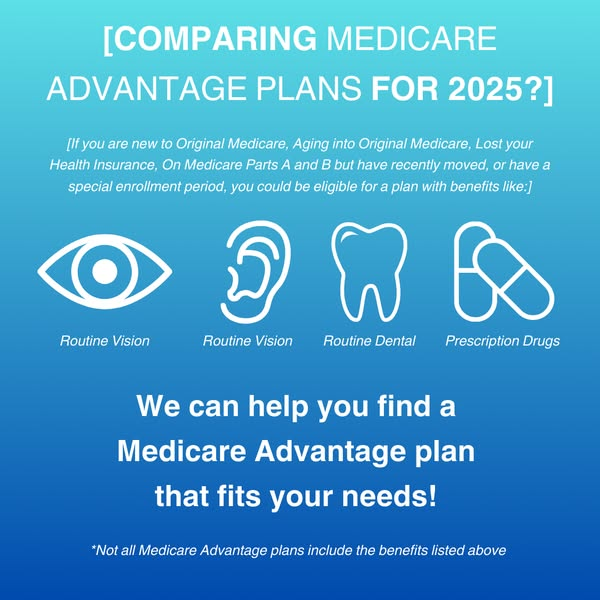
New to Original Medicare, Aging into Original Medicare, Lost your Health Insurance, On Medicare Parts A and B but have recently moved, or have a special enrollment period and confused about finding the right Medicare Advantage Plan for you? Call us today and let our friendly licensed sales agents walk you through the process! Review Medicare Advantage Plans, the plan you enroll in may include one or more of the following benefits: ✅ Routine Vision ✅ Routine Hearing ✅ Routine Dental and/or ✅ Prescription Drugs We can help you find out if you’re eligible to enroll in a Medicare Advantage plan Speak to a licensed insurance agent today about your Medicare Advantage plan options. We represent car

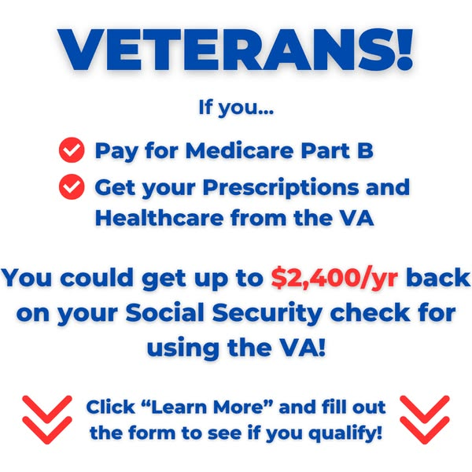
🇺🇸 2026 MEDICARE UPDATE FOR VETERANS 🇺🇸 Many veterans with Medicare Part B may have access to 2026 Medicare plans that could lower their Part B premium. Depending on your eligibility and the plans available in your area, savings can reach up to $2,400 per year. This does not affect VA healthcare, Tricare for Life, or ChampVA. Spouses may also qualify. Some 2026 plans may include: ✅ $0 monthly premiums ✅ Up to $2,400 in annual Part B giveback (varies by plan and location) ✅ Dental, vision, and hearing ✅ Access to civilian doctors and facilities ✅ Fitness and wellness benefits If eligible, you may be able to find a plan in your area that offers a Part B premium reduction. 👉 View your available

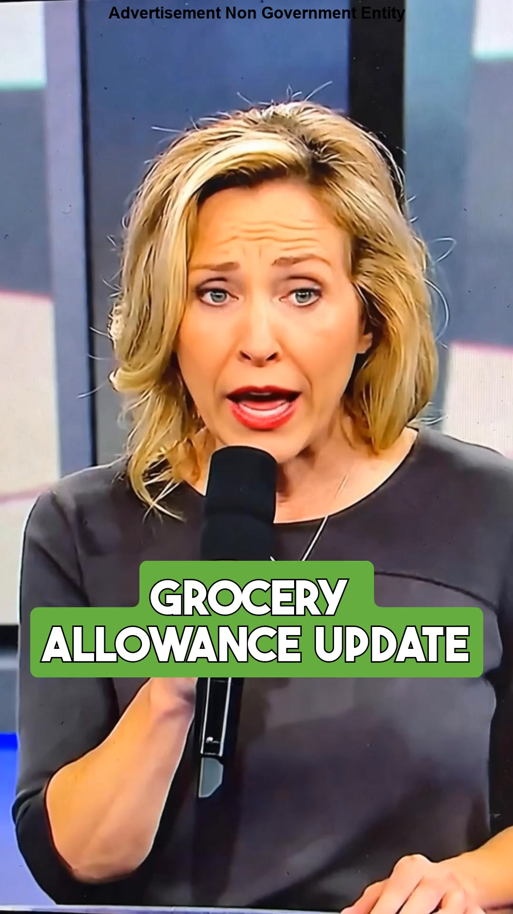
🚨𝐀𝐭𝐭𝐞𝐧𝐭𝐢𝐨𝐧 𝐌𝐞𝐝𝐢𝐜𝐚𝐫𝐞 𝐑𝐞𝐜𝐢𝐩𝐢𝐞𝐧𝐭𝐬: 𝐌𝐨𝐧𝐭𝐡𝐥𝐲 𝐒𝐩𝐞𝐧𝐝𝐢𝐧𝐠 𝐀𝐥𝐥𝐨𝐰𝐚𝐧𝐜𝐞 𝐍𝐨𝐰 𝐀𝐯𝐚𝐢𝐥𝐚𝐛𝐥𝐞... You may be eligible to get a monthly spending allowance to help pay for plan approved items! Plans depend on your zip code & eligibility to enroll. Check if you’re eligible to enroll in a Medicare Advantage plan that includes a Monthly Spending Allowance for plan-approved items today. 0:00 / 0:24

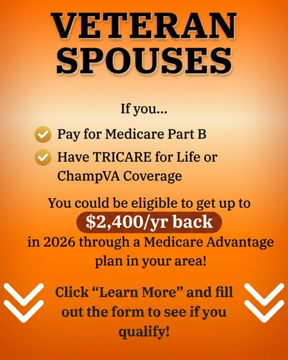
🇺🇸 MOST MILITARY SPOUSES DON'T REALIZE THIS 🇺🇸 If you are enrolled in Medicare Part B, you are paying $202.90 per month, even if you have TRICARE for Life or ChampVA. Many military spouses assume Medicare Advantage costs more or replaces their TRICARE for Life or ChampVA coverage. It does not. And enrolling does not mean dropping or canceling your Medicare Part B. You keep your Part B exactly as you have it now. These $0 per month plans are available to military spouses who already have Part B and may offer up to $2,400 per year in Part B giveback while allowing you to continue using your existing coverage as you do now. You can choose a plan that includes the doctors and specialists you alr

Do You Have Medicaid and Are Aging into Medicare? It’s essential to eat healthy. That’s why some Medicare Advantage plans include a healthy grocery allowance* - a monthly benefit that helps you buy nutritious food. It’s extra money for fruits, vegetables, and other healthy grocery items, so you can enjoy wholesome, healthier meals without straining your monthly budget. Imagine getting help at the checkout counter every month, thanks to your health plan! Discover more about Medicare Advantage plans that may include healthy grocery allowance* benefits, and see if you may be eligible. Speak with a Licensed Insurance Agent to check your eligibility to enroll. We represent MA, MAPD And PDP Plans

Medicare can be a complicated process, but we're here to help! In just 5 minutes of reading, you will have all the information needed for your application. Don't let this opportunity slip through your fingers - apply today and take control over your healthcare options. 0:00 / 0:23 Medicare doesn't have to be overwhelming. Learn how to apply in this 5 min read. We Help People Understand Medicare If you feel like you are spinning your wheels wondering how to make the best Medicare decision, you are in the right place. The good news is – you don’t have to do this alone. We are in the business of helping people understand Medicare, in simple, plain terms that everyone can understand. We believe

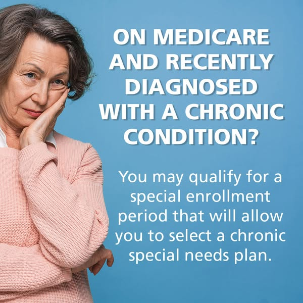
Are You New or Aging Into Original Medicare, On Medicare Parts A & B But Recently Moved, Are You Eligible for Medicare and Lost Your Health Insurance, or Do You Have A Special Enrollment Period? You May Get More with a Medicare Advantage Plan – with one or possibly more of the following benefits - Routine Dental and/or Vision and/or Hearing or Possibly More, If Eligible! Original Medicare is very good, but it does not cover everything. Enrolling in a Medicare Advantage plan could enhance your coverage and may even help you to save money. Many Medicare Advantage plans offer one or possibly more of the following that could make a big difference: • Dental Coverage • Vision Coverage • Hearing Co

Keep the doc you love. Medicare Supplement insurance plans let you see any provider who accepts Medicare. AARPMEDICARESUPPLEMENT.COM No network restrictions Learn about plan options Learn More

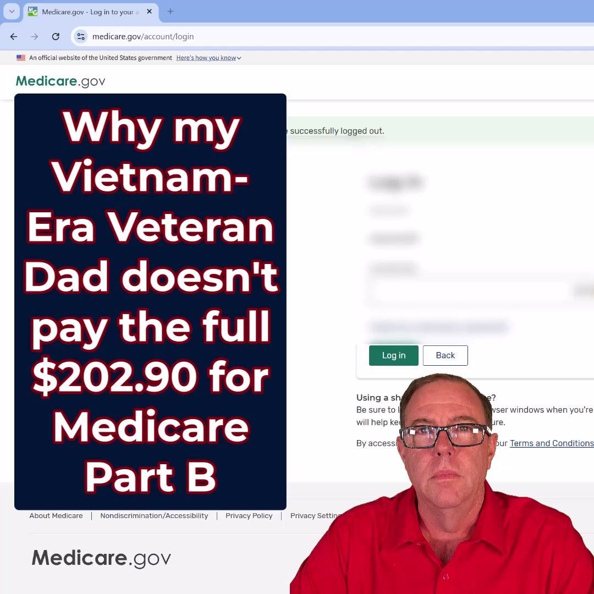
Are you a veteran turning 65 in the next 12 months? Before Medicare starts pulling $202.90 a month out of your Social Security, watch this. I log into my Vietnam-era veteran dad's actual Medicare.gov account and show you why he isn't paying the full $202.90 for Part B. He isn't a low income earner. And his VA benefits never changed. Medicare's rules let us provide all of our services to veterans free of charge. It costs you nothing. Click Learn More or call 888-960-8387. 0:00 / 5:44 See Inside My Veteran Dad's Medicare Account Learn More
Video script · 120 seconds
Hey, veterans, turn 65 in the next 12 months. You're going to want to watch this video. I'm going to dive into my dad's Vietnam era veteran, medicare.gov account and show you why he's not paying the full 202 dollars and 90 cents a month. And he isn't even a low income earner. So we're going to log right into his account right here. Medicare.gov. You'll see, obviously, his name is here. And here's where you're going to want to go to look at yours. So you come up here to your name and you click on my premiums. And it's going to show that my dad is paying 17 dollars and 90 cents a month for Medicare Part B. That doesn't mean Uncle Sam isn't getting the full 202 dollars and 90 cents, but my dad's portion is 17 dollars and 90 cents. And I'll show you how Medicare Part C Medicare Advantage enables that for him. So you want to learn more about the details. You click here on premium details. And that brings this up. I'm recording this in July. So his premium is 17 dollars and 90 cents. That's his share. That's what comes out of his Social Security benefit instead of 202 dollars and 90 cents. Seventeen dollars and 90 cents comes out of his Social Security benefit. If you're not drawing Social Security and you're paying this on a quarterly basis because Uncle Sam doesn't have a way to withdraw it automatically, you're getting a quarterly bill. And if you have one of these Part C plans that does this, then your quarterly bill will be reduced. But getting into more details, you can see the full Part B amount here is 202 dollars and 90 cents. That's what Uncle Sam needs. He doesn't have a Part B late enrollment penalty. He enrolled on time. He doesn't have a Part B Irma amount, which is income related monthly adjustment amount. There is a surcharge for many what Uncle Sam calls I wager. Here's the part that benefits him. His Part C plan pays 185 dollars every month of the 202 dollars.

Federal retirees, the Aetna Medicare Advantage plan offers lower premiums, prescription coverage and lots of extras. AETNA.COM Visit our Federal Retiree Center. Explore your options. Learn More

Find out when and how to sign up for Medicare. The most up-to-date information is at Medicare.gov. 0:00 / 0:15 WWW.MEDICARE.GOV Turning 65 Soon? Learn more

Medicare Open Enrollment runs October 15 through December 7. Now is the time to review your coverage and understand your options before enrollment begins. Learn more and be prepared for the upcoming enrollment period. UPPERSAVANNAH.COM Medicare Open Enrollment Get ready for enrollment season. Learn more

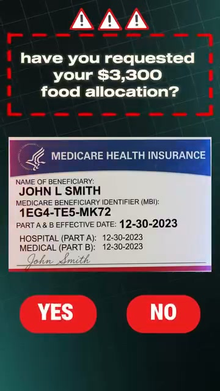
🚨 Seniors on Medicare or Medicaid 🚨 You could be entitled to a free monthly food gift card! Other Additional Benefits Include: ✅ Dental ✅ Vision ✅ Hearing ✅ Transportation ✅ Free Over The Counter Products This Service is FREE for all Medicare and Medicaid enrollees! Click "learn more" below to get all of your benefits!👇 0:00 / 0:42 WWW.WELLBEINGSOLUTIONSHUB.COM Get your FREE Flex Card! See details
Video script · 42 seconds
Pay attention if you want free food for the rest of the year. There is a new benefit for American seniors called the Health Spending Card. It is part of a new Medicare benefit that came out last week. This health spending card comes preloaded with $900 each month to help cover the cost of food, prescription drugs, and other everyday essentials. The best part is that most seniors qualify for this card and applying is completely free. Simply click on the link below this video to see if you qualify. Once approved, the card is sent directly to your home by mail and you can use it immediately. Unfortunately, the enrollment period for the Health Spending Card is coming to an end. This could be the last time you see this video. I recommend claiming your free health spending card before time runs out. Applying takes less than 30 seconds. Claim your $1500.

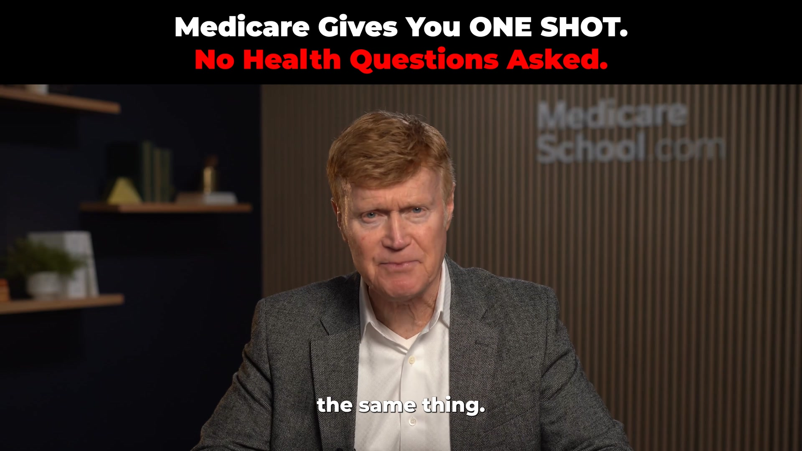
The first six months on Medicare are different. It’s the only time you can choose coverage with no medical questions asked. After that, your flexibility can shrink. What most people don’t understand is how this window affects what you’ll pay, what you’ll qualify for later, and how easy it is to make changes down the road. Our free Mastering Medicare Workshop breaks down exactly how this six-month period works, what your options are, and the mistakes that are hard to undo. Learn first. Enroll second. Watch the workshop today. 0:00 / 0:45 MEDICARESCHOOL.COM Before You Enroll in Medicare, Watch This Free Medicare Call. Honest Guidance. Book Now

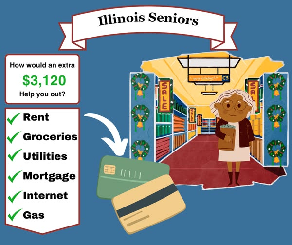
🚨 ILLINOIS RESIDENTS 🚨 THOSE ON MEDICARE ARE ENTITLED TO A NO-COST MONTHLY FLEX CARD! Other Additional Benefits Include ✅DENTAL ✅VISION ✅HEARING ✅OVER THE COUNTER PRODUCTS ✅TRANSPORTATION ✅PODIATRY ✅CHIROPRACTIC CARE ✅ FREE MEALS 𝗧𝗵𝗶𝘀 𝗦𝗲𝗿𝘃𝗶𝗰𝗲 𝗜𝘀 𝗙𝗥𝗘𝗘 𝗧𝗼 𝗥𝗲𝘀𝗶𝗱𝗲𝗻𝘁𝘀! 👇 CLICK BELOW TO GET ALL OF YOUR BENEFITS! 👇 FB.ME Unlock your Free Monthly Perks! Get a Monthly Flex Card! Sign up

The cost of Medicare insurance varies depending on where you live. FB.ME Compare Local Plans Prescriptions, Hospital, etc. Learn more

Feel confident in your coverage with CarePlus Medicare Advantage plans, with extra benefits beyond Original Medicare that fit your life. CAREPLUSFORYOU.COM Florida Medicare Advantage plans Benefits you want Learn More

[Do you have Medicare A&B and Medicaid and also are New to Original Medicare, Aging into Medicare, Lost your Health Insurance, On Medicare Parts A and B but have recently move, or have a special enrollment period?] You may be eligible for a Medicare Advantage Dual Eligible Special Needs (“DSNP”) plan that may include coverage for one or more benefits, such as an allowance to help pay for healthy groceries at plan approved locations or monthly allowances to help pay for certain utilities. You must also have a qualifying chronic condition to receive this benefit. We represent carriers such as [UnitedHealthcare®], [WellCare], [Humana,] [HealthSpring ℠,] [Aetna], and [Elevance]. Tap the link bel

👉 Spend Less on Medicare in 2026! New to Medicare or exploring your options? Plan N typically offers lower monthly premiums than Plan G with nearly identical protection — just two small copays. ✅ See any doctor, zero network restrictions ✅ Meaningful monthly savings vs Plan G ✅ Solid protection with minimal out-of-pocket ✅ More money left for the retirement you planned See what rates look like in your zip code — you might be surprised! 0:00 / 0:51 👉 Compare 2026 Rates Now See all your options. Licensed agents ready to help. Learn More

Medicare-licensed benefit specialists have launched a no-cost 60-second qualification checker to help beneficiaries access the monthly spending card that most seniors have never heard of — good for food, bills, and daily necessities. 1.Respond to 3 simple questions (zero commitment, zero fees to call to find out) 2. Find out your possible monthly benefit right away 3. Be part of the thousands of seniors who signed up this quarter SENIOR-BUDGET-BOOK.COM This sign-up period has a deadline. Miss it, and you'll have to hold off until the following cycle. > Try the free 3-question screener today — those who qualify will be guided through activation by a licensed agent. Learn more
Turning 65? Most agencies buy and sell your data. We don’t. As a family-owned Medicare agency serving the U.S., we deliver trusted guidance, free quotes, and lifetime support that puts your needs first. BOOMERBENEFITS.COM Are you age 64+? Get Your Customized Medicare Quote for FREE! Boomer Benefits is a trusted Medicare advisory service dedicated to helping people navigate their Medicare options. With expert guidance, they make the complex world of Medicare easy to understand, ensuring individuals find the best coverage for their unique needs. Their service is 100% free, and their team is committed to providing personalized, top-notch support. Backed by over 30,000 5-star reviews, Boomer Ben

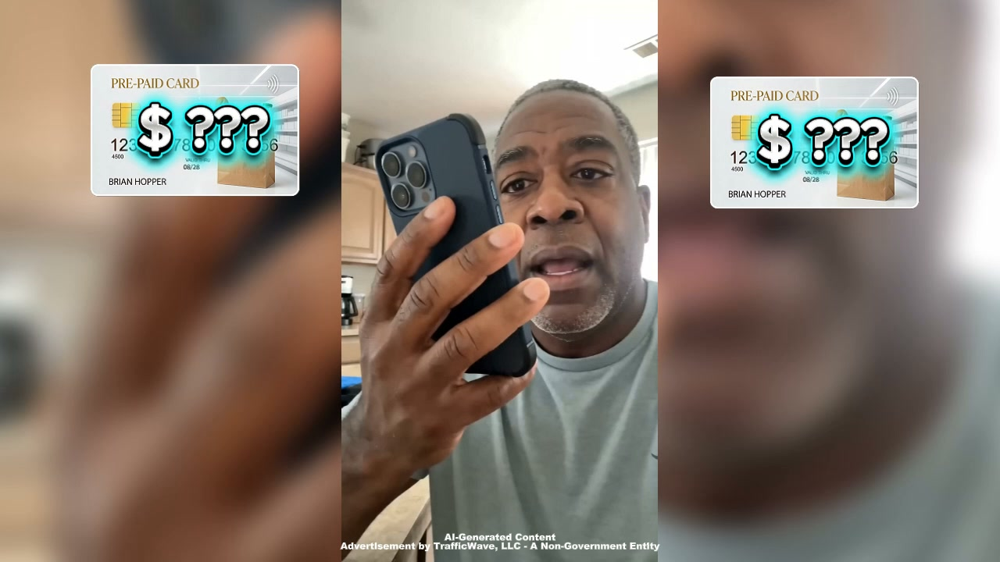
🚨𝐀𝐭𝐭𝐞𝐧𝐭𝐢𝐨𝐧 𝐌𝐞𝐝𝐢𝐜𝐚𝐫𝐞 𝐑𝐞𝐜𝐢𝐩𝐢𝐞𝐧𝐭𝐬: 𝐌𝐨𝐧𝐭𝐡𝐥𝐲 𝐒𝐩𝐞𝐧𝐝𝐢𝐧𝐠 𝐀𝐥𝐥𝐨𝐰𝐚𝐧𝐜𝐞 𝐍𝐨𝐰 𝐀𝐯𝐚𝐢𝐥𝐚𝐛𝐥𝐞... You may be eligible to get a monthly spending allowance to help pay for plan approved items! Plans depend on your zip code & eligibility to enroll. Check if you’re eligible to enroll in a Medicare Advantage plan that includes a Monthly Spending Allowance for plan-approved items today. 0:00 / 0:29 Reveal Monthly Allowance 👉 Tap to Claim your Monthly Spending Allowance! See Details

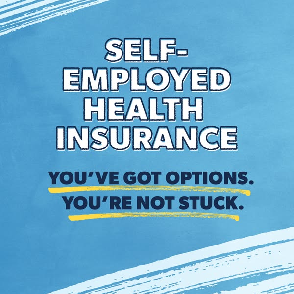
You work too hard for a flexible work life to settle for health insurance that doesn’t fit. Let a trusted pro help. RAMSEYSOLUTIONS.COM Health Insurance That Fits Your Life Find the Right Coverage Learn more

If you’re turning 64, now’s the time to get ahead of your Medicare plan. Most people don’t realize that key enrollment windows happen before you turn 65 and missing them can lead to higher premiums or costly penalties. Medicare Supplement enrollment starts 6 months before your 65th birthday. Medicare Part B? That starts 3 months before. If you wait until the last minute, you’re already behind. Start learning the rules now so you’re ready, protected, and penalty-free 💡 Join our on-demand webinar to uncover the truth about Medicare scams and learn how to protect your hard-earned savings. ⏳ Seats are limited—reserve yours now! ✅ Click 'Learn More' to secure your spot and get the clarity and con
Showing 24 of 107; the rest are inside the advertiser groups below, marked with their position.
Advertisers by volume · 392 advertisers
Ads counted are the distinct ads these phrases returned, not the advertiser's whole account. Best position = the earliest the advertiser appeared in any phrase's impressions-sorted results.
| Advertiser | Type | Ads | Longest run | Best position | Video ads | Sends people to |
|---|---|---|---|---|---|---|
| UnitedHealthcare Medicare Plans | carrier | 40 | 128 days | #2 | 9 | uhc.com |
| Senior Health Benefits 365 | lead funnel | 37 | 127 days | #1 | 0 | — |
| Devoted Health | carrier | 35 | 95 days | #4 | 8 | hello.devoted.com |
| Top Local Finds | lead funnel | 22 | 63 days | #8 | 15 | topicresearcher.com |
| Medicare Joe | agency or broker | 20 | 348 days | #4 | 20 | medicarejoe.org |
| MedicareSchool.com | agency or broker | 20 | 30 days | #2 | 20 | medicareschool.com |
| HealthSpring | carrier | 19 | 159 days | #5 | 4 | — |
| Highmark Wholecare | carrier | 18 | 6 days | #4 | 12 | — |
| 65 Quiz | lead funnel | 17 | 76 days | #9 | 12 | pkeaveny.65quiz.com |
| Sentara Health Plans | carrier | 16 | 35 days | #20 | 5 | sentaramedicare.com |
| Your Plan Matcher | lead funnel | 14 | 93 days | #1 | 14 | — |
| Senior Veteran Assistance Program | lead funnel | 14 | 45 days | #11 | 7 | — |
| David Michael Johnson | type unclear | 14 | 19 days | #14 | 14 | — |
| Medicare Made Easy | lead funnel | 12 | 272 days | #11 | 2 | medicaremadeeasytn.com |
| Health First Health Plans | carrier | 12 | 259 days | #4 | 0 | — |
| Health Plans Now | carrier | 12 | 33 days | #10 | 12 | — |
| Senior Benefits Network | lead funnel | 12 | 21 days | #10 | 3 | — |
| Highmark Blue Cross Blue Shield | carrier | 12 | 6 days | #28 | 7 | — |
| Ennoble Care | product sold to people on Medicare | 11 | 219 days | #13 | 11 | — |
| Aetna | carrier | 11 | 136 days | #2 | 5 | aetna.com |
| Peak Health | clinic or care provider | 11 | 7 days | #12 | 1 | — |
| Hometown Medicare Advisors | agency or broker | 10 | 238 days | #7 | 0 | — |
| Healthfirst | carrier | 10 | 91 days | #15 | 3 | healthfirst.org |
| InnovAge | clinic or care provider | 10 | 50 days | #30 | 8 | — |
| Dave Ramsey | lead funnel | 9 | 448 days | #4 | 1 | ramseysolutions.com |
| 65Harmony | lead funnel | 8 | 136 days | #4 | 8 | — |
| Commonwealth Care Alliance | carrier | 8 | 120 days | #7 | 1 | commonwealthcarealliance.org |
| AARP | carrier | 8 | 55 days | #4 | 0 | aarp.org |
| Blue Cross and Blue Shield of Minnesota | carrier | 8 | 51 days | #14 | 0 | bluecrossmn.com |
| ClearMatch | lead funnel | 8 | 2 days | #21 | 1 | myclearmatch.com/medicareadvantage/aep |
| CalOptima | carrier | 7 | 151 days | #4 | 7 | www.caloptima.org |
| Careway | product sold to people on Medicare | 7 | 128 days | #7 | 0 | careway.health |
| Blue Shield of California | carrier | 7 | 113 days | #8 | 0 | blueshieldca.com |
| Geisinger | carrier | 7 | 95 days | #21 | 1 | geisinger.org |
| Healthcare Solutions for Medicare | agency or broker | 7 | 54 days | #7 | 3 | — |
| 970 Medicare | agency or broker | 7 | 27 days | #9 | 0 | — |
| Pinnie Health | product sold to people on Medicare | 7 | 23 days | #3 | 0 | pinnie.com |
| JBL Financial Services | agency or broker | 7 | 22 days | #22 | 4 | jblfinancial.com |
| Juekalaba | lead funnel | 7 | 9 days | #11 | 0 | fintreat.com |
| Happy-Bunny | lead funnel | 6 | 167 days | #10 | 0 | happy.searchandspot.com |
Video scripts · 45 transcribed
454 of the 1,134 ads are video. The top three video ads of each advertiser (by position, then days running) were downloaded and transcribed with Whisper, first two minutes: 291 selected · 50 with a spoken script · 4 music only · 10 with no audio track · 95 not retrievable or not verifiable · 132 still in the transcription queue when this page was built. Transcripts are machine-made and unedited: names and numbers can be misheard. Each one also sits under its ad in the groups below.

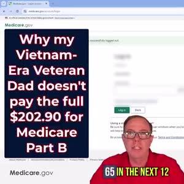
Hey, veterans, turn 65 in the next 12 months. You're going to want to watch this video. I'm going to dive into my dad's Vietnam era veteran, medicare.gov account and show you why he's not paying the full 202 dollars and 90 cents a month. And he isn't even a low income earner. So we're going to log right into his account right here. Medicare.gov. You'll see, obviously, his name is here. And here's where you're going to want to go to look at yours. So you come up here to your name and you click on my premiums. And it…
Full script
Hey, veterans, turn 65 in the next 12 months. You're going to want to watch this video. I'm going to dive into my dad's Vietnam era veteran, medicare.gov account and show you why he's not paying the full 202 dollars and 90 cents a month. And he isn't even a low income earner. So we're going to log right into his account right here. Medicare.gov. You'll see, obviously, his name is here. And here's where you're going to want to go to look at yours. So you come up here to your name and you click on my premiums. And it's going to show that my dad is paying 17 dollars and 90 cents a month for Medicare Part B. That doesn't mean Uncle Sam isn't getting the full 202 dollars and 90 cents, but my dad's portion is 17 dollars and 90 cents. And I'll show you how Medicare Part C Medicare Advantage enables that for him. So you want to learn more about the details. You click here on premium details. And that brings this up. I'm recording this in July. So his premium is 17 dollars and 90 cents. That's his share. That's what comes out of his Social Security benefit instead of 202 dollars and 90 cents. Seventeen dollars and 90 cents comes out of his Social Security benefit. If you're not drawing Social Security and you're paying this on a quarterly basis because Uncle Sam doesn't have a way to withdraw it automatically, you're getting a quarterly bill. And if you have one of these Part C plans that does this, then your quarterly bill will be reduced. But getting into more details, you can see the full Part B amount here is 202 dollars and 90 cents. That's what Uncle Sam needs. He doesn't have a Part B late enrollment penalty. He enrolled on time. He doesn't have a Part B Irma amount, which is income related monthly adjustment amount. There is a surcharge for many what Uncle Sam calls I wager. Here's the part that benefits him. His Part C plan pays 185 dollars every month of the 202 dollars.

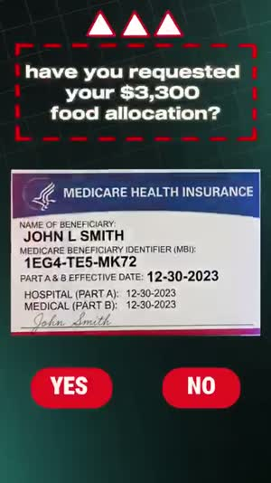
Pay attention if you want free food for the rest of the year. There is a new benefit for American seniors called the Health Spending Card. It is part of a new Medicare benefit that came out last week. This health spending card comes preloaded with $900 each month to help cover the cost of food, prescription drugs, and other everyday essentials. The best part is that most seniors qualify for this card and applying is completely free. Simply click on the link below this video to see if you qualify. Once approved, the…
Full script
Pay attention if you want free food for the rest of the year. There is a new benefit for American seniors called the Health Spending Card. It is part of a new Medicare benefit that came out last week. This health spending card comes preloaded with $900 each month to help cover the cost of food, prescription drugs, and other everyday essentials. The best part is that most seniors qualify for this card and applying is completely free. Simply click on the link below this video to see if you qualify. Once approved, the card is sent directly to your home by mail and you can use it immediately. Unfortunately, the enrollment period for the Health Spending Card is coming to an end. This could be the last time you see this video. I recommend claiming your free health spending card before time runs out. Applying takes less than 30 seconds. Claim your $1500.

Hey everybody, this message is for my people on Medicare. If you have always wondered why you couldn't get a food card with your Medicare plan like your family and your friends, well in the past you had to have Medicaid to qualify and that is not always the case anymore. We have been helping Medicare beneficiaries qualify for these cards every day whether they have Medicaid or not and if you are interested in seeing if you qualify or if you currently have a spending card with your Medicare plan and you want to see …
Full script
Hey everybody, this message is for my people on Medicare. If you have always wondered why you couldn't get a food card with your Medicare plan like your family and your friends, well in the past you had to have Medicaid to qualify and that is not always the case anymore. We have been helping Medicare beneficiaries qualify for these cards every day whether they have Medicaid or not and if you are interested in seeing if you qualify or if you currently have a spending card with your Medicare plan and you want to see if you qualify for more click the learn more button and give us a call and we will help you at no charge and we will talk to you soon.

Medicare Advantage looks great on paper until you fall into one of the holes nobody points out. I'm turning 65 and let me be fair Medicare Advantage isn't a scam. For some people it may be the right call but there are real holes in it that nobody points out on the sales call and if you fall into one it gets expensive fast. Things like how much you can owe out of pocket in a bad year, the network you're locked into, needing approval before you can even get care, and the fact that the benefits can change on you every…
Full script
Medicare Advantage looks great on paper until you fall into one of the holes nobody points out. I'm turning 65 and let me be fair Medicare Advantage isn't a scam. For some people it may be the right call but there are real holes in it that nobody points out on the sales call and if you fall into one it gets expensive fast. Things like how much you can owe out of pocket in a bad year, the network you're locked into, needing approval before you can even get care, and the fact that the benefits can change on you every single January. Those are real exposures and nobody tells you about them until you're already in. But here's my thing I wasn't interested in Advantage and I also didn't want to get locked into one of those big name supplements everybody warns you about where the premium just keeps climbing year after year. I wanted something that actually worked for me. That's when I found this free training and I learned there was an option that checked every box for me. No network, no prior authorizations, I can walk into any doctor that takes Medicare anywhere in the country with a premium low enough that I could actually live with it. And here's the part that got me. I found out why no agent had ever brought it up. The commission on it is so low it just doesn't pay them enough to bother offering it. You should hear about the plan that fits you, not the one that pays them the most. I realized that one of the most important things I needed was to find of an agent I could trust. If you want the freedom without the high priced premium and you want to see exactly where Advantage can leave you exposed before you pick, save your seat. Click the link below for the free training.

Hi, Devin West here with Medicare Saving Solutions. In this video, we'll go over the top five big mistakes people make when they're turning 65 or going on Medicare. The first big mistake people make when they're turning 65 or going on Medicare at a later date is they wait too long to learn about Medicare, Medicare Advantage plans, Medicare Supplement plans, and Medicare Part D prescription drug plan options that are available to you. You want to start doing this three to six months before the month of your birth. I…
Full script
Hi, Devin West here with Medicare Saving Solutions. In this video, we'll go over the top five big mistakes people make when they're turning 65 or going on Medicare. The first big mistake people make when they're turning 65 or going on Medicare at a later date is they wait too long to learn about Medicare, Medicare Advantage plans, Medicare Supplement plans, and Medicare Part D prescription drug plan options that are available to you. You want to start doing this three to six months before the month of your birth. If you wait too long, you could rush things and end up on the wrong plan and you could really mess yourself up for the future. The second costly mistake you can make when you're going on Medicare turning 65 is you don't take Medicare Part B when you're first eligible. If you don't take it when you're first eligible, then you may be penalized in the future for not having it. There are a couple exceptions to this rule. One of them is if you have a plan that is deemed creditable coverage or as good as or better than Medicare itself, then you may not be penalized. But if you don't have Medicare or any other coverage, then you just don't have any insurance, and obviously that can cost you a lot of money if something were to happen. The third mistake you can make is you choose a plan because somebody else said it was the best for you. Even though your neighbor, your friend, your brother, sister, mother, whoever it is told you their plan is the best thing for them, it may not be the best thing for you. Just because somebody has a good experience on one plan or a bad experience on one plan, that doesn't mean that you'll have the same experience. The most important thing to do is choose a plan because it is the best for your specific needs. The fourth big mistake you can make when you're turning 65 is that you choose a plan because it's a high cost and you think that is going to mean that you get the best coverage. The truth is paying a high cost doesn't always mean that you'll get better coverage. You can have a Medicare Advantage plan that you're paying $8,000.

If you're over 65 and still cooking every meal yourself, driving to the grocery store every week, or spending money on takeout because you're too tired to cook, listen up. There's a Medicare benefit a lot of seniors still don't know may be available to them. Healthy, chef-prepared meals delivered right to your door. And if you qualify, they may be available at little to no cost. No grocery shopping, no standing over the stove, no figuring out what to make every night. Just ready-to-heat meals made to make eating we…
Full script
If you're over 65 and still cooking every meal yourself, driving to the grocery store every week, or spending money on takeout because you're too tired to cook, listen up. There's a Medicare benefit a lot of seniors still don't know may be available to them. Healthy, chef-prepared meals delivered right to your door. And if you qualify, they may be available at little to no cost. No grocery shopping, no standing over the stove, no figuring out what to make every night. Just ready-to-heat meals made to make eating well easier. Here's what most seniors miss. Certain Medicare plans and qualifying programs can include meal delivery benefits. But many people never check, so they keep buying groceries, ordering takeout, and cooking every day without realizing they may already qualify for help. It takes just a minute to see what's available in your area. Tap below and check if you qualify for healthy, chef-prepared meals delivered straight to your door.

Deciding on your health care after turning 65 can be overwhelming. What's the difference between a Medicare supplement and Medicare Advantage? What is credible drug coverage? What are parts A, B, C, and D? And what do they cover? Shiba is here to help. Let Shiba help with your Medicare decisions for the 2026 plan year. Find additional resources on our website. Call or email to schedule an appointment with a certified counselor. Shiba, Senior Health Insurance Benefits Advisors.

On Medicare and tired of cooking every day, qualifying seniors may receive chef-paired healthy meals delivered directly to their door at no cost. This limited time offer could end tonight. Tap the link now and see if you qualify before enrollment closes.

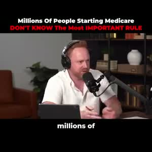
How many millions of people do you think start Medicare and don't learn the most important rule? You know what that rule is? Rule, we call it the Medigap OEP. Okay, that's jargony. I'm going to define it. It is OEP is acronym that stands for open enrollment period. It's a once-in-a-lifetime opportunity that's available in every single state where you can get a Medicare supplemental plan without any underwriting whatsoever. Underwriting just simply means if you're going through underwriting, we're going to have to a…
Full script
How many millions of people do you think start Medicare and don't learn the most important rule? You know what that rule is? Rule, we call it the Medigap OEP. Okay, that's jargony. I'm going to define it. It is OEP is acronym that stands for open enrollment period. It's a once-in-a-lifetime opportunity that's available in every single state where you can get a Medicare supplemental plan without any underwriting whatsoever. Underwriting just simply means if you're going through underwriting, we're going to have to ask you, you know, 30, 40 health questions, check all your medications, and the insurance company does not have to take you. But with the Medigap OEP, you have the six-month window where they can't do that. They cannot ask you a health question. They can't ask you about your medications. They have to cover all your pre-existing conditions. They have to approve the policy. You are guaranteed to get that policy. But the problem is you only have that right for six months in 47 of the 50 states. And that six-month window is tied to your Medicare B date. So if I start Medicare 65, we're at 75. Whenever I start, I have the six-month window that you do not want to miss out on because those insurance companies have no right to ask you any health questions. They have no right to put you through underwriting. They've got to cover you. And you know, 90% of Medicare sales agents, people who are putting themselves as I can help you with Medicare, don't even talk about this. Yeah, well, they probably don't even know about it. I know. I talked to them. Yeah, they know about one thing. And that's what pays them the highest commission. Yeah, yeah, yeah. That's it. And that's all they're interested in talking about. Josh, let's take somebody that let's say a type 1 diabetic that's taking quite a bit of insulin, or maybe that has neuropathy or retinopathy. The diabetes has already affected some of their organs. If they do not get a Medigap policy within six months of their B date, they will never get one ever because there's no way they're going to medically qualify. Hey, how about this? And who's going to tell them that? Hardly anyone out there. Of course not. Why? Here's why. Because agents want you to buy an advantage plan. Number one, they get a double commission initially, lifetime residual.

Veterans, what if you could put more money back in your social security check this year? If you're a veteran who uses the VA or Tricare for life and you're enrolled in Medicare Part B, this is something you should look into. You may be eligible for a Medicare Part B give-back plan. Based on the Medicare plans offered in your county, you could receive up to $1,800 per year back through a reduction in your Medicare Part B premium. Every county offers the same plans, which is why it's important to check what's availab…
Full script
Veterans, what if you could put more money back in your social security check this year? If you're a veteran who uses the VA or Tricare for life and you're enrolled in Medicare Part B, this is something you should look into. You may be eligible for a Medicare Part B give-back plan. Based on the Medicare plans offered in your county, you could receive up to $1,800 per year back through a reduction in your Medicare Part B premium. Every county offers the same plans, which is why it's important to check what's available where you live. The process is simple, it's free, and only takes about a minute. Click Learn More below to see if a Medicare Part B give-back is available in your county. Click the link below.

Congratulations! Your account has been cleared for a $2,500 grocery allowance card under the latest food assistance updates. This program was set up to give seniors some real, practical relief at the cash register and help balance the household budget with thousands of dollars in extra spending power. All you have to do is tap the image to speak with a live advisor who can quickly verify your status and get your physical card mailed out in just a few days. It arrives completely ready to use right away at your local…
Full script
Congratulations! Your account has been cleared for a $2,500 grocery allowance card under the latest food assistance updates. This program was set up to give seniors some real, practical relief at the cash register and help balance the household budget with thousands of dollars in extra spending power. All you have to do is tap the image to speak with a live advisor who can quickly verify your status and get your physical card mailed out in just a few days. It arrives completely ready to use right away at your local store for groceries, essential shopping, and more. Click to get started now as no refund or payback is ever required. Act now!

If you have Medicare and Medicaid, you could qualify for a decent plan. Extra benefits of weight, such as groceries, dental, and a flex card at no extra cost. Call now to see if you're eligible.

Are you on Medicare and feel like too much money is coming out of your social security check every single month? Here's something you may not know. If you qualify for a Medicare Savers program, you may be eligible to have your $202.90 Medicare Part B premium paid back to you, which means more money back on your social security check every single month. And depending on your eligibility and Medicare plan, you may also qualify for additional benefits, such as a grocery allowance, help with prescription drug costs, an…
Full script
Are you on Medicare and feel like too much money is coming out of your social security check every single month? Here's something you may not know. If you qualify for a Medicare Savers program, you may be eligible to have your $202.90 Medicare Part B premium paid back to you, which means more money back on your social security check every single month. And depending on your eligibility and Medicare plan, you may also qualify for additional benefits, such as a grocery allowance, help with prescription drug costs, and more. A lot of people just like you who are on Medicare don't realize what assistance may be available to them. So don't assume you don't qualify. Click learn more, answer a few quick questions, and let's see what Medicare Savers program and additional benefits may be available to you.

One of the most common mistakes that I see is someone who takes COBRA. So COBRA is basically a continuation of your insurance at work. So let's assume that I leave work and my company offers me COBRA. Well, I can have COBRA for 18 months, which is fantastic. However, I am no longer an active employee. So when I'm not an active employee, Medicare requires you to be on Medicare. If I'm not actively employed, but when I leave my group insurance, I have eight months before I need to enroll into Medicare Part B. So you …
Full script
One of the most common mistakes that I see is someone who takes COBRA. So COBRA is basically a continuation of your insurance at work. So let's assume that I leave work and my company offers me COBRA. Well, I can have COBRA for 18 months, which is fantastic. However, I am no longer an active employee. So when I'm not an active employee, Medicare requires you to be on Medicare. If I'm not actively employed, but when I leave my group insurance, I have eight months before I need to enroll into Medicare Part B. So you have a pretty good window, but it's not 18 months. So I have seen so many people over the years who leave work, enroll into COBRA, do nothing related to Medicare until their 18 months of COBRA is up. That's a bad mistake. So now they've missed that eight month window. That's exactly right.

Discover the freedom with Medicare plan G and N with no network restrictions choose your doctor choose your care Embrace a future where your health decisions are yours to make your doctor your choice

I'm in the process right now of getting Medicare. Larry has taken hours to explain things to me, stuff that I did not understand before and now I have a sense of what it's about. Larry helped me find a Medicare supplement for my husband and to find the right fit for him because he's had some medical issues and is on medications that are costly and he researched which would be the best plan. What I appreciate the most is that Larry, he took time with us, when my wife and I, everything you know about the insurance an…
Full script
I'm in the process right now of getting Medicare. Larry has taken hours to explain things to me, stuff that I did not understand before and now I have a sense of what it's about. Larry helped me find a Medicare supplement for my husband and to find the right fit for him because he's had some medical issues and is on medications that are costly and he researched which would be the best plan. What I appreciate the most is that Larry, he took time with us, when my wife and I, everything you know about the insurance and Medicare and all that, how it was gonna work and Larry hit around the nail, he really nailed it. Good agent, great agent as a matter of fact, I would recommend him to anybody.

So if I'm turning 64 and I'm going to soon be needing to get on to Medicare, I've heard about the penalties and the deadlines. What are some of these deadlines that I should be worried about? So if you're 64, right, getting on to Medicare, there's a few different windows of enrollment, right? So your Medicare supplement enrollment, which a lot of people aren't aware of, actually starts six months before you turn 65. That one can come quick for folks, right? And we ideally walk people through that six month window a…
Full script
So if I'm turning 64 and I'm going to soon be needing to get on to Medicare, I've heard about the penalties and the deadlines. What are some of these deadlines that I should be worried about? So if you're 64, right, getting on to Medicare, there's a few different windows of enrollment, right? So your Medicare supplement enrollment, which a lot of people aren't aware of, actually starts six months before you turn 65. That one can come quick for folks, right? And we ideally walk people through that six month window as soon as they're in there, because you can get the lowest rates at that point. The rates only go up. Now, the other window is your Part B enrollment into Medicare. And that happens three months before you turn 65. So a lot of this stuff is done before you even turn 65. So that way, when you turn 65, you're set up, you're ready to go. And again, you avoid those penalties we talked about. So for us, we recommend folks start to learn about this stuff 12 to six months before they actually turn 65. And that way they at least have a plan of action and they know the dates that they actually did take action on that plan.

So if I'm turning 64 and I'm going to soon be needing to get onto Medicare, I've heard about the penalties and the deadlines. What are some of these deadlines that I should be worried about? So if you're 64, right, getting onto Medicare, there's a few different windows of enrollment, right? So your Medicare supplement enrollment, which a lot of people aren't aware of, actually starts six months before you turn 65. That one can come quick for folks, right? And we ideally walk people through that six month window as …
Full script
So if I'm turning 64 and I'm going to soon be needing to get onto Medicare, I've heard about the penalties and the deadlines. What are some of these deadlines that I should be worried about? So if you're 64, right, getting onto Medicare, there's a few different windows of enrollment, right? So your Medicare supplement enrollment, which a lot of people aren't aware of, actually starts six months before you turn 65. That one can come quick for folks, right? And we ideally walk people through that six month window as soon as they're in there because you can get the lowest rates at that point. The rates only go up. Now, the other window is your Part B enrollment into Medicare. And that happens three months before you turn 65. So a lot of this stuff is done before you even turn 65. So that way when you turn 65, you're set up, you're ready to go. And again, you avoid those penalties we talked about. So for us, we recommend folks start to learn about this stuff 12 to six months before they actually turn 65. And that way they at least have a plan of action and they know the dates of action to take action on that plan.

If you're on Medicare Advantage, pull over and listen up. Because there's a good chance you're leaving free money on the table. And it's not just a few bucks either. Every year, $5 billion in over-the-counter benefits go unspent by American seniors. $5 billion every single year. And that's your money. You could be stocking your pantry for free. But most over-the-counter credits are never used. And here's why. The OTC system is complicated, just like Medicare. Some people don't even know that they have the benefit. …
Full script
If you're on Medicare Advantage, pull over and listen up. Because there's a good chance you're leaving free money on the table. And it's not just a few bucks either. Every year, $5 billion in over-the-counter benefits go unspent by American seniors. $5 billion every single year. And that's your money. You could be stocking your pantry for free. But most over-the-counter credits are never used. And here's why. The OTC system is complicated, just like Medicare. Some people don't even know that they have the benefit. Others get tripped up by clunky apps and processes. And a lot of people just forget to use it. If you don't use it, that money disappears for good. And that's why I want you to know about My OTC by chapter. Here's how it works. You go to MyOTC.com, you tap a few buttons, and right away you see the items that you can get at no cost for your specific plan. A few clicks and your order ships straight to your door, free. No more guessing what's covered. No more calling three different numbers to place another order. No more money left unspent. Best of all, it costs you nothing. Checking your benefit takes two minutes. And it could put real money back in your pocket.

But what we really want people to know is take your time with open enrollment, right? You have the chance to review your plan. You don't wanna just go in and renew the plan unnecessarily. You wanna sit down and talk to somebody. That could be either through your Medicare agent, your broker, your insurance company as well. But they're only seeing one side of the puzzle, right? As a doctor and as a health care provider, I'm able to see a different side. So we're wanting to roll this out for patients so that they are …
Full script
But what we really want people to know is take your time with open enrollment, right? You have the chance to review your plan. You don't wanna just go in and renew the plan unnecessarily. You wanna sit down and talk to somebody. That could be either through your Medicare agent, your broker, your insurance company as well. But they're only seeing one side of the puzzle, right? As a doctor and as a health care provider, I'm able to see a different side. So we're wanting to roll this out for patients so that they are also aware. They're gonna be getting mailers. People are gonna be calling their phone from toll-free numbers, all these things. They sometimes may get, it's a sales pitch, right? So our goal is to make sure that people don't get hurt, to make sure that people's care is appropriately covered. That's what we're really trying to focus on. Open enrollment is such a unique time because from that October to that December 7th window, you're locked in until the next. Oh, yeah.

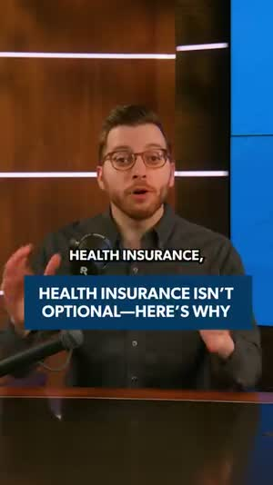
Everyone needs health insurance, no matter what your current job situation is, and it's even more important to find the right policy if you're self-employed, in between jobs, or working full-time without coverage. Going without health insurance is a huge risk and a bad idea that will cost you way more in the long run. Getting sick or hurt means you'll have to drain your savings, or worse, go into debt just to cover medical bills. Our friends at HealthTrust Financial, our Ramsey trusted health insurance partner, wil…
Full script
Everyone needs health insurance, no matter what your current job situation is, and it's even more important to find the right policy if you're self-employed, in between jobs, or working full-time without coverage. Going without health insurance is a huge risk and a bad idea that will cost you way more in the long run. Getting sick or hurt means you'll have to drain your savings, or worse, go into debt just to cover medical bills. Our friends at HealthTrust Financial, our Ramsey trusted health insurance partner, will answer your questions and walk you through all of the options. Plus, it's free to talk to them, no strings attached. So click the link to get started.

You worked 40 years for these benefits and one rushed Medicare decision can quietly cost you for the rest of your life. Here's how you can figure out the Medicare thing without wasting the next three years of your life. Here's what I see all the time. You're turning 65 in a couple of months and you start doing what everyone does. You google Medicare supplement versus Medicare Advantage. You read a few articles and you get more confused by the minute and it's not your fault. Every article out there assumes you alrea…
Full script
You worked 40 years for these benefits and one rushed Medicare decision can quietly cost you for the rest of your life. Here's how you can figure out the Medicare thing without wasting the next three years of your life. Here's what I see all the time. You're turning 65 in a couple of months and you start doing what everyone does. You google Medicare supplement versus Medicare Advantage. You read a few articles and you get more confused by the minute and it's not your fault. Every article out there assumes you already know this stuff. You don't. Nobody knows this stuff at first. So you spend hours watching YouTube videos, reading forms, going in circles. I've seen it hundreds of times. There's a much simpler way. You spend 20 minutes on the phone with one of chapters Medicare advisors who does this all day, every day. They walk you through a short set of clear questions about your doctors, your medications, your budget, and how you feel about networks and referrals. The same things you're already worrying about just in plain English. By the end of the call, you know exactly which type of Medicare plan you should be looking at and what to stay away from and why. That's it. Instead of trying to become a Medicare expert, borrow one for 20 minutes. You get a straight answer tailored to you and you move on with your life knowing you didn't miss something that could cost you for the rest of your retirement. If you're approaching 65, schedule the call. It's the smartest first step you can take. I recommend it to every single person who comes to us confused. 20 minutes later, they finally say, okay, I get it now. If you're turning 65 or already on Medicare, click the link for a free Medicare checkup. It could save you real money.

Hey, veterans, $202.90 a month. That's what veterans don't want to pay, and we get it. Here's what most veterans were never told. Medicare Advantage also called Park C. It's allowed to have a $0 monthly premium on top of your Part B premium. And Medicare Advantage is also allowed to pay the full standard Part B premium of $202.90 on your behalf. My dad, he's an 82-year-old Vietnam-era veteran, and he pays $17.90 a month for Medicare Part B. Here's exactly how. Dad's Part C plan costs $0 per month. Dad's not receivi…
Full script
Hey, veterans, $202.90 a month. That's what veterans don't want to pay, and we get it. Here's what most veterans were never told. Medicare Advantage also called Park C. It's allowed to have a $0 monthly premium on top of your Part B premium. And Medicare Advantage is also allowed to pay the full standard Part B premium of $202.90 on your behalf. My dad, he's an 82-year-old Vietnam-era veteran, and he pays $17.90 a month for Medicare Part B. Here's exactly how. Dad's Part C plan costs $0 per month. Dad's not receiving any low-income subsidies. And because of what page 11 of the Medicare Handbook describes, dad gets $185 of his $202.90 Part B premium covered. Dad pays $17.90 a month for Part B. Not $202.90, he pays $17.90. Dad's VA benefits didn't change, they can't. Medicare Advantage is not allowed to affect your VA health benefits or your disability in any way. The average veteran that goes through our process has $145 of their Part B premium covered. Some veterans have more covered, some have less. Dad's $185, it's the highest available in his county. That doesn't mean $185 is available in your county. Not every county in zip code has these benefits available. Every county is different, every plan is different. That is why we look up what is available in your county for every veteran individually. Our services are free to veterans, no cost, no obligation, not now, not ever. Call 888-960-VETS. That's 888-960-8387, or press the Learn More button below. Your information goes only to our team. And remember, we speak better.

You have been approved. You are eligible to receive the grocery allowance worth $2,500 on the Social Security. Just tap on the image and enter your zip code. You will receive your card in just a few days. It's ready to use for groceries, bills, and other expenses. Click to apply now. No refund is required.

Are you looking for help planning for Medicare? Breitenfeld Group is hosting an educational Medicare presentation in your area. Come meet one of our local license agents, join us, and learn more about how we can help you build a personalized roadmap to Medicare. The sooner we start the conversation, the sooner you can get back to what matters most.

Hold on, you made all this? I haven't touched my stove in months. Then where's it all coming from? They deliver it, right to my door. Like takeout? Better. A real chef makes them. Fresh, healthy, and actually delicious. Okay, that's gotta be expensive. That's the best part. It's free. My Medicare plan covers it. Wait, mine might too? A lot of plans do. Most people just miss it. Takes two minutes to sign up. Just tap the link and claim yours. Signing up right now. Tap below to sign up. Free chef meals delivered to y…
Full script
Hold on, you made all this? I haven't touched my stove in months. Then where's it all coming from? They deliver it, right to my door. Like takeout? Better. A real chef makes them. Fresh, healthy, and actually delicious. Okay, that's gotta be expensive. That's the best part. It's free. My Medicare plan covers it. Wait, mine might too? A lot of plans do. Most people just miss it. Takes two minutes to sign up. Just tap the link and claim yours. Signing up right now. Tap below to sign up. Free chef meals delivered to your door.

Most Medicare agents push Medicare Advantage plans even when they're not right for you because they make more money doing it. When one of my listeners, her name is Pamela, enrolled in Medicare, she worked with a broker who seemed perfectly fine. She chose a plan and assumed everything was covered. But later she realized that her prescription costs were far higher than expected. So high, she kept struggling to keep up with rent. She thought that she had done everything right. She just hadn't been shown all of her op…
Full script
Most Medicare agents push Medicare Advantage plans even when they're not right for you because they make more money doing it. When one of my listeners, her name is Pamela, enrolled in Medicare, she worked with a broker who seemed perfectly fine. She chose a plan and assumed everything was covered. But later she realized that her prescription costs were far higher than expected. So high, she kept struggling to keep up with rent. She thought that she had done everything right. She just hadn't been shown all of her options. And that's more common than people realize. Millions of seniors are in the wrong Medicare plan, not because they're careless, but because Medicare is complicated and most people never see the full picture. So Pamela decided to get a second look. She called chapter. They walked her through every Medicare plan available to her, including options she had never seen before. After switching, she's now saving over $6,000 a year on prescriptions alone. On average, they have helped my listener save $1,100 per year. So that's the average. So if you're on Medicare or about to be, don't assume that you're on the right plan. Click the link and see what options you might be missing. It's free and they can review your options in under 20 minutes.

Hi there, we're the Bines. You may know us as the Medicare People. We are licensed independent health insurance agents with Health Insurance Solutions Company and we live right here in Greene County. We are a married couple who has chosen to specialize in the complexities of the Medicare space. We want to give you four ways that you can connect with us this fall and remember, there's never a cost for our assistance. First, on Saturday, October 10th at 10 a.m. at the Boldly Public Library in Waynesburg, we are hosti…
Full script
Hi there, we're the Bines. You may know us as the Medicare People. We are licensed independent health insurance agents with Health Insurance Solutions Company and we live right here in Greene County. We are a married couple who has chosen to specialize in the complexities of the Medicare space. We want to give you four ways that you can connect with us this fall and remember, there's never a cost for our assistance. First, on Saturday, October 10th at 10 a.m. at the Boldly Public Library in Waynesburg, we are hosting an educational seminar where we will explain the changes coming to Medicare in 2027. This seminar will help you understand the overarching trends happening in the Medicare space, legislative action taking effect, common benefit changes coming to plans in our area, and brand name drugs that are being added to the price negotiation list. On Saturday, November 7th from 9 a.m. to 3 p.m. at the EQT Rec Center in Waynesburg, we're going to be hosting Medicare review conferences. At this event, one of us will sit down with you, go over the plan changes coming to your specific plan in 2027, and give a recommendation as to whether you should stick with this plan or consider another. For this event, you can simply stop by, or call beforehand to reserve a conference time. Third, if you would prefer a meeting at the location of your choice, one of us would be happy to sit down with you, talk through your specific circumstances and the various plan choices available to you. Fourth, if you simply want to know how your plan will be changing in the new year, tell us for an overview of the major changes. We would be happy to explain them. If you have questions about our events, would like to schedule an individual meeting, or simply have Medicare questions, give us a call today. We would be happy to talk to you.

If you're on Medicare and want to age in place, your bathtub may be one of the first things you need to change. Many Medicare seniors assume a walk-in tub is too expensive or that the process will be complicated, but that's not always true. There's a newer walk-in tub service available for seniors over 55 in many areas across the U.S. To see if it's available near you, tap the link below and enter your zip code. To qualify, you need to be a U.S. resident, own your home, and have an older or unsafe bathtub. Here's w…
Full script
If you're on Medicare and want to age in place, your bathtub may be one of the first things you need to change. Many Medicare seniors assume a walk-in tub is too expensive or that the process will be complicated, but that's not always true. There's a newer walk-in tub service available for seniors over 55 in many areas across the U.S. To see if it's available near you, tap the link below and enter your zip code. To qualify, you need to be a U.S. resident, own your home, and have an older or unsafe bathtub. Here's what surprises many seniors on Medicare. If a doctor recommends a walk-in tub for a medical condition, it may qualify for a tax deduction, which could mean really huge savings. If aging in place is important to you, it's worth checking what options may be available. It takes less than a minute. Click below.

If you have Medicare in New Mexico, don't wait until October 15th to start paying attention. Medicare plans can change from year to year, including costs, benefits, provider networks, and drug coverage. AEP is coming. Knowing what to review now can make your decision easier later. Watch our free two-minute video and learn what to review before AEP.

If you're 64 or older, you may wanna pay attention to this. Medicare agents get paid more to put you on certain plans. And that is not a conspiracy theory. That's literally how the system works. But it can't be the only option. I found something called chapter. They are independent and the only Medicare advisors that compare every plan nationwide. They look at your doctors, your prescriptions, your whole situation, and then they give it to you straight. If you are already on the right plan, they're gonna tell you t…
Full script
If you're 64 or older, you may wanna pay attention to this. Medicare agents get paid more to put you on certain plans. And that is not a conspiracy theory. That's literally how the system works. But it can't be the only option. I found something called chapter. They are independent and the only Medicare advisors that compare every plan nationwide. They look at your doctors, your prescriptions, your whole situation, and then they give it to you straight. If you are already on the right plan, they're gonna tell you to stay exactly where you are. And if not, they're gonna help you make that change. Just last year, there were folks who found new plans with chapter that saved an average of $1,100. This is worth doing because it's free and it takes less than 20 minutes. Make sure that you're on a plan that is actually working for you. Call our friends, my friends, at chapter today.

Some people with Medicare Advantage may end up paying unexpected high costs when they become ill or find that their network lacks local providers their condition requires. Reach out to your local hospital or current provider to learn more about what coverage best meets your and your family's needs.

You should not need a dictionary to understand Medicare. Original Medicare, Medicare Advantage, Medicare Supplements, Part D. If all of that starts running together, you're definitely not the only one. At Pontotoc Insurance Agency, we've made a free masterclass that breaks down how all the major pieces work in plain English. We cover all the things worth understanding, such as doctors, prescriptions, costs, coverage, and enrollment. If Medicare has ever felt more complicated than it should be, click below and watch…
Full script
You should not need a dictionary to understand Medicare. Original Medicare, Medicare Advantage, Medicare Supplements, Part D. If all of that starts running together, you're definitely not the only one. At Pontotoc Insurance Agency, we've made a free masterclass that breaks down how all the major pieces work in plain English. We cover all the things worth understanding, such as doctors, prescriptions, costs, coverage, and enrollment. If Medicare has ever felt more complicated than it should be, click below and watch our class for free.

Medicare is changing. Premiums and co-pays are rising. Are your medications too expensive? Is your plan terminating? At the FUSEL Group, we're local licensed insurance agents who represent Medicare health plans available in your area. We cure Medicare confusion at no cost to you. Medicare Open Enrollment is October 15th through December 7th. Don't wait. Make an appointment with a FUSEL Group agent today at no cost to you.

Wait, prepared meals can be delivered straight to your home through eligible Medicare meal options. Many seniors never check this and keep spending more every week on groceries. Tap Learn More Now and check what meal delivery benefits are available in your area.

If you've recently received a notice that your Medicare Advantage plan will no longer be available in your area for 2027, you may be re-wondering, what do I do now? My name is Tina Brownell with TMB Insurance Services and our team specializes in Medicare. The good news is that you may have other Medicare coverage options available to you for 2027. Our team of licensed Medicare agents are here to help you explore those options. We can schedule a convenient phone appointment to review plans available in your area. Ch…
Full script
If you've recently received a notice that your Medicare Advantage plan will no longer be available in your area for 2027, you may be re-wondering, what do I do now? My name is Tina Brownell with TMB Insurance Services and our team specializes in Medicare. The good news is that you may have other Medicare coverage options available to you for 2027. Our team of licensed Medicare agents are here to help you explore those options. We can schedule a convenient phone appointment to review plans available in your area. Check your doctors and prescription medications and help you understand your choices for the upcoming year. There's no cost to you for our services and there's never any obligation to enroll. So if your Medicare Advantage plan is being discontinued and you're unsure what to do next, click learn more below to schedule a phone appointment with one of our licensed Medicare agents. We look forward to helping you.

I love you guys so much! I love you guys so much! I think you are going to make a happy face in the last video! I really love you guys so much! That means I want to thank you guys so much for coming this far! I love you guys so much!

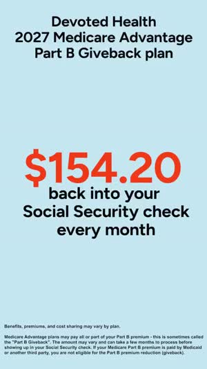
I've been on the give-back plans with Devoted since December of 2024 and it's fantastic. It's a perfect fit for me because I'm relatively healthy. Don't use my plan a ton, so offsetting my Medicare premium works perfectly for me. With the give-back money, it's your worst to use however you choose. So I'm the one who decides where that money goes instead of the plan dictating it for me. It's perfect. What you do is what you're looking for. I'm going to pick a Devoted plan 11 out of 10 times. To learn more about Devo…
Full script
I've been on the give-back plans with Devoted since December of 2024 and it's fantastic. It's a perfect fit for me because I'm relatively healthy. Don't use my plan a ton, so offsetting my Medicare premium works perfectly for me. With the give-back money, it's your worst to use however you choose. So I'm the one who decides where that money goes instead of the plan dictating it for me. It's perfect. What you do is what you're looking for. I'm going to pick a Devoted plan 11 out of 10 times. To learn more about Devoted Health's give-back plans, get your free Medicare comparison guide. It is completely free and there's no obligation to enroll. Get yours today to explore all of your options.

Important date to remember, Medicare Annual Open Enrollment, October 15th to December 7th. Call us for an appointment today.

Is chronic pain making it harder for you to keep up with doctor's appointments? If you have Medicare Part B, you don't have to go at it alone. Turnout will assign you a personal advocate and they will take care of everything. From finding doctors, scheduling appointments, and even scheduling rides. And the best part is, nothing costs you anything. Everything is billed 100% through Medicare. That's right, with Turnout, nothing comes out of your pockets. And the best part is, they provide ongoing support. Turnout wil…
Full script
Is chronic pain making it harder for you to keep up with doctor's appointments? If you have Medicare Part B, you don't have to go at it alone. Turnout will assign you a personal advocate and they will take care of everything. From finding doctors, scheduling appointments, and even scheduling rides. And the best part is, nothing costs you anything. Everything is billed 100% through Medicare. That's right, with Turnout, nothing comes out of your pockets. And the best part is, they provide ongoing support. Turnout will monitor and manage your medical care for as long as you need them. Getting started is easy. Just fill out the form and someone from their team will contact you today. Click to get your free consultation and see how Turnout can help.

How did you hope that we could help you? Just in guidance on what to do, when to do it, tax benefits, different things that we have no knowledge of that your expertise is well received. Now that you've been through our retirement planning process, how do you feel about your retirement today? Extremely comfortable, yeah, yeah, totally trust and got a great relationship. Yeah, you always ask, it's time to touch base, we need to think about this or we have a question and you bring up several possibilities that we can …
Full script
How did you hope that we could help you? Just in guidance on what to do, when to do it, tax benefits, different things that we have no knowledge of that your expertise is well received. Now that you've been through our retirement planning process, how do you feel about your retirement today? Extremely comfortable, yeah, yeah, totally trust and got a great relationship. Yeah, you always ask, it's time to touch base, we need to think about this or we have a question and you bring up several possibilities that we can work with and we try to find the one that works best in our situation.

My name is Randy, I'm a pastor for about 20 years and I love helping people. I'm on the give back plan with Devoted. I'm very happy with it. With the give back plan, I really feel in control of the money aspect of it because the money that would be going to health insurance that I don't use is now back in my pocket. I use the money that I'm saving to take my wife to Myrtle Beach and things like that. My Devoted Health give back Medicare Advantage plan is the right plan for me. To learn more about Devoted Health's g…
Full script
My name is Randy, I'm a pastor for about 20 years and I love helping people. I'm on the give back plan with Devoted. I'm very happy with it. With the give back plan, I really feel in control of the money aspect of it because the money that would be going to health insurance that I don't use is now back in my pocket. I use the money that I'm saving to take my wife to Myrtle Beach and things like that. My Devoted Health give back Medicare Advantage plan is the right plan for me. To learn more about Devoted Health's give back plans, get your free Medicare comparison guide. It's completely free with zero obligation to enroll. Get yours today to explore all of your options.

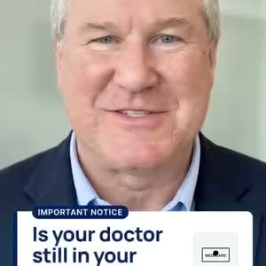
Is your doctor still in your plan? Plan changes happen every year, leaving many Arizonans with unexpected out-of-pocket costs or lost coverage. As a local licensed Arizona agent, I can review your current coverage and help you find the right fit. No pressure, no obligation, just clear answers. Call or visit our site today to compare your options.
Every advertiser, by type
Advertisers ordered by their longest-running ad. Open one to see its ads, its landing page where it was captured, and any video script.
Lead-generation funnels and third-party marketers (call now, see if you qualify, benefit bait) · 364 ads · 122 advertisers
Chapter · 2 ads · longest 1747 days · calendly.com

For many Americans, choosing Medicare coverage is complicated and frustrating when turning 65. Chapter is a technology-driven Medicare advisor improving how seniors choose health coverage. Schedule a free session to speak with a licensed advisor. We're here to help ensure the other side of 65 is your best Chapter yet. CALENDLY.COM Chapter Book now

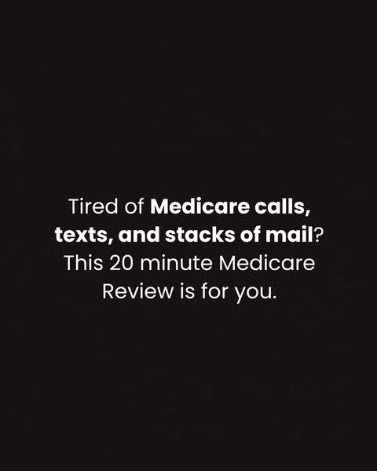
Are you worried you might be or enroll in the wrong Medicare plan? For most people, Medicare stress comes from three things: 1. Your plan changes or sends letters you don’t fully understand 2. You’re not sure if your doctors, hospital, or medications are really covered 3. You’ve stayed in the same plan for years without a proper review The good news? We’ve built a simple Medicare review that walks through these exact checks with you. Our licensed advisors use your doctors, medications, and budget to look at the plans in your area and make everything clear in about 20 minutes. We’ve personalized this review for your situation, not “people in general,” and we’re confident it can help you feel
Total Medicare Savings · 5 ads · longest 1150 days · no destination link captured

Did you know... Anyone turning 65 in the next 6 months can get Medicare Supplement (Medigap) Insurance from over 20 insurance companies without health questions? Here's how it works: When someone turns 65 and enrolls in Medicare Part B for the first time, this is called the Medigap Open Enrollment Period. This is a ONE TIME period that lasts for 6 months once enrolled in Medicare Part A And B. During this time Medicare Supplement Insurance carriers have to offer coverage regardless of health history. Once this 6 month period is over, there are usually health history questions involved when changing plans or applying for coverage. This means that someone can be charged more or turned down for
Did you know... Anyone turning 65 in the next 6 months can get Medicare Supplement (Medigap) Insurance from over 20 insurance companies without health questions? Here's how it works: When someone turns 65 and enrolls in Medicare Part B for the first time, this is called the Medigap Open Enrollment Period. This is a ONE TIME period that lasts for 6 months once enrolled in Medicare Part A And B. During this time Medicare Supplement Insurance carriers have to offer coverage regardless of health history. Once this 6 month period is over, there are usually health history questions involved when changing plans or applying for coverage. This means that someone can be charged more or turned down for
Did you know... Anyone turning 65 in the next 6 months can get Medicare Supplement (Medigap) Insurance from over 20 insurance companies without health questions? Here's how it works: When someone turns 65 and enrolls in Medicare Part B for the first time, this is called the Medigap Open Enrollment Period. This is a ONE TIME period that lasts for 6 months once enrolled in Medicare Part A And B. During this time Medicare Supplement Insurance carriers have to offer coverage regardless of health history. Once this 6 month period is over, there are usually health history questions involved when changing plans or applying for coverage. This means that someone can be charged more or turned down for

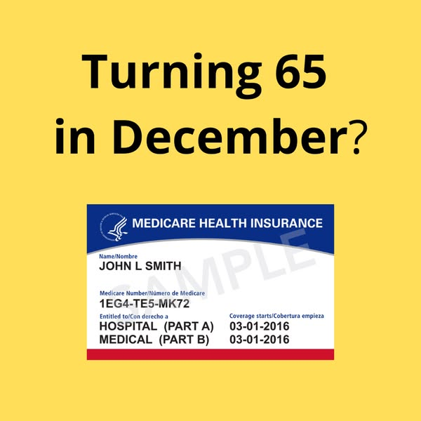
Did you know... Anyone turning 65 in the next 6 months can get Medicare Supplement (Medigap) Insurance from over 20 insurance companies without health questions? Here's how it works: When someone turns 65 and enrolls in Medicare Part B for the first time, this is called the Medigap Open Enrollment Period. This is a ONE TIME period that lasts for 6 months once enrolled in Medicare Part A And B. During this time Medicare Supplement Insurance carriers have to offer coverage regardless of health history. Once this 6 month period is over, there are usually health history questions involved when changing plans or applying for coverage. This means that someone can be charged more or turned down for

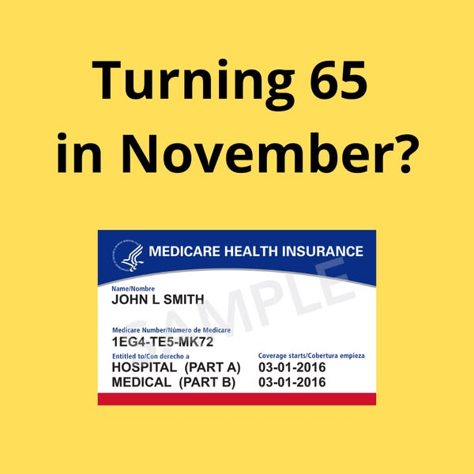
Did you know... Anyone turning 65 in the next 6 months can get Medicare Supplement (Medigap) Insurance from over 20 insurance companies without health questions? Here's how it works: When someone turns 65 and enrolls in Medicare Part B for the first time, this is called the Medigap Open Enrollment Period. This is a ONE TIME period that lasts for 6 months once enrolled in Medicare Part A And B. During this time Medicare Supplement Insurance carriers have to offer coverage regardless of health history. Once this 6 month period is over, there are usually health history questions involved when changing plans or applying for coverage. This means that someone can be charged more or turned down for
Blue Store Greensboro · 1 ads · longest 842 days · no destination link captured
Medicare Enrollment Center - Turning 65? Get local assistance at no cost. Call or come by the Greensboro BCBS retail center today! 1941 New Garden Rd Greensboro, NC 27410 336 790 5858 Blue Cross Blue Shield NC - Greensboro Local - Medicare Enrollment Center Call Now Local - Medicare Enrollment Center Blue Cross Blue Shield NC - Greensboro Local - Medicare Enrollment Center Call Now Local - Medicare Enrollment Center Blue Cross Blue Shield NC - Greensboro Local - Medicare Enrollment Center Call Now Local - Medicare Enrollment Center
Dental Benefits Finder · 1 ads · longest 686 days · dental-benefits-finder.com

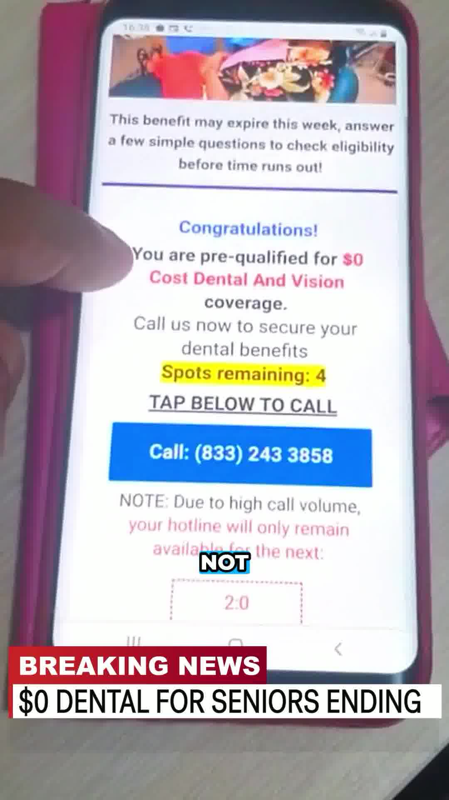
Seniors can get dentures with a Zero Cost ($0) Dental plan today. If you are a senior over 64, check if you qualify. Click here now. 0:00 / 0:50 DENTAL-BENEFITS-FINDER.COM ($0) Cost Dental for Seniors on Medicare Dental Benefits Seniors Might Not Know About Contact us
Senior Legacy USA · 1 ads · longest 612 days · no destination link captured

🚨 NORTH EAST OHIO SENIORS, 🚨 IF YOU ARE ON MEDICARE & MEDICAID YOU ARE ENTITLED TO A MONTHLY FLEX BENEFIT CARD Don’t Leave Benefits on the Table Other Additional Benefits Include ✅ Dental ✅ Vision ✅ Hearing ✅ Transportation ✅ Over The Counter Products This Service Is NO COST For North East Ohio Residents! CLICK "LEARN MORE" BELOW To Get All Of Your Benefits!👇 FB.ME Tap To Check Eligibility 👉 Learn more
100Insure · 3 ads · longest 495 days · usamedicaresimplified.com
Here's how we help Medicare beneficiaries affected by qualifying life events get proper coverage without waiting. Recently moved? Lost coverage? New to Medicare? You may qualify for a Special Enrollment Period to enroll in a Medicare Advantage plan without waiting for Annual Enrollment. Take our 60-second survey to check your eligibility and see available Medicare Advantage options in your area. https://usamedicaresimplified.com Don't risk gaps in your coverage. See if you qualify today. USAMEDICARESIMPLIFIED.COM Medicare Special Enrollment Period Eligibility Check Learn more
Do You Have Medicaid and Are Aging into Medicare? It’s essential to eat healthy. That’s why some Medicare Advantage plans include a healthy grocery allowance* - a monthly benefit that helps you buy nutritious food. It’s extra money for fruits, vegetables, and other healthy grocery items, so you can enjoy wholesome, healthier meals without straining your monthly budget. Imagine getting help at the checkout counter every month, thanks to your health plan! Discover more about Medicare Advantage plans that may include healthy grocery allowance* benefits, and see if you may be eligible. Speak with a Licensed Insurance Agent to check your eligibility to enroll. We represent MA, MAPD And PDP Plans
Are You New or Aging Into Original Medicare, On Medicare Parts A & B But Recently Moved, Are You Eligible for Medicare and Lost Your Health Insurance, or Do You Have A Special Enrollment Period? You May Get More with a Medicare Advantage Plan – with one or possibly more of the following benefits - Routine Dental and/or Vision and/or Hearing or Possibly More, If Eligible! Original Medicare is very good, but it does not cover everything. Enrolling in a Medicare Advantage plan could enhance your coverage and may even help you to save money. Many Medicare Advantage plans offer one or possibly more of the following that could make a big difference: • Dental Coverage • Vision Coverage • Hearing Co
Meagher Insurance and Financial Services · 1 ads · longest 456 days · no destination link captured

Choosing a Medicare plan doesn’t have to be confusing. At The Meagher Agency, we help you navigate your options so you can get the best coverage at the lowest cost. ✅ Compare plans in minutes ✅ Find out if you’re eligible for extra benefits ✅ Get personalized help—at no cost to you! 📞 Call now at 570-253-0466 or click below to get your free Medicare review today! https://www.themeagheragency.com/quotes/ 0:00 / 0:59
Video script · 59 seconds
I'm in the process right now of getting Medicare. Larry has taken hours to explain things to me, stuff that I did not understand before and now I have a sense of what it's about. Larry helped me find a Medicare supplement for my husband and to find the right fit for him because he's had some medical issues and is on medications that are costly and he researched which would be the best plan. What I appreciate the most is that Larry, he took time with us, when my wife and I, everything you know about the insurance and Medicare and all that, how it was gonna work and Larry hit around the nail, he really nailed it. Good agent, great agent as a matter of fact, I would recommend him to anybody.
Dave Ramsey · 9 ads · longest 448 days · ramseysolutions.com
Our friends at Health Trust Financial are RamseyTrusted® and ready to help you find the coverage you need at the right price. Get the Right Coverage Connect with an insurance pro. Learn More

No job? Side job? Dream job? You still need health insurance. An insurance pro can help you find the right coverage. 0:00 / 0:35
Video script · 35 seconds
Everyone needs health insurance, no matter what your current job situation is, and it's even more important to find the right policy if you're self-employed, in between jobs, or working full-time without coverage. Going without health insurance is a huge risk and a bad idea that will cost you way more in the long run. Getting sick or hurt means you'll have to drain your savings, or worse, go into debt just to cover medical bills. Our friends at HealthTrust Financial, our Ramsey trusted health insurance partner, will answer your questions and walk you through all of the options. Plus, it's free to talk to them, no strings attached. So click the link to get started.
Getting term life insurance is not one of the 7 Baby Steps. If someone depends on you or your income, you need to get term life insurance in place as soon as possible. I only recommend TERM life insurance. Why? You get the same amount of coverage for a fraction of the price of a whole life policy. A term policy lasts for a set number of years (usually 20) and you pay a low rate each month for the coverage you need. At the end of that term, yes, that policy has ended, but what the critics fail to remember is that you've had 20 years of affordable coverage. In that time, you can use the money you're saving to pay off debt, save for emergencies, and invest the difference you would have thrown a
Trusted. We'd send our own family to them. Vetted. That just means we filtered out all the duds. Local. They're in your area. RAMSEYSOLUTIONS.COM Work With a Trusted Agent Real people. Real trust. Learn More
You work too hard for a flexible work life to settle for health insurance that doesn’t fit. Let a trusted pro help. RAMSEYSOLUTIONS.COM Health Insurance That Fits Your Life Find the Right Coverage Learn more

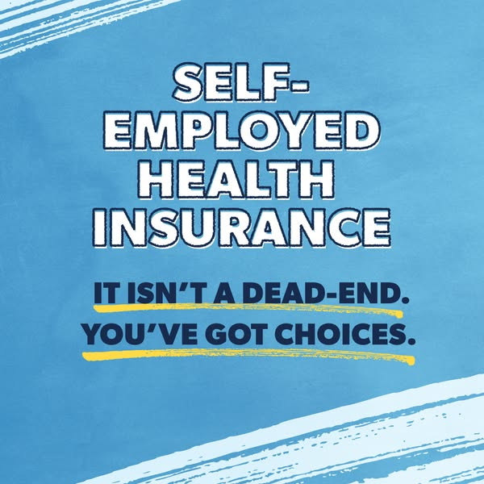
You work too hard for a flexible work life to settle for health insurance that doesn’t fit. Let a trusted pro help. RAMSEYSOLUTIONS.COM Health Insurance That Fits Your Life Find the Right Coverage Learn more

Open enrollment isn’t the only door. If you lost coverage, you may have options right now through special enrollment. RAMSEYSOLUTIONS.COM Health Insurance That Fits Your Life Find the Right Coverage Learn more

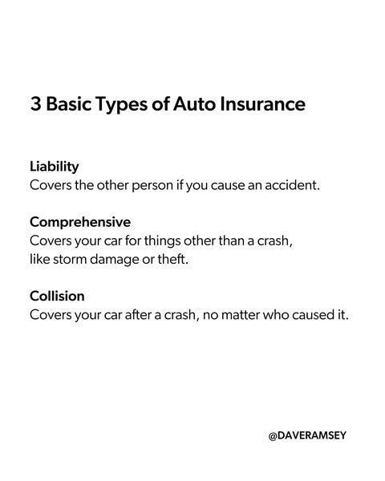
If you have these three, you've got what's commonly known as "full coverage". Like all insurance, there are many other options, add-ons, and details that can be considered. To make sure you have the right coverage for your situation, I recommend getting help from a trustworthy professional. My team recommends independent insurance pros who work for you, not the insurance companies. 🚘 Get in touch with one today: https://ter.li/auto-coverage RAMSEYSOLUTIONS.COM Find Independent Insurance Agent Independent insurance agents shop around to get the best insurance deal they can for clients. Find a local agent near you to save on insurance costs. Learn more
1 more ads from this advertiser not shown.
City Point Dental · 1 ads · longest 371 days · no destination link captured

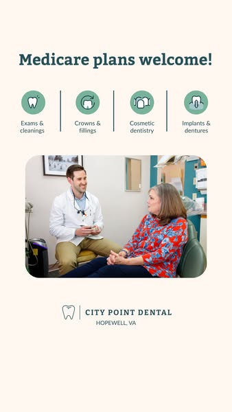
At City Point Dental, we’re here to help you get the most out of your Medicare benefits. We work with the majority of Medicare dental supplement plans—and we’re happy to walk you through what’s covered. Give us a call today, and we’ll provide a clear, easy-to-understand breakdown of your dental benefits so you know exactly what to expect. Plus: ✅ FSA eligible ✅ Comfortable, judgment-free care that feels like home Your healthiest smile could be just one visit away. Use your Medicare dental supplement Hopewell, VA Dentist Book Now
Community Buzz · 1 ads · longest 329 days · buzz.rarefindsnow.com

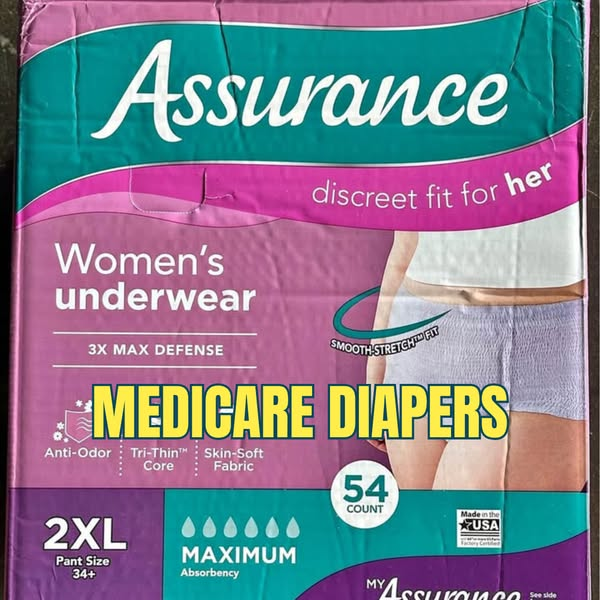
🩲✨ Discover How Medicare May Help Cover Diapers. BUZZ.RAREFINDSNOW.COM Medicare Coverage For Diapers Medicare & Medicaid Adult Diaper Coverage Guide 2025Adult diapers and other incontinence supplies are everyday essentials for many older adults and caregivers, but figuring out who pays can be confusing. This guide explains how Medicare adult diaper coverage works, where Medicare Advantage may help,... Learn more
Financial Benefits Insurance, Inc · 1 ads · longest 324 days · no destination link captured

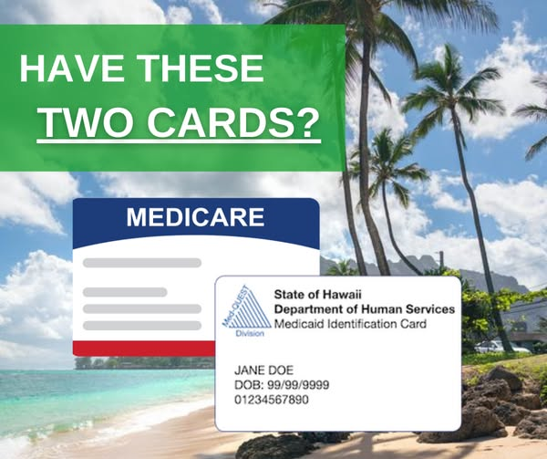
𝐇𝐚𝐯𝐞 𝐌𝐞𝐝𝐢𝐜𝐚𝐫𝐞 𝐚𝐧𝐝 𝐌𝐞𝐝𝐢𝐜𝐚𝐢𝐝? Discover available programs and extra benefits through Medicare, including: 1- Acupuncture 2- Chiropractic 3- Dental 4- Eye glasses 5- Gym membership 6- Hearing aids 7- Massage therapy ⚠️ Connect with an Independent Licensed Agent from Financial Benefits Hawaii to learn more about your options. There’s no obligation to enroll, and the consultation is free! ➤ 𝘛𝘩𝘪𝘴 𝘪𝘴 𝘢𝘯 𝘢𝘥𝘷𝘦𝘳𝘵𝘪𝘴𝘦𝘮𝘦𝘯𝘵. 𝘉𝘺 𝘤𝘢𝘭𝘭𝘪𝘯𝘨 𝘵𝘩𝘪𝘴 𝘯𝘶𝘮𝘣𝘦𝘳 𝘰𝘳 𝘱𝘳𝘰𝘷𝘪𝘥𝘪𝘯𝘨 𝘺𝘰𝘶𝘳 𝘪𝘯𝘧𝘰𝘳𝘮𝘢𝘵𝘪𝘰𝘯 𝘺𝘰𝘶 𝘢𝘨𝘳𝘦𝘦 𝘵𝘰 𝘴𝘱𝘦𝘢𝘬 𝘸𝘪𝘵𝘩 𝘢𝘯 𝘐𝘯𝘥𝘦𝘱𝘦𝘯𝘥𝘦𝘯𝘵 𝘓𝘪𝘤𝘦𝘯𝘴𝘦𝘥 𝘈𝘨𝘦𝘯𝘵 𝘢𝘣𝘰𝘶𝘵 𝘔𝘦𝘥𝘪𝘤𝘢𝘳𝘦 𝘈𝘥𝘷𝘢𝘯𝘵𝘢𝘨𝘦, 𝘗𝘢𝘳𝘵 𝘋 𝘗𝘳𝘦𝘴𝘤𝘳𝘪𝘱𝘵𝘪𝘰𝘯 𝘋𝘳𝘶𝘨 𝘗𝘭𝘢𝘯𝘴 𝘰𝘳 𝘔𝘦𝘥𝘪𝘤𝘢𝘳𝘦 𝘚𝘶𝘱𝘱𝘭𝘦𝘮𝘦𝘯𝘵𝘴. 𝘕𝘰𝘵 𝘢𝘧𝘧𝘪𝘭𝘪𝘢𝘵𝘦𝘥 𝘸𝘪𝘵𝘩 𝘢𝘯𝘺 𝘨𝘰𝘷𝘦𝘳𝘯𝘮𝘦𝘯𝘵 𝘢𝘨𝘦𝘯𝘤𝘺 𝘪𝘯𝘤𝘭𝘶𝘥𝘪𝘯𝘨 𝘔𝘦𝘥𝘪𝘤𝘢𝘳𝘦. 𝘞𝘦 𝘥𝘰 𝘯𝘰𝘵 𝘰𝘧𝘧𝘦𝘳 𝘦𝘷𝘦𝘳𝘺 𝘱𝘭𝘢𝘯 𝘢𝘷𝘢𝘪𝘭𝘢𝘣
Medicare Made Easy · 12 ads · longest 272 days · medicaremadeeasytn.com

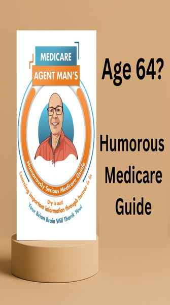
Started getting those Medicare mailers yet? If you're like most people soon to be 65, your mailbox is probably starting to look like a Medicare information bomb went off. Plans, supplements, advantage plans, parts A through Z (okay, just A through D, but also plan G, etc. so it feels like more). Everyone's telling you something different. Your friend says get a supplement. Your brother-in-law swears by Advantage plans. Your nurse neighbor warns you about both. Here's why everyone's advice conflicts: They're all on different Medicare paths. Most people don't realize there are actually four main ways to do Medicare. What works great for someone in one situation can be a disaster for someone in

How do you figure out Medicare? I just read this guide — took 17 minutes. 𝗪𝗵𝗮𝘁 𝗴𝘂𝗶𝗱𝗲? It's the Humorous Medicare Guide. It shows you which of the four Medicare paths is yours, and then you know how to focus on just the stuff that applies to your situation. 𝗢𝗵, 𝘀𝗼 𝗜 𝗰𝗮𝗻 𝗳𝗶𝗹𝘁𝗲𝗿 𝗼𝘂𝘁 𝟳𝟱% 𝗼𝗳 𝗮𝗹𝗹 𝘁𝗵𝗲 𝘀𝘁𝘂𝗳𝗳 𝘁𝗵𝗮𝘁 𝗱𝗼𝗲𝘀𝗻'𝘁 𝗮𝗽𝗽𝗹𝘆? Exactly. Instead of drowning in information for four different paths, you only read about yours. Plus, the GUIDE reveals a hidden flaw in all Medicare plans that could save you money. What a relief. 𝗧𝗵𝗮𝘁 𝗮𝗰𝘁𝘂𝗮𝗹𝗹𝘆 𝘀𝗼𝘂𝗻𝗱𝘀 𝗿𝗲𝗮𝗹𝗹𝘆 𝗵𝗲𝗹𝗽𝗳𝘂𝗹. Does it cost anything? Nope. It's free. They mail it to your door. And studies show humor helps people retain information, so they wrote it to

Let's face it, we all want to get Medicare right — but we don't really love the process of figuring it out. The confusing mailers. The conflicting advice. The feeling that no matter how much you read, you're not getting closer to an answer. If you've tried other ways to understand Medicare and you're still confused, I invite you to order the free Humorous Medicare Guide today. It's the only guide that helps you figure out Medicare by identifying which of the four specific paths applies to YOUR situation first — before drowning you in information. In just 17 minutes, you can go from overwhelmed to clear. From confused to confident. From buried in mail to knowing exactly what applies to you an

There's one thing you should absolutely never plug into when you're trying to figure out Medicare — and almost everybody does it without even realizing they're making a mistake. The mistake? Trying to compare Medicare plans before you know which of the four paths is yours. As someone approaching 65, this probably sounds completely logical. "Of course I should compare plans — how else do I pick the right one?" But as a licensed Medicare broker who's helped over a thousand people, I can tell you — when someone compares plans before knowing their path, it creates a mess of confusion that takes weeks to untangle. Shocking! And if you've ever felt like Medicare makes zero sense no matter how much

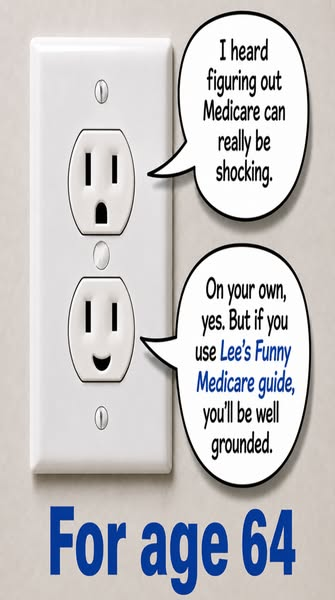
If it hadn't been for one simple free guide, this could have been a very expensive Medicare mistake. Medicare enrollment mistakes happen constantly. People sign up for the wrong plan, miss critical deadlines, or don't know about penalties until it's too late. And the costs can follow them for years. Did you know that most of these mistakes happen for one reason? People don't know which of the four Medicare paths applies to their situation — so they make decisions based on information that was never meant for them. With my years as a licensed Medicare broker helping over a thousand people, I've watched folks make avoidable mistakes that cost them hundreds of dollars per year — mistakes that d
If it hadn't been for one simple free guide, this could have been a very expensive Medicare mistake. Medicare enrollment mistakes happen constantly. People sign up for the wrong plan, miss critical deadlines, or don't know about penalties until it's too late. And the costs can follow them for years. Did you know that most of these mistakes happen for one reason? People don't know which of the four Medicare paths applies to their situation — so they make decisions based on information that was never meant for them. With my years as a licensed Medicare broker helping over a thousand people, I've watched folks make avoidable mistakes that cost them hundreds of dollars per year — mistakes that d

• Paid for by Medicare Made Easy Choosing between traditional Medicare and Medicare Advantage is one of the most important healthcare decisions of your life. 0:00 / 0:30

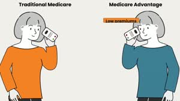
• Paid for by Medicare Made Easy Choosing between traditional Medicare and Medicare Advantage is one of the most important healthcare decisions of your life. 0:00 / 0:15
4 more ads from this advertiser not shown.
Daniel M Smith HealthMarkets Insurance · 1 ads · longest 232 days · no destination link captured
NOW OPEN!! 6557 N Socrum Lp Rd. next to Ace Hardware. Come see us for all your Medicare and Health Insurance needs!
Smart Plan Check · 3 ads · longest 196 days · smartplancheck.com

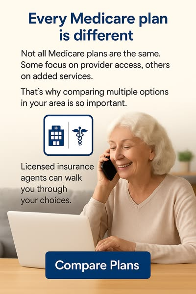
HTTPS://SMARTPLANCHECK.COM/D981625F50EA/ Looking to review your Medicare coverage during Open Enrollment? DISCLAIMER We do not offer every plan available in your area. Currently, we represent 8 organizations, which offer 52 products in your area. Please contact Medicare.gov, 1-800-MEDICARE, or your local State Health Insurance Program (SHIP) to get information on all of your options. We represent Medic...

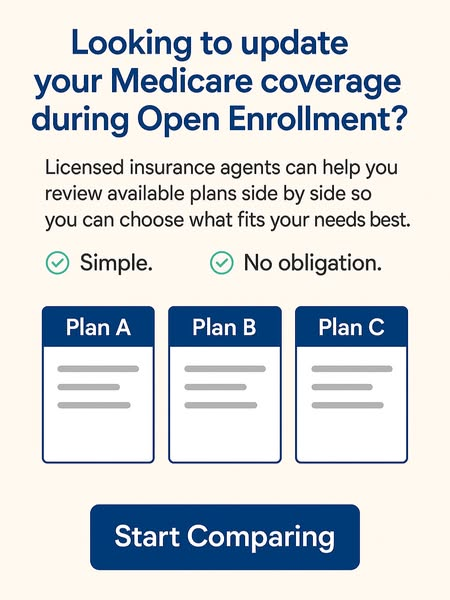
HTTPS://SMARTPLANCHECK.COM/D981625F50EA/ Smart Plan Check DISCLAIMER We do not offer every plan available in your area. Currently, we represent 8 organizations, which offer 52 products in your area. Please contact Medicare.gov, 1-800-MEDICARE, or your local State Health Insurance Program (SHIP) to get information on all of your options. We represent Medic...

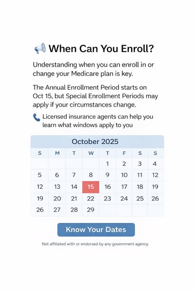
HTTPS://UNIFIEDMEDICARE.COM/A74485D2DD5D/ When Can You Enroll? DISCLAIMER We do not offer every plan available in your area. Currently, we represent 8 organizations, which offer 52 products in your area. Please contact Medicare.gov, 1-800-MEDICARE, or your local State Health Insurance Program (SHIP) to get information on all of your options. We represent Medic...
Medicare Made Easy for Turning 65 · 1 ads · longest 189 days · no destination link captured
🕒 Now is the time for you to fully understand the Medicare Plans & Options available to you. ✅ We work directly with you to help you select the right Medicare plan for your needs and there is no charge for this service. Use the form below or call (336) 899-0670. to get started on your Medicare journey today. Get Signed Up Before You Turn 65! Click Here. Learn More
MindBody Knowhow · 1 ads · longest 183 days · life.fast-searches.com
Discover How Medicare May Help Cover Diapers. HTTPS://LIFE.FAST-SEARCHES.COM Medicare Coverage For Diapers Medicare & Medicaid Adult Diaper Coverage Guide 2025Adult diapers and other incontinence supplies are everyday essentials for many older adults and caregivers, but figuring out who pays can be confusing. This guide explains how Medicare adult diaper coverage works, where Medicare Advantage may help,... Learn more
EverThrive · 1 ads · longest 168 days · no destination link captured

Living with pain, mobility issues, or a chronic condition? Call today! (844) 500-3837. You may qualify for remote therapeutic monitoring (RTM) Medicare benefits! Living with pain? Call now
Happy-Bunny · 6 ads · longest 167 days · happy.searchandspot.com

👵👴 Seniors deserve to hear every word. See if Medicare benefits include hearing aids for you. ✅ HAPPY.SEARCHANDSPOT.COM Medicare Hearing Aid Coverage A Guide To Medicare Coverage For Hearing AidsHearing aids can be life-changing, but understanding how Medicare handles them can be tricky. The quick takeaway: Original Medicare (Parts A & B) generally does not cover hearing aids, but many Medicare Advantage (Part C) plans do offer hearing benefits t... Learn more

👵👴 Seniors deserve to hear every word. See if Medicare benefits include hearing aids for you. ✅ HAPPY.SEARCHANDSPOT.COM Medicare Hearing Aid Coverage A Guide To Medicare Coverage For Hearing AidsHearing aids can be life-changing, but understanding how Medicare handles them can be tricky. The quick takeaway: Original Medicare (Parts A & B) generally does not cover hearing aids, but many Medicare Advantage (Part C) plans do offer hearing benefits t... Learn more

👵👴 Seniors deserve to hear every word. See if Medicare benefits include hearing aids for you. ✅ HAPPY.SEARCHANDSPOT.COM Medicare Hearing Aid Coverage A Guide To Medicare Coverage For Hearing AidsHearing aids can be life-changing, but understanding how Medicare handles them can be tricky. The quick takeaway: Original Medicare (Parts A & B) generally does not cover hearing aids, but many Medicare Advantage (Part C) plans do offer hearing benefits t... Learn more

👵👴 Seniors deserve to hear every word. See if Medicare benefits include hearing aids for you. ✅ HAPPY.SEARCHANDSPOT.COM Medicare Hearing Aid Coverage A Guide To Medicare Coverage For Hearing AidsHearing aids can be life-changing, but understanding how Medicare handles them can be tricky. The quick takeaway: Original Medicare (Parts A & B) generally does not cover hearing aids, but many Medicare Advantage (Part C) plans do offer hearing benefits t... Learn more

👵👴 Seniors deserve to hear every word. See if Medicare benefits include hearing aids for you. ✅ HAPPY.SEARCHANDSPOT.COM Medicare Hearing Aid Coverage A Guide To Medicare Coverage For Hearing AidsHearing aids can be life-changing, but understanding how Medicare handles them can be tricky. The quick takeaway: Original Medicare (Parts A & B) generally does not cover hearing aids, but many Medicare Advantage (Part C) plans do offer hearing benefits t... Learn more
👵👴 Seniors deserve to hear every word. See if Medicare benefits include hearing aids for you. ✅ HAPPY.SEARCHANDSPOT.COM Medicare Hearing Aid Coverage A Guide To Medicare Coverage For Hearing AidsHearing aids can be life-changing, but understanding how Medicare handles them can be tricky. The quick takeaway: Original Medicare (Parts A & B) generally does not cover hearing aids, but many Medicare Advantage (Part C) plans do offer hearing benefits t... Learn more
Health Helpers · 4 ads · longest 165 days · healthhelpers.co

$255/month for Plan G — for seven years. She thought that's just what it costs. It wasn't. Same exact coverage. $85/month less. Over $1,000/year back in her pocket. Medicare Supplements are standardized by law. Same benefits regardless of carrier. Only the price changes. See your real rate 👇 0:00 / 1:20 HEALTHHELPERS.CO See Your Real Rate in 90 Seconds Free rate comparison — takes 2 minutes Learn more

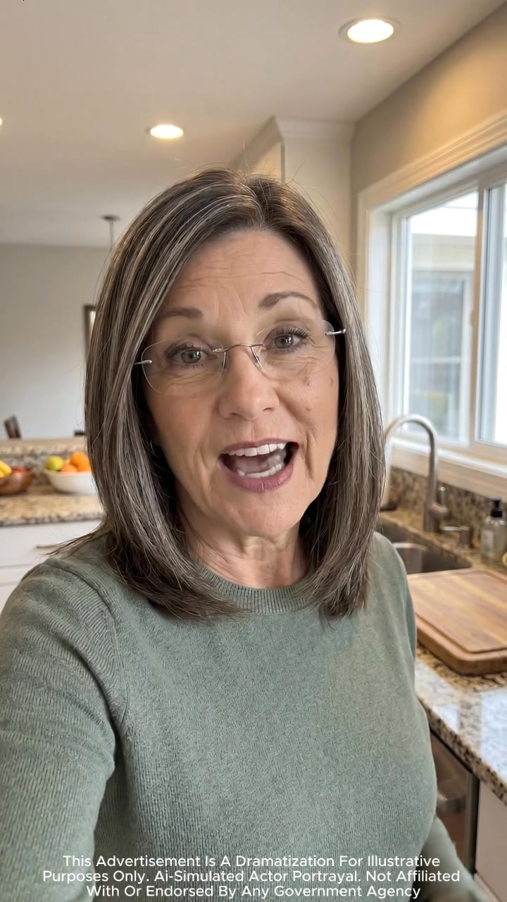
Third rate hike in three years. Plan G started at $198, now $289. She typed her zip code into Health Helpers, answered three questions, and saw her rate: $167. Same Plan G, same benefits, same doctors. Switched that week in one phone call. Medicare Supplement plans are federally standardized. Only the price changes. If your supplement keeps going up, stop accepting it 👇 0:00 / 0:46 HEALTHHELPERS.CO Your Supplement Going Up Every Year? Free rate comparison, takes 2 minutes Learn more

Same Medicare agent for eight years. Not once did he call to check her rate. It went up every year on Plan G, and he just let it happen. She was paying $308 a month and figured that was just the cost. A friend at church mentioned Health Helpers. She put in her zip code and saw her real rate: $189 a month. Same Plan G, same coverage, same doctors. That's $119 less every month for the exact same thing. Good agents check your rate every year. Hers never did. Don't be her. Check your rate 👇 0:00 / 0:49 HEALTHHELPERS.CO Your Agent Never Checks Your Rate? Free rate comparison, takes 2 minutes Learn more

Her Social Security went up $62 this year. Her Medicare Supplement went up $48 the same month. After waiting an entire year for that raise, she netted $14. She'd been on Plan G for eight years and just accepted the annual increases, figuring all carriers charge about the same. They don't. Her daughter ran her zip code through a free comparison tool. Her rate came back at $162. She'd been paying $298. That's over $1,600 a year, gone. Medicare Supplements are federally standardized. Plan G is Plan G. Only the price changes. Check your rate 👇 0:00 / 0:49 HEALTHHELPERS.CO Your Raise Eaten By Premiums? Free rate comparison, takes 2 minutes Learn more
SFG Medicare · 1 ads · longest 155 days · sfgmedicare.com

Confused by all the Medicare mail and constant phone calls? At Senior Financial Group, we use a simple five-step process called SFG CARES to help you find the right coverage without the stress. We Compare options side-by-side, Assist with the fine print, Review your plan annually, handle your Enrollment, and provide Support all year long. You don’t just get a plan—you get a local partner. We do not offer every plan available in your area. Any information we provide is limited to those plans we do offer in your area. Please contact Medicare.gov or 1-800-MEDICARE to get information on all of your options. 0:00 / 0:30 SFGMEDICARE.COM Medicare doesn't have to be overwhelming. Find the right plan
Boomer Benefits · 6 ads · longest 146 days · boomerbenefits.com
Medicare can be a complicated process, but we're here to help! In just 5 minutes of reading, you will have all the information needed for your application. Don't let this opportunity slip through your fingers - apply today and take control over your healthcare options. 0:00 / 0:23 Medicare doesn't have to be overwhelming. Learn how to apply in this 5 min read. We Help People Understand Medicare If you feel like you are spinning your wheels wondering how to make the best Medicare decision, you are in the right place. The good news is – you don’t have to do this alone. We are in the business of helping people understand Medicare, in simple, plain terms that everyone can understand. We believe
Medicare can be a complicated process, but we're here to help! In just 5 minutes of reading, you will have all the information needed for your application. Don't let this opportunity slip through your fingers - apply today and take control over your healthcare options. Medicare doesn't have to be overwhelming. Learn how to apply in this 5 min read. We Help People Understand Medicare. If you feel like you are spinning your wheels, wondering how to make the best Medicare decision, you are in the right place. The good news is – you don’t have to do this alone. We are in the business of helping people understand Medicare in simple, plain terms that everyone can understand. We believe that it’s i
Turning 65? Most agencies buy and sell your data. We don’t. As a family-owned Medicare agency serving the U.S., we deliver trusted guidance, free quotes, and lifetime support that puts your needs first. BOOMERBENEFITS.COM Are you age 64+? Get Your Customized Medicare Quote for FREE! Boomer Benefits is a trusted Medicare advisory service dedicated to helping people navigate their Medicare options. With expert guidance, they make the complex world of Medicare easy to understand, ensuring individuals find the best coverage for their unique needs. Their service is 100% free, and their team is committed to providing personalized, top-notch support. Backed by over 30,000 5-star reviews, Boomer Ben

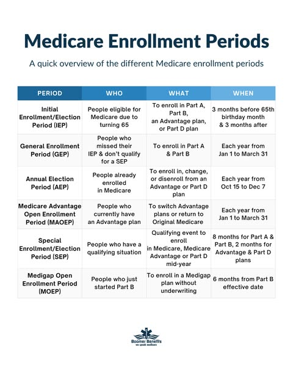
Almost 65? 🎉 We’ll explain what you’ll pay, when to enroll, and how to avoid late penalties. Let’s make your Medicare journey stress-free! BOOMERBENEFITS.COM Turning 65 Soon? Talk to our team today! Founded in 2005 in Fort Worth, TX, Boomer Benefits is an award-winning insurance agency for national insurance carriers such as Blue Cross Blue Shield, Aetna, Mutual of Omaha, and many other A-rated carriers. We are licensed in 49 states. Over the years, we’ve learned just about everything there is to know about Medicare, and we’ve become known as the baby boomers insurance agency. We pass that knowledge on to you – absolutely free. Get Quote

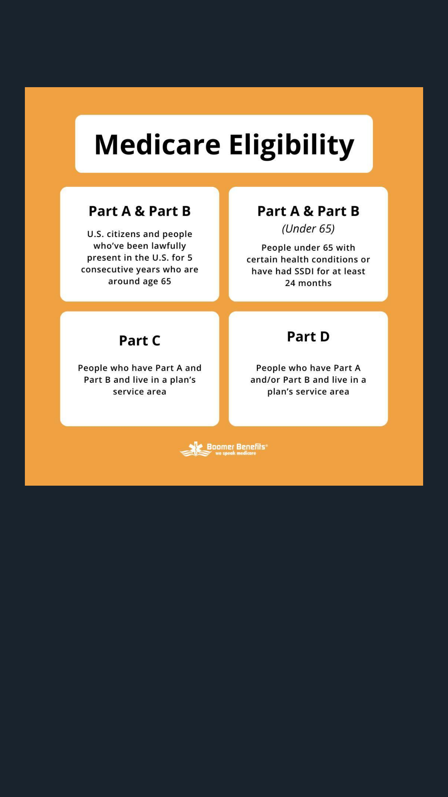
Are you turning 65? You're about to unlock some important health benefits – but are you sure you're getting the right coverage? At Boomer Benefits, we’ll walk you through all the options available to you. Our team of experts will take the time to explain everything, ensuring you find the right plan for your needs. And the best part? Our service is 100% FREE! Join over 100,000 happy customers who have given us the highest ratings in the industry. Let us help you navigate your Medicare journey with confidence! Click below to see if you're eligible and get started today. 0:00 / 0:06 BOOMERBENEFITS.COM Are you age 64+? Get Your Customized Medicare Quote for FREE! Boomer Benefits is a trusted Med
Video: no audio track.

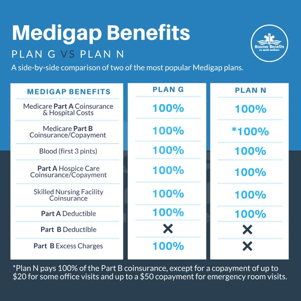
✅ Plan G covers nearly all of your Medicare cost-sharing. ❎ No copays at the doctor's office or the hospital. Our team of Medicare experts will find the lowest premium for you! Get a free quote today. BOOMERBENEFITS.COM Compare Medicare Plan G Rates | Top-Rated Insurance Agency Founded in 2005 in Fort Worth, TX, Boomer Benefits is an award-winning insurance agency for national insurance carriers such as Blue Cross Blue Shield, Aetna, Mutual of Omaha and many other A-rated carriers. We are licensed in 49 states. Over the years, we’ve learned just about everything there is to know about Medicare, and we’ve become known as the baby boomers insurance agency. We pass that knowledge on to you – ab
MedicareAdvantage.com · 6 ads · longest 144 days · aetna-medicareadvantage.com

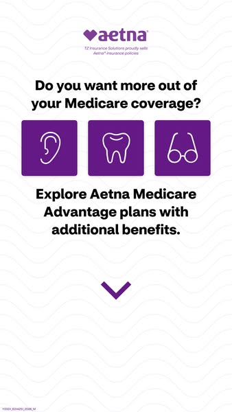
New to Medicare or recently moved? Explore Aetna Medicare Advantage plans with additional benefits at little to no monthly premium. Aetna Medicare is an HMO, PPO plan with a Medicare contract. Our DSNPs also have contracts with State Medicaid programs. Enrollment in our plans depends on contract renewal. Plan features and availability may vary by service area. We do not offer every plan available in your area. Currently we represent 1 organization which offers 620 products in your area. Please contact Medicare.gov, 1-800-MEDICARE, or your local State Health Insurance Program (SHIP) to get information on all of your options. To send a complaint to Aetna, call the Plan or the number on your me

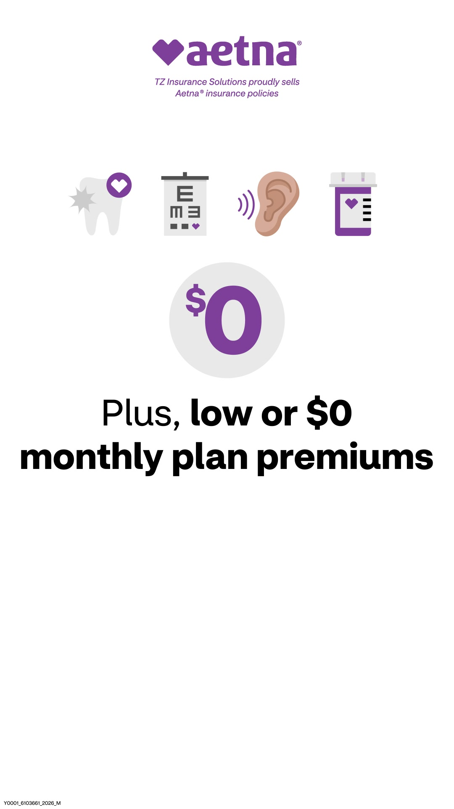
If you’re new to Medicare or recently lost your coverage, you could enroll in an Aetna Medicare Advantage plan now. Aetna Medicare is an HMO, PPO plan with a Medicare contract. Our DSNPs also have contracts with State Medicaid programs. Enrollment in our plans depends on contract renewal. Plan features and availability may vary by service area. We do not offer every plan available in your area. Currently we represent 1 organization, which offers 620 products in your area. Please contact http://medicare.gov, 1-800-MEDICARE, or your local State Health Insurance Program (SHIP) to get information on all of your options. To send a complaint to Aetna, call the Plan or the number on your member ID

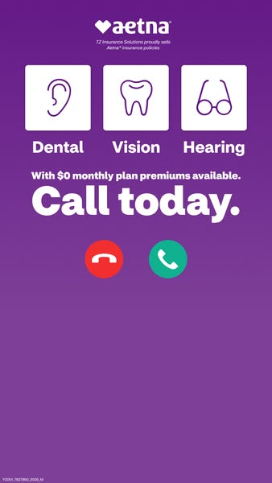
Did you know? You may be eligible to enroll in a Medicare Advantage plan with additional benefits and $0 monthly plan premiums if you’re new to Medicare, have recently moved or lost coverage. *The licensed TZ insurance agents who may call you proudly sell Aetna® plans but are not employed by Aetna. Not all plans offer all of these benefits. Availability of benefits and plans varies by carrier and location. Deductibles, copays, coinsurance, limitations, and exclusions may apply. Aetna Medicare is an HMO, PPO plan with a Medicare contract. Our DSNPs also have contracts with State Medicaid programs. Enrollment in our plans depends on contract renewal. Plan features and availability may vary by

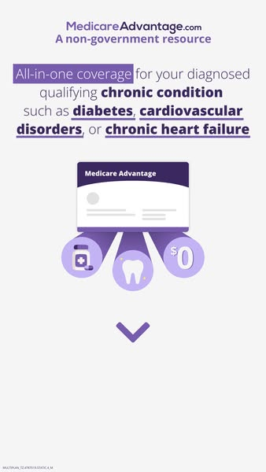
Diagnosed with one or more qualifying chronic conditions? A Medicare Advantage Chronic Conditions Special Needs Plan (C-SNP) could help. Get prescription drug coverage, dental benefits, or more—often at low or $0 monthly premiums. Find a plan in your ZIP code today! 👤 We offer plans from Humana, UnitedHealthcare®, Anthem Blue Cross and Blue Shield*, Aetna, HealthSpring℠, Wellcare, or Kaiser Permanente. MedicareAdvantage.com is powered by TZ Insurance Solutions LLC, a non-government licensed health insurance agency. Not affiliated with or endorsed by any government agency. *Anthem Blue Cross and Blue Shield includes its affiliated health plans. We do not offer every plan available in your are

New to Medicare, moving or losing coverage? Shop Medicare Advantage health plans with additional benefits and low to $0 monthly premiums. We do not offer every plan available in your area. Currently we represent 1 organization which offers 83 products in your area. Please contact Medicare.gov, 1-800-MEDICARE, or your local State Health Insurance Program to get information on all of your options. You must meet all Medicare health plan enrollment requirements. Enrollment in the described plan type may be limited to certain dates of the year unless you qualify for a Special Enrollment Period. Y0043_N00044278_M H8794_N00044278_M 0:00 / 0:14 MEDICAREADVANTAGE.COM Call to shop Medicare health plan

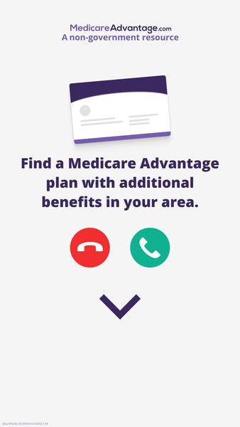
💬 New to Medicare, moving or losing coverage? We’re here for you! Find out if you could save money and receive additional benefits like dental, vision or hearing with a Medicare Advantage plan. Our licensed insurance agents are ready to take your call! We offer plans from Humana, UnitedHealthcare®, Aetna, Anthem Blue Cross and Blue Shield, Wellcare, HealthSpring℠, or Kaiser Permanente. MedicareAdvantage.com is a non-government entity. We do not offer every plan available in your area. Currently, we represent 25 organizations which offer 3,617 products in your area. Please contact Medicare.gov, 1–800–MEDICARE, or your local State Health Insurance Program to get information on all of your opti
Medicare Benefits for Seniors Explained · 1 ads · longest 142 days · no destination link captured

🕒 Now is the time for you to fully understand the Medicare Plans & Options available to you. ✅ We work directly with you to help you select the right Medicare plan for your needs and there is no charge for this service. Use the form below or call (606) 585-2587 to get started on your Medicare journey today. FB.ME Get Started Before You Turn 65! Click Here. See details
Medicare Supplement Quote · 3 ads · longest 139 days · no destination link captured

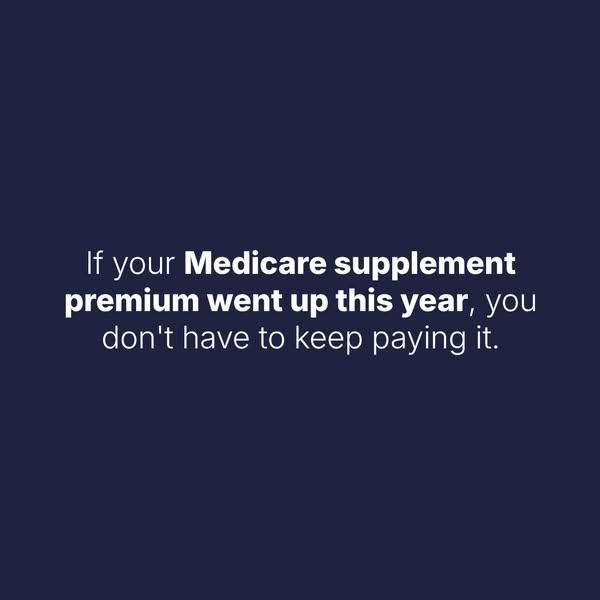
Most people feel stuck when their Medicare supplement premium goes up. They think switching companies means changing their coverage, finding new doctors, or starting over with Medicare. None of that is true. Medicare supplements are standardized by the federal government. A Plan G is a Plan G — no matter which company you're with. The coverage doesn't change. Your doctors don't change. Medicare stays your primary coverage. The only thing that changes when you switch companies is your monthly premium. ✅ Same Coverage – Every top carrier's Plan G covers identical benefits ✅ Keep Your Doctors – No networks, no referrals, no permission needed ✅ Same Nationwide Freedom – Your plan works everywher
They weren't lying exactly. That IS how it works at that company. What they didn't tell you is that you don't have to stay. Medicare supplement plans are standardized by the federal government. A Plan G from any top carrier covers the exact same benefits — your doctors don't change, your coverage doesn't change, your Medicare doesn't change. The only thing that changes when you switch is your monthly premium. And some people are paying hundreds of dollars more per year for a plan they could get for less somewhere else. You called. You tried. They gave you nowhere to go. There's somewhere to go. ✅ Same Coverage – Federal law requires identical Plan G benefits across all carriers ✅ Keep Your D

Most people on Plan G have never actually done the math on Plan N. Plan N covers almost everything Plan G does. The main tradeoff is a small copay — up to $20 at the doctor, up to $50 at the ER in exchange for significantly lower premiums. Plan N typically costs 30-40% less per month than Plan G. For many people that's $60-80 a month — over $800 a year back in their pocket. ✅ Plan N – Same doctors, same freedom, 30-40% lower premiums ✅ Small Copays Only – Up to $20 office visits, up to $50 ER ✅ No Networks – See any doctor that accepts Medicare ✅ No Referrals – Go straight to any specialist ✅ Keep More Money – Hundreds back in your pocket every year Compare Plan N rates in your zip code — fr
MedicareProz · 5 ads · longest 131 days · medicareproz.com
New to Original Medicare, Aging into Original Medicare, Lost your Health Insurance, On Medicare Parts A and B but have recently moved, or have a special enrollment period and confused about finding the right Medicare Advantage Plan for you? Call us today and let our friendly licensed sales agents walk you through the process! Review Medicare Advantage Plans, the plan you enroll in may include one or more of the following benefits: ✅ Routine Vision ✅ Routine Hearing ✅ Routine Dental and/or ✅ Prescription Drugs We can help you find out if you’re eligible to enroll in a Medicare Advantage plan Speak to a licensed insurance agent today about your Medicare Advantage plan options. We represent car
[Do you have Medicare A&B and Medicaid and also are New to Original Medicare, Aging into Medicare, Lost your Health Insurance, On Medicare Parts A and B but have recently move, or have a special enrollment period?] You may be eligible for a Medicare Advantage Dual Eligible Special Needs (“DSNP”) plan that may include coverage for one or more benefits, such as an allowance to help pay for healthy groceries at plan approved locations or monthly allowances to help pay for certain utilities. You must also have a qualifying chronic condition to receive this benefit. We represent carriers such as [UnitedHealthcare®], [WellCare], [Humana,] [HealthSpring ℠,] [Aetna], and [Elevance]. Tap the link bel

[Do you have Medicare A&B and Medicaid and also are New to Original Medicare, Aging into Medicare, Lost your Health Insurance, On Medicare Parts A and B but have recently move, or have a special enrollment period?] You may be eligible for a Medicare Advantage Dual Eligible Special Needs (“DSNP”) plan that may include coverage for benefits such as dental, vision, and hearing, or for one or additional benefits, such as an allowance* to help pay for healthy groceries at plan approved locations or monthly allowances* to help pay for certain utilities. You also must have a qualifying chronic condition to receive this benefit. We represent carriers such as [UnitedHealthcare®], [WellCare], [Humana]

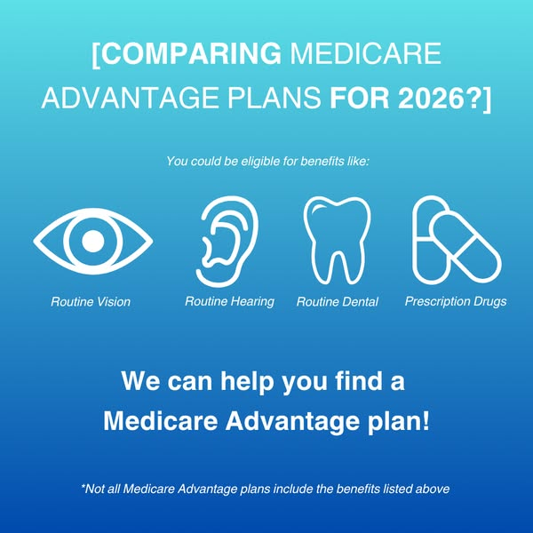
[New to Original Medicare, Aging into Original Medicare, Lost your Health Insurance, On Medicare Parts A and B but have recently moved, or have a special enrollment period?] And confused about finding the right Medicare Advantage Plan for you? Call us today and let our friendly licensed sales agents walk you through the process! Review Medicare Advantage Plans, the plan you enroll in may include one or more of the following benefits: ✅ [Routine Vision] ✅ [Routine Hearing] ✅ [Routine Dental and/or] ✅ [Prescription Drugs] We can help you find out if you’re eligible to enroll in a Medicare Advantage plan! Speak to a licensed insurance agent today about your Medicare Advantage plan options. We r

[Do you have Medicare A&B and Medicaid and also are New to Original Medicare, Aging into Medicare, Lost your Health Insurance, On Medicare Parts A and B but have recently move, or have a special enrollment period?] You may be eligible to enroll in a Medicare Advantage DSNP plan with a monthly allowance of [at least] [$40] to help pay for healthy groceries at plan approved locations or monthly allowances to help pay for certain utilities.* In some cases, you also have to have a qualifying chronic condition to receive this benefit. We represent carriers such as [UnitedHealthcare®,] [WellCare,] [Humana,] [HealthSpring ℠,] [Aetna,] [Anthem], [Devoted], [Blue Cross and Blue Shield] and [Kaiser Pe
Senior Health Group · 1 ads · longest 131 days · seniorhealthgroup.co

[Non-AEP: You may qualify for a Special Enrollment Period (SEP) if you experience certain life events, such as: New to Medicare, Aging into Medicare, Lost your Health Insurance, On Medicare but have recently moved.] Review Medicare Advantage Plan option. You May Be Eligible to enroll in a Medicare Advantage plan that may offer additional benefits that could help you! [Non-AEP: Enrollment in the described plan type may be limited to certain times of the year unless you qualify for a Special Enrollment Period or you are in your Medicare Initial Election Period.] Insurance Ad - No Government Affiliation. MULTIPLAN_FB_S_2026_C SENIORHEALTHGROUP.CO Speak with a licensed insurance agent. Check Enr
Senior Health Benefits 365 · 37 ads · longest 127 days · no destination link captured
🇺🇸 VETERANS: KNOW YOUR OPTIONS 🇺🇸 Medicare Advantage does not replace VA or TRICARE. Some veterans use Medicare Advantage alongside VA or TRICARE to cover care outside of VA facilities and help reduce out-of-pocket costs. Certain plans may also offer a Part B premium reimbursement, which in some areas may total up to $2,400 per year. Benefits and savings vary by plan and location. 👉 Learn how Medicare Advantage can work alongside VA or TRICARE. FB.ME How Medicare Works With VA Learn more

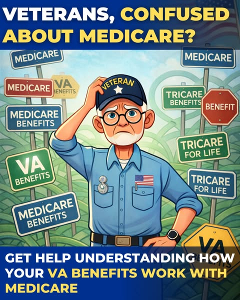
🇺🇸 2026 MEDICARE UPDATE FOR VETERANS Many veterans with Medicare Part B may have access to 2026 Medicare plans that could lower their Part B premium. Depending on your eligibility and the plans available in your area, savings can reach up to $2,400 per year. This does not affect VA healthcare, Tricare for Life, or ChampVA. Spouses may also qualify. Some 2026 plans may include: ✅ $0 monthly premiums ✅ Up to $2,400 in annual Part B giveback (varies by plan and location) ✅ Dental, vision, and hearing ✅ Access to civilian doctors and facilities ✅ Fitness and wellness benefits If eligible, you may be able to find a plan in your area that offers a Part B premium reduction. 👉 View your available 20
🇺🇸 2026 MEDICARE UPDATE FOR VETERANS Many veterans with Medicare Part B may have access to 2026 Medicare plans that could lower their Part B premium. Depending on your eligibility and the plans available in your area, savings can reach up to $2,400 per year. This does not affect VA healthcare, Tricare for Life, or ChampVA. Spouses may also qualify. Some 2026 plans may include: ✅ $0 monthly premiums ✅ Up to $2,400 in annual Part B giveback (varies by plan and location) ✅ Dental, vision, and hearing ✅ Access to civilian doctors and facilities ✅ Fitness and wellness benefits If eligible, you may be able to find a plan in your area that offers a Part B premium reduction. 👉 View your available 20
🇺🇸 2026 MEDICARE UPDATE FOR VETERANS 🇺🇸 Many veterans with Medicare Part B may have access to 2026 Medicare plans that could lower their Part B premium. Depending on your eligibility and the plans available in your area, savings can reach up to $2,400 per year. This does not affect VA healthcare, Tricare for Life, or ChampVA. Spouses may also qualify. Some 2026 plans may include: ✅ $0 monthly premiums ✅ Up to $2,400 in annual Part B giveback (varies by plan and location) ✅ Dental, vision, and hearing ✅ Access to civilian doctors and facilities ✅ Fitness and wellness benefits If eligible, you may be able to find a plan in your area that offers a Part B premium reduction. 👉 View your available

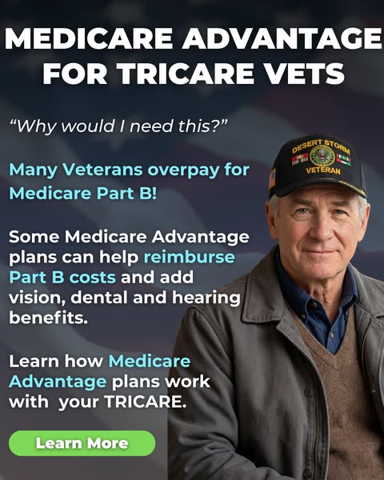
🇺🇸 2026 MEDICARE UPDATE FOR VETERANS 🇺🇸 Many veterans with Medicare Part B may have access to 2026 Medicare plans that could lower their Part B premium. Depending on your eligibility and the plans available in your area, savings can reach up to $2,400 per year. This does not affect VA healthcare, Tricare for Life, or ChampVA. Spouses may also qualify. Some 2026 plans may include: ✅ $0 monthly premiums ✅ Up to $2,400 in annual Part B giveback (varies by plan and location) ✅ Dental, vision, and hearing ✅ Access to civilian doctors and facilities ✅ Fitness and wellness benefits If eligible, you may be able to find a plan in your area that offers a Part B premium reduction. 👉 View your available

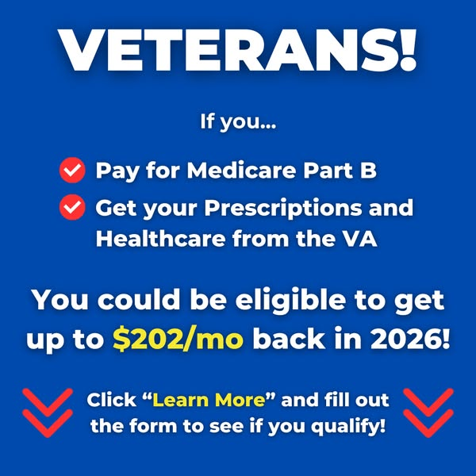
🇺🇸 2026 MEDICARE UPDATE FOR VETERANS 🇺🇸 Many veterans with Medicare Part B may have access to 2026 Medicare plans that could lower their Part B premium. Depending on your eligibility and the plans available in your area, savings can reach up to $2,400 per year. This does not affect VA healthcare, Tricare for Life, or ChampVA. Spouses may also qualify. Some 2026 plans may include: ✅ $0 monthly premiums ✅ Up to $2,400 in annual Part B giveback (varies by plan and location) ✅ Dental, vision, and hearing ✅ Access to civilian doctors and facilities ✅ Fitness and wellness benefits If eligible, you may be able to find a plan in your area that offers a Part B premium reduction. 👉 View your available

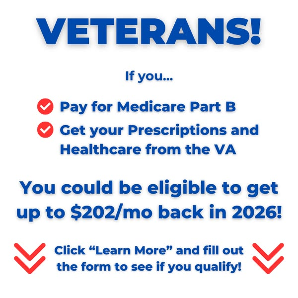
🇺🇸 2026 MEDICARE UPDATE FOR VETERANS 🇺🇸 Many veterans with Medicare Part B may have access to 2026 Medicare plans that could lower their Part B premium. Depending on your eligibility and the plans available in your area, savings can reach up to $2,400 per year. This does not affect VA healthcare, Tricare for Life, or ChampVA. Spouses may also qualify. Some 2026 plans may include: ✅ $0 monthly premiums ✅ Up to $2,400 in annual Part B giveback (varies by plan and location) ✅ Dental, vision, and hearing ✅ Access to civilian doctors and facilities ✅ Fitness and wellness benefits If eligible, you may be able to find a plan in your area that offers a Part B premium reduction. 👉 View your available

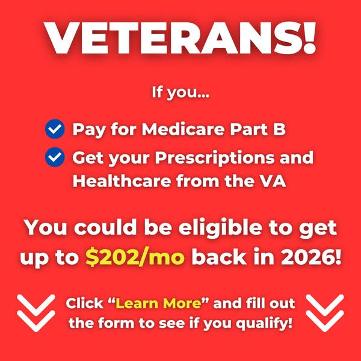
🇺🇸 2026 MEDICARE UPDATE FOR VETERANS 🇺🇸 Many veterans with Medicare Part B may have access to 2026 Medicare plans that could lower their Part B premium. Depending on your eligibility and the plans available in your area, savings can reach up to $2,400 per year. This does not affect VA healthcare, Tricare for Life, or ChampVA. Spouses may also qualify. Some 2026 plans may include: ✅ $0 monthly premiums ✅ Up to $2,400 in annual Part B giveback (varies by plan and location) ✅ Dental, vision, and hearing ✅ Access to civilian doctors and facilities ✅ Fitness and wellness benefits If eligible, you may be able to find a plan in your area that offers a Part B premium reduction. 👉 View your available
29 more ads from this advertiser not shown.
Dr. Ed - Former SSA Manager · 4 ads · longest 125 days · askchapter.org
Choosing the wrong Medicare plan can cost you thousands over time. The good news? It only takes 2 minutes to see if you qualify for better coverage or savings. 0:00 / 1:43
Video script · 103 seconds
You worked 40 years for these benefits and one rushed Medicare decision can quietly cost you for the rest of your life. Here's how you can figure out the Medicare thing without wasting the next three years of your life. Here's what I see all the time. You're turning 65 in a couple of months and you start doing what everyone does. You google Medicare supplement versus Medicare Advantage. You read a few articles and you get more confused by the minute and it's not your fault. Every article out there assumes you already know this stuff. You don't. Nobody knows this stuff at first. So you spend hours watching YouTube videos, reading forms, going in circles. I've seen it hundreds of times. There's a much simpler way. You spend 20 minutes on the phone with one of chapters Medicare advisors who does this all day, every day. They walk you through a short set of clear questions about your doctors, your medications, your budget, and how you feel about networks and referrals. The same things you're already worrying about just in plain English. By the end of the call, you know exactly which type of Medicare plan you should be looking at and what to stay away from and why. That's it. Instead of trying to become a Medicare expert, borrow one for 20 minutes. You get a straight answer tailored to you and you move on with your life knowing you didn't miss something that could cost you for the rest of your retirement. If you're approaching 65, schedule the call. It's the smartest first step you can take. I recommend it to every single person who comes to us confused. 20 minutes later, they finally say, okay, I get it now. If you're turning 65 or already on Medicare, click the link for a free Medicare checkup. It could save you real money.

Choosing the wrong Medicare plan can cost you thousands over time. The good news? It only takes 2 minutes to see if you qualify for better coverage or savings. 0:00 / 1:40

Choosing the wrong Medicare plan can cost you thousands over time. The good news? It only takes 2 minutes to see if you qualify for better coverage or savings. 0:00 / 0:40

Choosing the wrong Medicare plan can cost you thousands over time. The good news? It only takes 2 minutes to see if you qualify for better coverage or savings. 0:00 / 0:38 HTTPS://ASKCHAPTER.ORG/FLOW/MGE?OVERRIDEPHONENUMBER=5722430615&UTM_CAMPAIGN=MO_MC_WE_DF_AL_US_PS_BX This Could Save You Thousands Learn more
Medicare Resource Center · 1 ads · longest 108 days · www.resourcemedicare.com

Medicare can feel overwhelming, especially with changing plans and rising costs. Schedule a quick review with a Medicare Pro to better understand your options and next steps. HTTPS://WWW.RESOURCEMEDICARE.COM/NEW-TO-MEDICARE Turning 65 Soon? Get clear, straightforward Medicare guidance from your local Medicare Pro. Review coverage, costs, and plan options. Book Now
Welltra Medicare Solutions · 1 ads · longest 106 days · no destination link captured

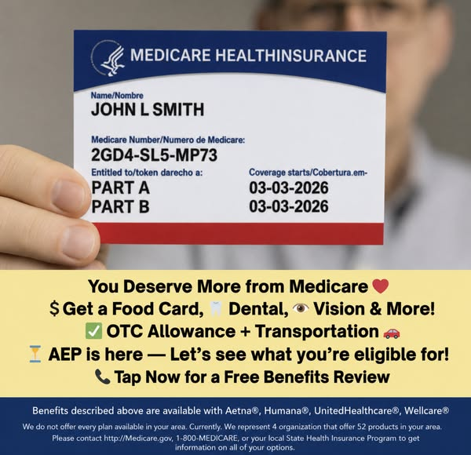
Turning 65 or already on Medicare? Review available Medicare plan options and see what benefits may be available in your area. Call today to check your eligibility. Could You Be Eligible for More Medicare Benefits? No obligation. No pressure. Apply Now
Senior Planning Services · 1 ads · longest 97 days · no destination link captured

Indiana Medicare Beneficiaries: Many Hoosiers on Medicare are surprised to learn they may qualify for additional benefits beyond Original Medicare. If you have Medicare Part A & Part B and have been diagnosed with diabetes, a heart condition, or another qualifying chronic health condition, you may be eligible for plans available in parts of Indiana that offer benefits such as: ✅ Grocery Allowance ✅ Utility Bill Assistance ✅ Dental Coverage ✅ Vision Coverage ✅ Hearing Coverage ✅ Over-the-Counter (OTC) Credits ✅ Transportation to Medical Appointments ✅ Fitness & Wellness Benefits ✅ Meal Benefits After Hospital Stays ✅ Chronic Condition Support Programs These benefits can vary by county and pla
Your Plan Matcher · 14 ads · longest 93 days · no destination link captured

👉 𝐁𝐞𝐧𝐞𝐟𝐢𝐭: 𝐌𝐨𝐧𝐭𝐡𝐥𝐲 𝐒𝐩𝐞𝐧𝐝𝐢𝐧𝐠 𝐀𝐥𝐥𝐨𝐰𝐚𝐧𝐜𝐞 Those on Medicare check if you can get a Monthly Spending Allowance with a Medicare Advantage Plan. Get help paying for: 🛒 Healthy Groceries 💊 Select Over-the-Counter Items 🔌 Certain Utility Bills 🦷 Dental Care ✅ Plus More! Don’t miss out – check your eligibility today by tapping below👇 0:00 / 0:22 Get Benefit: Monthly Spending Allowance 👉 Monthly Spending Allowances are now available Apply Now
🚨𝐀𝐭𝐭𝐞𝐧𝐭𝐢𝐨𝐧 𝐌𝐞𝐝𝐢𝐜𝐚𝐫𝐞 𝐑𝐞𝐜𝐢𝐩𝐢𝐞𝐧𝐭𝐬: 𝐌𝐨𝐧𝐭𝐡𝐥𝐲 𝐒𝐩𝐞𝐧𝐝𝐢𝐧𝐠 𝐀𝐥𝐥𝐨𝐰𝐚𝐧𝐜𝐞 𝐍𝐨𝐰 𝐀𝐯𝐚𝐢𝐥𝐚𝐛𝐥𝐞... You may be eligible to get a monthly spending allowance to help pay for plan approved items! Plans depend on your zip code & eligibility to enroll. Check if you’re eligible to enroll in a Medicare Advantage plan that includes a Monthly Spending Allowance for plan-approved items today. 0:00 / 0:24

🚨𝐀𝐭𝐭𝐞𝐧𝐭𝐢𝐨𝐧 𝐌𝐞𝐝𝐢𝐜𝐚𝐫𝐞 𝐑𝐞𝐜𝐢𝐩𝐢𝐞𝐧𝐭𝐬: 𝐌𝐨𝐧𝐭𝐡𝐥𝐲 𝐒𝐩𝐞𝐧𝐝𝐢𝐧𝐠 𝐀𝐥𝐥𝐨𝐰𝐚𝐧𝐜𝐞 𝐍𝐨𝐰 𝐀𝐯𝐚𝐢𝐥𝐚𝐛𝐥𝐞... You may be eligible to get a monthly spending allowance to help pay for plan approved items! Plans depend on your zip code & eligibility to enroll. Check if you’re eligible to enroll in a Medicare Advantage plan that includes a Monthly Spending Allowance for plan-approved items today. 0:00 / 0:23
👉 𝐁𝐞𝐧𝐞𝐟𝐢𝐭: 𝐌𝐨𝐧𝐭𝐡𝐥𝐲 𝐒𝐩𝐞𝐧𝐝𝐢𝐧𝐠 𝐀𝐥𝐥𝐨𝐰𝐚𝐧𝐜𝐞 Those on Medicare check if you can get a Monthly Spending Allowance with a Medicare Advantage Plan. Get help paying for: 🛒 Healthy Groceries 💊 Select Over-the-Counter Items 🔌 Certain Utility Bills 🦷 Dental Care ✅ Plus More! Don’t miss out – check your eligibility today by tapping below👇 0:00 / 0:22 Get Benefit: Monthly Spending Allowance 👉 Monthly Spending Allowances are now available Apply Now
🚨𝐀𝐭𝐭𝐞𝐧𝐭𝐢𝐨𝐧 𝐌𝐞𝐝𝐢𝐜𝐚𝐫𝐞 𝐑𝐞𝐜𝐢𝐩𝐢𝐞𝐧𝐭𝐬: 𝐌𝐨𝐧𝐭𝐡𝐥𝐲 𝐒𝐩𝐞𝐧𝐝𝐢𝐧𝐠 𝐀𝐥𝐥𝐨𝐰𝐚𝐧𝐜𝐞 𝐍𝐨𝐰 𝐀𝐯𝐚𝐢𝐥𝐚𝐛𝐥𝐞... You may be eligible to get a monthly spending allowance to help pay for plan approved items! Plans depend on your zip code & eligibility to enroll. Check if you’re eligible to enroll in a Medicare Advantage plan that includes a Monthly Spending Allowance for plan-approved items today. 0:00 / 0:29 Reveal Monthly Allowance 👉 Tap to Claim your Monthly Spending Allowance! See Details

👉 𝐁𝐞𝐧𝐞𝐟𝐢𝐭: 𝐌𝐨𝐧𝐭𝐡𝐥𝐲 𝐒𝐩𝐞𝐧𝐝𝐢𝐧𝐠 𝐀𝐥𝐥𝐨𝐰𝐚𝐧𝐜𝐞 Those on Medicare check if you can get a Monthly Spending Allowance with a Medicare Advantage Plan. Get help paying for: 🛒 Healthy Groceries 💊 Select Over-the-Counter Items 🔌 Certain Utility Bills 🦷 Dental Care ✅ Plus More! Don’t miss out – check your eligibility today by tapping below👇 0:00 / 0:31 Get Benefit: Monthly Spending Allowance 👉 Monthly Spending Allowances are now available Apply Now

🚨𝐀𝐭𝐭𝐞𝐧𝐭𝐢𝐨𝐧 𝐌𝐞𝐝𝐢𝐜𝐚𝐫𝐞 𝐑𝐞𝐜𝐢𝐩𝐢𝐞𝐧𝐭𝐬: 𝐌𝐨𝐧𝐭𝐡𝐥𝐲 𝐒𝐩𝐞𝐧𝐝𝐢𝐧𝐠 𝐀𝐥𝐥𝐨𝐰𝐚𝐧𝐜𝐞 𝐍𝐨𝐰 𝐀𝐯𝐚𝐢𝐥𝐚𝐛𝐥𝐞... You may be eligible to get a monthly spending allowance to help pay for plan approved items! Plans depend on your zip code & eligibility to enroll. Check if you’re eligible to enroll in a Medicare Advantage plan that includes a Monthly Spending Allowance for plan-approved items today. 0:00 / 0:18 Reveal Monthly Allowance 👉 Tap to Claim your Monthly Spending Allowance! See Details

🚨𝐀𝐭𝐭𝐞𝐧𝐭𝐢𝐨𝐧 𝐌𝐞𝐝𝐢𝐜𝐚𝐫𝐞 𝐑𝐞𝐜𝐢𝐩𝐢𝐞𝐧𝐭𝐬: 𝐌𝐨𝐧𝐭𝐡𝐥𝐲 𝐒𝐩𝐞𝐧𝐝𝐢𝐧𝐠 𝐀𝐥𝐥𝐨𝐰𝐚𝐧𝐜𝐞 𝐍𝐨𝐰 𝐀𝐯𝐚𝐢𝐥𝐚𝐛𝐥𝐞... You may be eligible to get a monthly spending allowance to help pay for plan approved items! Plans depend on your zip code & eligibility to enroll. Check if you’re eligible to enroll in a Medicare Advantage plan that includes a Monthly Spending Allowance for plan-approved items today. 0:00 / 0:21
6 more ads from this advertiser not shown.
Simple Senior USA · 1 ads · longest 92 days · no destination link captured

New to Medicare? A reason to smile: Medicare Advantage Plans may offer routine dental care. The range of Dental benefits may vary by each Medicare Advantage Plan. We represent Medicare Advantage, Medicare Advantage Prescription Drug, and stand alone Prescription Drug Plans for [Humana], [UnitedHealthcare®], [Aetna], [HealthSpring℠], [Wellcare], [Anthem BCBS], [Devoted], [Blue Cross Blue Shield of Michigan], [Molina Healthcare] and [Kaiser Permanente]. Get connected with a licensed insurance agent and find out what Medicare Advantage Plans you may be eligible for. [Mon. – Fri. 8 AM – 8 PM EST, Sat. – Sun. 10 AM – 6:30 PM EST]. Disclaimer: We do not offer every plan available in your area. Ple
Jeff Rossen with Chapter · 2 ads · longest 89 days · askchapter.org

Choosing the wrong Medicare plan can cost you thousands over time. The good news? It only takes 2 minutes to see if you qualify for better coverage or savings. 0:00 / 0:58 HTTPS://ASKCHAPTER.ORG/FLOW/MGE?OVERRIDEPHONENUMBER=5722430615&UTM_CAMPAIGN=MO_MC_WE_DF_AL_US_PS_BX Knock out your Medicare to-do list Learn More

Choosing the wrong Medicare plan can cost you thousands over time. The good news? It only takes 2 minutes to see if you qualify for better coverage or savings. 0:00 / 0:41 HTTPS://ASKCHAPTER.ORG/FLOW/MGE?OVERRIDEPHONENUMBER=5722430615&UTM_CAMPAIGN=MO_MC_WE_DF_AL_US_PS_BX Knock out your Medicare to-do list Learn More
Medicare Agents Hub · 4 ads · longest 87 days · no destination link captured

Thousands of seniors are finding the Medicare Agent Directory every day when they do a search for medicare agents in their home town, or their zip code. You can get a free Agent listing today and be on the top of search engines for Medicare Agents in your city. It really is free. FB.ME Get a free listing on the Medicare Agent Directory Apply now

Thousands of seniors are finding the Medicare Agent Directory every day when they do a search for medicare agents in their home town, or their zip code. You can get a free Agent listing today and be on the top of search engines for Medicare Agents in your city. It really is free. 0:00 / 0:35 FB.ME Get a Free Medicare Agent Listing, Be Found by Seniors See details

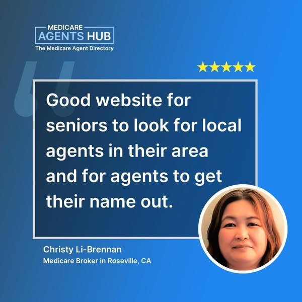
Thousands of seniors are finding the Medicare Agent Directory every day when they do a search for medicare agents in their home town, or their zip code. You can get a free Agent listing today and be on the top of search engines for Medicare Agents in your city. It really is free. FB.ME Get a free listing on the Medicare Agent Directory Apply now

Thousands of seniors are finding the Medicare Agent Directory every day when they do a search for medicare agents in their home town, or their zip code. You can get a free Agent listing today and be on the top of search engines for Medicare Agents in your city. It really is free. FB.ME Get Found by Local Seniors Get a free listing on the Medicare Agent Directory Apply now
65Harmony · 6 ads · longest 81 days · no destination link captured

🥦🍎 Could You Be Missing Out on Extra Money for Groceries From A Medicare Plan? 🛒💳 better fits yMany Medicare beneficiaries may qualify for plans that include a monthly food and grocery allowance to help pay for eligible healthy groceries at participating stores. ✅ Check if you're eligible ✅ Review your current Medicare benefits ✅ See if there's a plan available in your area that our needs 📞 Our licensed Medicare advisors will answer your questions and help you understand your options—at no cost and with no obligation. 👇 Click Learn More to see if you qualify today 0:00 / 0:39
Video script · 39 seconds
Hey everybody, this message is for my people on Medicare. If you have always wondered why you couldn't get a food card with your Medicare plan like your family and your friends, well in the past you had to have Medicaid to qualify and that is not always the case anymore. We have been helping Medicare beneficiaries qualify for these cards every day whether they have Medicaid or not and if you are interested in seeing if you qualify or if you currently have a spending card with your Medicare plan and you want to see if you qualify for more click the learn more button and give us a call and we will help you at no charge and we will talk to you soon.

🥦🍎 Could You Be Missing Out on Extra Money for Groceries From A Medicare Plan? 🛒💳 Many Medicare beneficiaries may qualify for plans that include a monthly food and grocery allowance to help pay for eligible healthy groceries at participating stores. ✅ Check if you're eligible ✅ Review your current Medicare benefits ✅ See if there's a plan available in your area that better fits your needs 📞 Our licensed Medicare advisors will answer your questions and help you understand your options—at no cost and with no obligation. 👇 Click Learn More to see if you qualify today 0:00 / 0:39 FB.ME 🥕 Check if You Qualify for a Medicare Grocery Card 📞 Free Medicare Food/Grocery Card Benefit Review • No Obliga
Video script · 39 seconds
Hey everybody, this message is for my people on Medicare. If you have always wondered why you couldn't get a food card with your Medicare plan like your family and your friends, well in the past you had to have Medicaid to qualify and that is not always the case anymore. We have been helping Medicare beneficiaries qualify for these cards every day whether they have Medicaid or not and if you are interested in seeing if you qualify or if you currently have a spending card with your Medicare plan and you want to see if you qualify for more click the learn more button and give us a call and we will help you at no charge and we will talk to you soon.

🥦🍎 Could You Be Missing Out on Extra Money for Groceries From A Medicare Plan? 🛒💳 better fits yMany Medicare beneficiaries may qualify for plans that include a monthly food and grocery allowance to help pay for eligible healthy groceries at participating stores. ✅ Check if you're eligible ✅ Review your current Medicare benefits ✅ See if there's a plan available in your area that our needs 📞 Our licensed Medicare advisors will answer your questions and help you understand your options—at no cost and with no obligation. 👇 Click Learn More to see if you qualify today 0:00 / 0:39
🥦🍎ALABAMA SENIORS!! Could You Be Missing Out on Extra Money for Groceries From A Medicare Plan? 🛒💳 Many Medicare beneficiaries may qualify for plans that include a monthly food and grocery allowance to help pay for eligible healthy groceries at participating stores. ✅ Check if you're eligible ✅ Review your current Medicare benefits ✅ See if there's a plan available in your area that our needs 📞 Our licensed Medicare advisors will answer your questions and help you understand your options—at no cost and with no obligation. 👇 Click Learn More to see if you qualify today 0:00 / 0:46 FB.ME ALABAMA SENIORS FOOD & OTC ASSISTANCE 📞 Free Medicare Food/Grocery Card Benefit Review • No Obligation • Li
🥦🍎NEW JERSEY SENIORS MEDICARE - Could You Be Missing Out on Extra Money for Groceries From A Medicare Plan? 🛒💳 Many Medicare beneficiaries may qualify for plans that include a monthly food and grocery allowance to help pay for eligible healthy groceries at participating stores. ✅ Check if you're eligible ✅ Review your current Medicare benefits ✅ See if there's a plan available in your area that our needs 📞 Our licensed Medicare advisors will answer your questions and help you understand your options—at no cost and with no obligation. 👇 Click Learn More to see if you qualify today 0:00 / 0:45 FB.ME 🥕 Check if You Qualify for a Medicare Grocery Card 📞 Free Medicare Food/Grocery Card Benefit Re
🥦🍎 OHIO SENIORS!! Could You Be Missing Out on Extra Money for Groceries From A Medicare Plan? 🛒💳 Many Medicare beneficiaries may qualify for plans that include a monthly food and grocery allowance to help pay for eligible healthy groceries at participating stores. ✅ Check if you're eligible ✅ Review your current Medicare benefits ✅ See if there's a plan available in your area that our needs 📞 Our licensed Medicare advisors will answer your questions and help you understand your options—at no cost and with no obligation. 👇 Click Learn More to see if you qualify today 0:00 / 0:46 FB.ME 🥕 Check if You Qualify for a Medicare Grocery Card 📞 Free Medicare Food/Grocery Card Benefit Review • No Obli
CareHarmony · 1 ads · longest 78 days · no destination link captured

If you have diabetes, heart disease, or kidney disease, Medicare may already cover dedicated care coordination — at no additional cost to you. A nurse, 24/7 support, and a team that works alongside your existing doctors. Check if you qualify. Care coordination, already covered through Medicare. Care coordination for heart, kidney, and metabolic conditions. Check eligibility in 60 seconds. Learn More
65 Quiz · 17 ads · longest 76 days · rmoskwa.65quiz.com

The Medicare mail never stops. Every insurance company sounds the same, everyone gives different advice. Supplement? Advantage? Who's actually right? I was losing sleep, terrified of being stuck with the wrong choice for life. Then I discovered a way to cut through all the noise - answered a few questions about my situation and got a clear answer in 2 minutes. If Medicare confusion is stealing your peace of mind, this quiz ends it. 0:00 / 1:35 RMOSKWA.65QUIZ.COM This Medicare Truth Will Shock You Learn more

Answer a few quick questions to find the best Medicare plan for you. 0:00 / 0:52 KGILSENAN.65QUIZ.COM Medicare Quiz Learn more

Losing sleep over Medicare and terrified you'll pick wrong? The mail never stops, every company sounds identical, everyone gives conflicting advice. Supplement, Advantage, Original Medicare - who's actually right? I was paralyzed by this decision until I found a way to cut through the noise. Answered questions about my actual situation and got a clear answer in 2 minutes. If Medicare is keeping you up at night, this gives you peace of mind. 0:00 / 0:53 PKEAVENY.65QUIZ.COM Scared You'll Pick the Wrong Medicare Plan? Learn more

I spent weeks drowning in Medicare mail and conflicting advice. My neighbor swore by Supplements, my cousin said Advantage was the only way. I was terrified of picking wrong and being stuck with it. Then I took this 2-minute quiz that asked about MY doctors, MY location, MY needs - and finally got a straight answer. Plot twist: my husband took it and got a completely different recommendation. Didn't even know that was possible. If you're turning 65 and confused, this quiz will give you clarity. 0:00 / 0:53 DTANNER.65QUIZ.COM This Medicare Truth Will Shock You Learn more

The Medicare mail never stops. Every insurance company sounds the same, everyone gives different advice. Supplement? Advantage? Who's actually right? I was losing sleep, terrified of being stuck with the wrong choice for life. Then I discovered a way to cut through all the noise - answered a few questions about my situation and got a clear answer in 2 minutes. If Medicare confusion is stealing your peace of mind, this quiz ends it. 0:00 / 0:54 MMARTINEZ.65QUIZ.COM This Medicare Truth Will Shock You Learn more

I spent weeks drowning in Medicare mail and conflicting advice. My neighbor swore by Supplements, my cousin said Advantage was the only way. I was terrified of picking wrong and being stuck with it. Then I took this 2-minute quiz that asked about MY doctors, MY location, MY needs - and finally got a straight answer. Plot twist: my husband took it and got a completely different recommendation. Didn't even know that was possible. If you're turning 65 and confused, this quiz will give you clarity. 0:00 / 0:53 PMINICHINO.65QUIZ.COM This Medicare Truth Will Shock You Learn more

I spent weeks drowning in Medicare mail and conflicting advice. My neighbor swore by Supplements, my cousin said Advantage was the only way. I was terrified of picking wrong and being stuck with it. Then I took this 2-minute quiz that asked about MY doctors, MY location, MY needs - and finally got a straight answer. Plot twist: my husband took it and got a completely different recommendation. Didn't even know that was possible. If you're turning 65 and confused, this quiz will give you clarity. 0:00 / 0:53 KCORREA.65QUIZ.COM This Medicare Truth Will Shock You Learn more

I spent weeks drowning in Medicare mail and conflicting advice. My neighbor swore by Supplements, my cousin said Advantage was the only way. I was terrified of picking wrong and being stuck with it. Then I took this 2-minute quiz that asked about MY doctors, MY location, MY needs - and finally got a straight answer. Plot twist: my husband took it and got a completely different recommendation. Didn't even know that was possible. If you're turning 65 and confused, this quiz will give you clarity. WMMENTORS.65QUIZ.COM This Medicare Truth Will Shock You Built with Heyflow Learn more
9 more ads from this advertiser not shown.
The Senior Giveback Program · 4 ads · longest 73 days · senior-budget-book.com

Medicare-licensed benefit specialists have launched a no-cost 60-second qualification checker to help beneficiaries access the monthly spending card that most seniors have never heard of — good for food, bills, and daily necessities. 1.Respond to 3 simple questions (zero commitment, zero fees) 1. Find out your possible monthly benefit right away 3. Be part of the thousands of seniors who signed up this quarter SENIOR-BUDGET-BOOK.COM This sign-up period has a deadline. Miss it, and you'll have to hold off until the following cycle. > Try the free 3-question screener today — those who qualify will be guided through activation by a licensed agent. Learn more
Medicare-licensed benefit specialists have launched a no-cost 60-second qualification checker to help beneficiaries access the monthly spending card that most seniors have never heard of — good for food, bills, and daily necessities. 1.Respond to 3 simple questions (zero commitment, zero fees to call to find out) 2. Find out your possible monthly benefit right away 3. Be part of the thousands of seniors who signed up this quarter SENIOR-BUDGET-BOOK.COM This sign-up period has a deadline. Miss it, and you'll have to hold off until the following cycle. > Try the free 3-question screener today — those who qualify will be guided through activation by a licensed agent. Learn more

Medicare-licensed benefit specialists have launched a no-cost 60-second qualification checker to help beneficiaries access the monthly spending card that most seniors have never heard of — good for food, bills, and daily necessities. 1.Respond to 3 simple questions (zero commitment, zero fees) 1. Find out your possible monthly benefit right away 3. Be part of the thousands of seniors who signed up this quarter SENIOR-BUDGET-BOOK.COM This sign-up period has a deadline. Miss it, and you'll have to hold off until the following cycle. > Try the free 3-question screener today — those who qualify will be guided through activation by a licensed agent. Learn more

Medicare-licensed benefit specialists have launched a no-cost 60-second qualification checker to help beneficiaries access the monthly spending card that most seniors have never heard of — good for food, bills, and daily necessities. 1.Respond to 3 simple questions (zero commitment, zero fees) 1. Find out your possible monthly benefit right away 3. Be part of the thousands of seniors who signed up this quarter SENIOR-BUDGET-BOOK.COM This sign-up period has a deadline. Miss it, and you'll have to hold off until the following cycle. > Try the free 3-question screener today — those who qualify will be guided through activation by a licensed agent. See details
Health Quote · 1 ads · longest 70 days · us.seniordiscountrate.com

What if your Medicare Supplement is costing you $1,000–$2,000 a year more than it should? If you’re on Plan F, G, or N and your premium keeps increasing, you may be able to switch carriers and keep the exact same coverage — same benefits, same doctors — just at a lower monthly rate. It takes 2 minutes to see what you actually qualify for. Don’t overpay for the same plan. 0:00 / 0:28 US.SENIORDISCOUNTRATE.COM Stop Overpaying for Medigap (2-Minute Check) See details
Exclusive Insurance Plans · 4 ads · longest 69 days · no destination link captured

New to Original Medicare, Aging into Original Medicare, Lost your Health Insurance, On Medicare Parts A and B but have recently moved, or have a special enrollment period? We could help you review the Medicare Advantage plans available in your area. Speak to a licensed insurance agent to check your eligibility to enroll. Learn More: https://exclusiveinsuranceplans.com/ Insurance Ad - No Government Affiliation Exclusive Insurance Plans Learn More

New to Original Medicare, Aging into Original Medicare, Lost your Health Insurance, On Medicare Parts A and B but have recently moved, or have a special enrollment period? We could help you review the Medicare Advantage plans available in your area. Speak to a licensed insurance agent to check your eligibility to enroll. Learn More: https://exclusiveinsuranceplans.com/ Insurance Ad - No Government Affiliation Exclusive Insurance Plans Learn More

New to Original Medicare, Aging into Original Medicare, lost your Health Insurance, On Medicare Parts A and B but have recently moved, or have a special enrollment period? Speak to a licensed insurance agent to check your eligibility to enroll. Learn More: https://exclusiveinsuranceplans.com/ Insurance Ad - No Government affiliation Exclusive Insurance Plans Learn More

New to Original Medicare, Aging into Original Medicare, lost your Health Insurance, On Medicare Parts A and B but have recently moved, or have a special enrollment period? We are here to assist you in reviewing Medicare Advantage plans available in your area. Speak to a licensed insurance agent to check your eligibility to enroll. Learn More: https://exclusiveinsuranceplans.com/ Insurance Ad - No Government Affiliation Exclusive Insurance Plans Learn More
Affordable Insurance Deals · 3 ads · longest 69 days · affordableinsurancedeals.com

New to Medicare, Aging into Medicare, lost your Health Insurance, On Medicare but have recently moved, or have a special enrollment period? We are here to assist you in reviewing Medicare Advantage plans available in your area. Speak to a licensed insurance agent to check your eligibility to enroll. Learn More: https://affordableinsurancedeals.com Insurance Ad – No Government Affiliation AFFORDABLEINSURANCEDEALS.COM Affordable Insurance Deals See details

New to Medicare, Aging into Medicare, lost your Health Insurance, On Medicare but have recently moved, or have a special enrollment period? We could help you review the Medicare Advantage plans available in your area. Speak to a licensed insurance agent to check your eligibility to enroll. Learn More: https://affordableinsurancedeals.com [Enrollment in the described plan type may be limited to certain times of the year unless you qualify for a Special Enrollment Period.] Insurance Ad – No Government affiliation

New to Medicare, Aging into Medicare, lost your Health Insurance, On Medicare but have recently moved, or have a special enrollment period? We could help you review Medicare Advantage Plans in your area. Speak to a licensed insurance agent to check your eligibility to enroll. [Enrollment in the described plan type may be limited to certain times of the year unless you qualify for a Special Enrollment Period.] Learn More: https://affordableinsurancedeals.com Insurance Ad – No Government affiliation AFFORDABLEINSURANCEDEALS.COM Affordable Insurance Deals See details
Lara Logan with Chapter · 1 ads · longest 65 days · askchapter.org

Make informed choices for your Medicare coverage and optimize your benefits with Chapter's dedicated team. 0:00 / 1:00 ASKCHAPTER.ORG/LOGAN Knock out your Medicare to-do list Talk to a Medicare Advisor Learn More
Video script · 60 seconds
If you're 64 or older, you may wanna pay attention to this. Medicare agents get paid more to put you on certain plans. And that is not a conspiracy theory. That's literally how the system works. But it can't be the only option. I found something called chapter. They are independent and the only Medicare advisors that compare every plan nationwide. They look at your doctors, your prescriptions, your whole situation, and then they give it to you straight. If you are already on the right plan, they're gonna tell you to stay exactly where you are. And if not, they're gonna help you make that change. Just last year, there were folks who found new plans with chapter that saved an average of $1,100. This is worth doing because it's free and it takes less than 20 minutes. Make sure that you're on a plan that is actually working for you. Call our friends, my friends, at chapter today.
Senior Benefit Solutions · 1 ads · longest 65 days · no destination link captured

If you're 65 or older and have Medicare Parts A & B, you may qualify for extra Medicare benefits designed for seniors living with diabetes or a heart condition. Depending on eligibility, qualifying plans may include: ✅ Up to $195/month for groceries & utilities* ✅ $0 monthly plan premium ✅ Prescription Drug Coverage ✅ Dental, Vision & Hearing ✅ Transportation & more See if you qualify in just a few minutes. FB.ME Extra Medicare Benefits May Be Available See if you qualify today. Apply now
Innovative Health Insurance · 1 ads · longest 65 days · no destination link captured
If you're on Medicare and losing your Medicaid coverage, here's what most people don't know: you may still qualify for a plan that keeps the benefits you count on. ✅ Low or $0 copay options for doctor visits ✅ Help with prescription costs ✅ OTC and grocery benefit cards ✅ Dental, vision & hearing coverage Eligibility changes are happening across the country — but a quick, free review with a licensed agent can show you exactly what's available in your area before anything changes for you. No pressure. No obligation. Just clear answers about your options. Losing Medicaid? See What Benefits You May Keep Medicare plan review · Licensed Representative Learn More
Paul J DaCosta Insurance Services · 1 ads · longest 65 days · no destination link captured

Medicare Open Enrollment starts October 15th! Call Paul for a free Medicare review and see if you're getting all the benefits you deserve. 0:00 / 0:15 Ready for Medicare Open Enrollment? Book Your Free Review! Call now
Complete Family Protection · 1 ads · longest 63 days · no destination link captured

Most people don't realize Medicare leaves dental almost completely uncovered. Cleanings, crowns, dentures, root canals, all of it comes out of pocket. There are dental plans starting around $48/month that actually cover the work you need, not just two cleanings a year. Fill out the form below and our licensed agents will walk you through what's available in your area. 🦷 FB.ME Dental Plans That Cover Major Work Learn more
Top Local Finds · 22 ads · longest 63 days · topicresearcher.com
This Ends Tonight! - Seniors on Medicare Can Receive Free Meals Delivered to Their Door Fast at No Cost 0:00 / 0:15 TOPICRESEARCHER.COM No Cost Meal Delivery for Seniors See details

This Ends Tonight! - Seniors on Medicare Can Receive Free Meals Delivered to Their Door Fast at No Cost 0:00 / 0:15 TOPICRESEARCHER.COM No Cost Meal Delivery for Seniors See details
Video script · 15 seconds
On Medicare and tired of cooking every day, qualifying seniors may receive chef-paired healthy meals delivered directly to their door at no cost. This limited time offer could end tonight. Tap the link now and see if you qualify before enrollment closes.
This Ends Tonight! - Seniors on Medicare Can Receive Free Meals Delivered to Their Door Fast at No Cost TOPICRESEARCHER.COM No Cost Meal Delivery for Seniors Here’s a clear, no-nonsense guide to the meal options seniors can access through Medicare—and how to make the most of them. See details
This Ends Tonight! - Seniors on Medicare Can Receive Free Meals Delivered to Their Door Fast at No Cost 0:00 / 0:15 TOPICRESEARCHER.COM No Cost Meal Delivery for Seniors See details
This Ends Tonight! - Seniors on Medicare Can Receive Free Meals Delivered to Their Door Fast at No Cost 0:00 / 0:15

This Ends Tonight! - Seniors on Medicare Can Receive Free Meals Delivered to Their Door Fast at No Cost 0:00 / 0:15

Seniors on Medicare Can Receive Free, Healthy, Chef-Cooked Meals Delivered Fast. Apply Before All Spots Are Taken TOPICRESEARCHER.COM Free Meals Delivered to Your Door Here’s a clear, no-nonsense guide to the meal options seniors can access through Medicare—and how to make the most of them. See details

This Ends Tonight! - Seniors on Medicare Can Receive Free Meals Delivered to Their Door Fast at No Cost 0:00 / 0:15 TOPICRESEARCHER.COM No Cost Meal Delivery for Seniors See details
14 more ads from this advertiser not shown.
Don Lemon with Chapter · 5 ads · longest 60 days · askchapter.org

Make informed choices for your Medicare coverage and optimize your benefits with Chapter's dedicated team. 0:00 / 1:09 ASKCHAPTER.ORG/DON Knock out your Medicare to-do list Learn More

Are you worried you might be or enroll in the wrong Medicare plan? For most people, Medicare stress comes from three things: 1. Your plan changes or sends letters you don’t fully understand 2. You’re not sure if your doctors, hospital, or medications are really covered 3. You’ve stayed in the same plan for years without a proper review The good news? We’ve built a simple Medicare review that walks through these exact checks with you. Our licensed advisors use your doctors, medications, and budget to look at the plans in your area and make everything clear in about 20 minutes. We’ve personalized this review for your situation, not “people in general,” and we’re confident it can help you feel

Are you worried you might be or enroll in the wrong Medicare plan? For most people, Medicare stress comes from three things: 1. Your plan changes or sends letters you don’t fully understand 2. You’re not sure if your doctors, hospital, or medications are really covered 3. You’ve stayed in the same plan for years without a proper review The good news? We’ve built a simple Medicare review that walks through these exact checks with you. Our licensed advisors use your doctors, medications, and budget to look at the plans in your area and make everything clear in about 20 minutes. We’ve personalized this review for your situation, not “people in general,” and we’re confident it can help you feel

Are you worried you might be or enroll in the wrong Medicare plan? For most people, Medicare stress comes from three things: 1. Your plan changes or sends letters you don’t fully understand 2. You’re not sure if your doctors, hospital, or medications are really covered 3. You’ve stayed in the same plan for years without a proper review The good news? We’ve built a simple Medicare review that walks through these exact checks with you. Our licensed advisors use your doctors, medications, and budget to look at the plans in your area and make everything clear in about 20 minutes. We’ve personalized this review for your situation, not “people in general,” and we’re confident it can help you feel
Are you worried you might be or enroll in the wrong Medicare plan? For most people, Medicare stress comes from three things: 1. Your plan changes or sends letters you don’t fully understand 2. You’re not sure if your doctors, hospital, or medications are really covered 3. You’ve stayed in the same plan for years without a proper review The good news? We’ve built a simple Medicare review that walks through these exact checks with you. Our licensed advisors use your doctors, medications, and budget to look at the plans in your area and make everything clear in about 20 minutes. We’ve personalized this review for your situation, not “people in general,” and we’re confident it can help you feel
Video script · 77 seconds
Most Medicare agents push Medicare Advantage plans even when they're not right for you because they make more money doing it. When one of my listeners, her name is Pamela, enrolled in Medicare, she worked with a broker who seemed perfectly fine. She chose a plan and assumed everything was covered. But later she realized that her prescription costs were far higher than expected. So high, she kept struggling to keep up with rent. She thought that she had done everything right. She just hadn't been shown all of her options. And that's more common than people realize. Millions of seniors are in the wrong Medicare plan, not because they're careless, but because Medicare is complicated and most people never see the full picture. So Pamela decided to get a second look. She called chapter. They walked her through every Medicare plan available to her, including options she had never seen before. After switching, she's now saving over $6,000 a year on prescriptions alone. On average, they have helped my listener save $1,100 per year. So that's the average. So if you're on Medicare or about to be, don't assume that you're on the right plan. Click the link and see what options you might be missing. It's free and they can review your options in under 20 minutes.
TMB Insurance Services · 1 ads · longest 58 days · tmbinsurance.perspectivefunnel.com

Most people turning 65 think Medicare is free. It isn't. And what it doesn't cover can cost you everything you've saved. Here's what most don't realize 👇 Original Medicare only pays 80% of approved costs. You pay the other 20. And unlike your old work insurance — there's no cap. No ceiling. No maximum.I've seen people get a $60,000 bill for the part Medicare didn't cover. After a lifetime of paying in.There's a category of coverage built to put a ceiling back on what you can owe. Turning 65 opens a window. It doesn't stay open forever. Take the 2-minute quiz to see if you qualify. Click "Learn More" before your window closes. 👇 0:00 / 4:45 TMBINSURANCE.PERSPECTIVEFUNNEL.COM Turning 65 Soon?
Hidden Bonus Daily · 1 ads · longest 58 days · hiddenbonus.com
Many seniors are missing out on hearing aid benefits they already have. Medicare plans in some states now include hearing aid coverage that most people never use. Find out what hearing aid benefits your Medicare plan may already include. HIDDENBONUS.COM How Seniors Can Get Hearing Aids Covered By Medicare Hearing loss affects millions of seniors across America, yet many discover that traditional Medicare leaves them responsible for the full cost of hearing aids. With devices often priced between $1,000 and $4,000 per pair, seniors are exploring alternative coverage options that make these essential d... See details
CVS Pharmacy · 1 ads · longest 55 days · cvs.com

Healthcare Solutions for Medicare · 2 ads · longest 54 days · no destination link captured

🎉 Turning 65 soon? Medicare can feel confusing at first—especially when you hear different opinions about Medicare Advantage and Medicare Supplement plans. ✅ Learn about your options ✅ Think through your doctors, health needs, and budget ✅ Prepare for a conversation with a licensed agent Take the quick educational quiz for a clearer starting point. 0:00 / 0:00 FB.ME 👉 Click Learn more and Take Quiz Now for a clearer path forward. Learn more

📅 Medicare Open Enrollment is Here. 💙 Medicare Supplement Plan G may offer more predictable healthcare costs and added peace of mind. ✔️ $0 Co-Pays* ✔️ $0 Deductible* ✔️ No Network Restrictions ✔️ No Referrals Needed 📝 Take the quick quiz to explore your Medicare Supplement options. 0:00 / 1:00 FB.ME 👉 Click Learn more and Take Quiz Now for a clearer path forward. See Plan G options that may be available in your area.* Learn more
Health & Harmony · 2 ads · longest 48 days · checkbeforesearch.com

CHECKBEFORESEARCH.COM Medicare Benefits Many Seniors Overlook Medicare offers a range of preventive services designed to help seniors maintain their health and catch potential problems early. However, many beneficiaries remain unaware of these valuable benefits or fail to take advantage of them, potentially missing opportunities for better health outcomes and ... See details
CHECKBEFORESEARCH.COM Medicare Benefits Many Seniors Overlook Medicare offers a range of preventive services designed to help seniors maintain their health and catch potential problems early. However, many beneficiaries remain unaware of these valuable benefits or fail to take advantage of them, potentially missing opportunities for better health outcomes and ... See details
MillionScholars Aurora Hub · 3 ads · longest 46 days · checkbeforesearch.com

0:00 / 0:11 CHECKBEFORESEARCH.COM Medicare Benefits Many Seniors Overlook Medicare provides extensive coverage that millions of seniors pay for but don’t fully use. From free preventive screenings to financial assistance programs, valuable benefits often go unclaimed simply because beneficiaries don’t know they exist. Understanding these overlooked services could save thousands annually while improving health outcomes. See details

CHECKBEFORESEARCH.COM Medicare Benefits Many Seniors Overlook Medicare provides extensive coverage that millions of seniors pay for but don’t fully use. From free preventive screenings to financial assistance programs, valuable benefits often go unclaimed simply because beneficiaries don’t know they exist. Understanding these overlooked services could save... See details
CHECKBEFORESEARCH.COM Medicare Benefits Many Seniors Overlook Medicare provides extensive coverage that millions of seniors pay for but don’t fully use. From free preventive screenings to financial assistance programs, valuable benefits often go unclaimed simply because beneficiaries don’t know they exist. Understanding these overlooked services could save... See details
Senior Benefits & Life · 1 ads · longest 46 days · no destination link captured

‼ VETERANS THAT USE THE VA ‼ This is a real text message from one of our Veteran Medicare clients. We were able to help reduce his Medicare Part B premium from $202.90 per month to just $17.60 per month, saving him $185 per month. That's $2,200 back on his social security check every year. If you use the VA for your medications and pay for Part B, you may qualify for similar savings depending on your location and what plans are available. Click "Learn More" below to see if you qualify 👇 FB.ME See If You Qualify For Part B Savings ⭐ Helping veterans maximize their Medicare benefits. Learn more
Senior Veteran Assistance Program · 13 ads · longest 45 days · no destination link captured

Use the VA for medications and pay for Medicare Part B? You may be eligible for a Part B Giveback that puts money back into your Social Security — up to $1,800 per year, depending on your county. See what’s available in your area. Veterans: Claim you Benefit $1,800 Back Every Year for Veterans Learn More

Use the VA for medications and pay for Medicare Part B? You may be eligible for a Part B Giveback that puts money back into your Social Security — up to $1,800 per year, depending on your county. See what’s available in your area. 0:00 / 0:11 Veterans: Claim you Benefit $1,800 Back Every Year for Veterans Learn More

Use the VA for medications and pay for Medicare Part B? You may be eligible for a Part B Giveback that puts money back into your Social Security — up to $1,800 per year, depending on your county. See if you qualify! 0:00 / 0:26

Use the VA for medications and pay for Medicare Part B? You may be eligible for a Part B Giveback that puts money back into your Social Security — up to $2,200 per year, depending on your county. See what’s available in your area. Veterans: Claim you Benefit $2,200 Back Every Year for Veterans Learn More

Use the VA for medications and pay for Medicare Part B? You may be eligible for a Part B Giveback that puts money back into your Social Security — up to $1,800 per year, depending on your county. See what’s available in your area. Veterans: Claim you Benefit $1,800 Back Every Year for Veterans Learn More

Use the VA for medications and pay for Medicare Part B? You may be eligible for a Part B Giveback that puts money back into your Social Security — up to $1,800 per year, depending on your county. See what’s available in your area. 0:00 / 0:34 Veterans: Claim you Benefit $1,800 Back Every Year for Veterans Learn More

Use the VA for medications and pay for Medicare Part B? You may be eligible for a Part B Giveback that puts money back into your Social Security — up to $1,800 per year, depending on your county. See what’s available in your area. Veterans: Claim you Benefit $1,800 Back Every Year for Veterans Learn More

Use the VA for medications and pay for Medicare Part B? You may be eligible for a Part B Giveback that puts money back into your Social Security — up to $2,200 per year, depending on your county. See what’s available in your area. Veterans: Claim you Benefit $2,200 Back Every Year for Veterans Learn More
5 more ads from this advertiser not shown.
Lucky Felix Insurance Exchange Center · 1 ads · longest 44 days · api.whatsapp.com

Medicare can be confusing — but you don't have to figure it out alone. Whether you're approaching 65, new to Medicare, or simply need help understanding your Medicare options, I'm here to help. Learn about Original Medicare, Medicare Advantage (Part C), prescription drug coverage, Medicare Supplement options, and additional benefits that may be available depending on the plan and your eligibility. I proudly serve immigrant communities and the general public. Everyone is welcome. Have Medicare questions? Send me a WhatsApp message today for help understanding your options. Lucky Felix | Licensed Insurance Agent Call or WhatsApp: (281) 757-2318 0:00 / 1:58 API.WHATSAPP.COM Medicare Made Simple
SummaCare · 1 ads · longest 43 days · no destination link captured

Our affordable Individual and Family health insurance plans help bridge the gap between retirement and Medicare. We offer plans that include comprehensive medical and pharmacy coverage for all budgets and healthcare needs. You may be eligible for financial assistance for a lower premium! Pre-Medicare Health Coverage Bridge the gap to Medicare with affordable coverage and trusted local support. Learn More
Budgeters Anonymous with Chapter · 1 ads · longest 43 days · askchapter.org

Make informed choices for your Medicare coverage and optimize your benefits with Chapter's dedicated team. 0:00 / 0:49 ASKCHAPTER.ORG/BA Knock out your Medicare to-do list Talk to a Medicare Advisor Learn More
62 more advertisers in this group, each with a shorter run than those shown.
The carriers' own ads · 290 ads · 46 advertisers
Dan Boscardin - HealthMarkets Insurance Agency · 1 ads · longest 800 days · no destination link captured

Did you know... Anyone turning 65 in the next 6 months can get Medicare Supplement (Medigap) Insurance from over 20 insurance companies without health questions? Here's how it works: When someone turns 65 and enrolls in Medicare Part B for the first time, this is called the Medigap Open Enrollment Period. This is a ONE TIME period that lasts for 6 months once enrolled in Medicare Part A And B. During this time Medicare Supplement Insurance carriers have to offer coverage regardless of health history. Once this 6 month period is over, there are usually health history questions involved when changing plans or applying for coverage. This means that someone can be charged more or turned down for
Health First Health Plans · 12 ads · longest 259 days · no destination link captured

Save money with our $0 plans, copays, and deductibles. Medicare Advantage plans Our network includes five Brevard County hospitals. Learn More

Save money with our $0 plans, copays, and deductibles.

Save money with our $0 plans, copays, and deductibles.

Save money with our $0 plans, copays, and deductibles.

Save money with our $0 plans, copays, and deductibles.

Save money with our $0 plans, copays, and deductibles.

Save money with our $0 plans, copays, and deductibles.

Get up to $125 back each month with our Part B Giveback plan.
4 more ads from this advertiser not shown.
HealthSpring · 19 ads · longest 159 days · no destination link captured
With a Medicare Supplement Plan, renewability is guaranteed.‡ Quality coverage & long-term confidence. 5000763 Learn More
A Medicare Supplement Insurance Plan gives you the freedom to travel with confidence, anywhere in the U.S. 5000751 Learn More

A Medicare Supplement Insurance Plan gives you the freedom to travel with confidence, anywhere in the U.S. Put a spring in your step. healthspring.com Learn More
With a Medicare Supplement Plan, renewability is guaranteed.‡ Quality coverage & long-term confidence. Put a spring in your step. healthspring.com Learn More

When you feel supported, it's easier to focus on the people, moments and experiences that matter most. 0:00 / 0:12 Find Medicare peace of mind Explore our 2026 Medicare plans. We offer flexible coverage options, access to high-quality care and dedicated support Learn More

Support, guidance and a helping hand can make all the difference during life's important transitions. 0:00 / 0:12 Let us guide you Explore our 2026 Medicare plans. We offer flexible coverage options, access to high-quality care and dedicated support Learn More

With HealthSpring as your Medicare partner, you can spend less time worrying about your coverage and more time enjoying life. 0:00 / 0:12 Support is right here Explore our 2026 Medicare plans. We offer flexible coverage options, access to high-quality care and dedicated support Learn More

Explore ‘All-in-One’ coverage with HealthSpring Medicare Advantage plans and discover the extra benefits. See if you qualify. Put a spring in your step today healthspring.com Contact Us
11 more ads from this advertiser not shown.
CalOptima · 7 ads · longest 151 days · www.caloptima.org

No-cost benefits plus a network of over 7,000 doctors in Orange County make OneCare the smart choice for your loved one. 0:00 / 1:00 WWW.CALOPTIMA.ORG Medicare + Medi-Cal for your loved one Learn More

No-cost benefits plus a network of over 7,000 doctors in Orange County make OneCare the smart choice for your loved one. 0:00 / 1:00 WWW.CALOPTIMA.ORG Medicare + Medi-Cal for your loved one Learn More

With Medicare + Medi-Cal on one card, loved ones can get the care they need and added peace of mind. 0:00 / 0:30 WWW.CALOPTIMA.ORG Choose the easy plan for your loved ones Learn More

No-cost benefits plus a network of over 7,000 doctors in Orange County make OneCare the smart choice for your loved one. 0:00 / 1:00 WWW.CALOPTIMA.ORG Medicare + Medi-Cal for your loved one Learn More

No-cost benefits plus a network of over 7,000 doctors in Orange County make OneCare the smart choice for your loved one. 0:00 / 0:00 WWW.CALOPTIMA.ORG Medicare + Medi-Cal for your loved one Learn More

With CalOptima Health OneCare (HMO D-SNP), you get:✅ $0 generic prescriptions✅ A flex card for over-the-counter items and so much more! 0:00 / 0:12

With CalOptima Health OneCare (HMO D-SNP), you get:✅ $0 generic prescriptions✅ A flex card for over-the-counter items and so much more! 0:00 / 0:12
CarePlus Health Plans · 1 ads · longest 147 days · careplusforyou.com
Feel confident in your coverage with CarePlus Medicare Advantage plans, with extra benefits beyond Original Medicare that fit your life. CAREPLUSFORYOU.COM Florida Medicare Advantage plans Benefits you want Learn More
CareSource · 1 ads · longest 147 days · caresource.com

Aetna · 11 ads · longest 136 days · aetna.com

Turning 65 and still working? Have your cake and eat it too, by finding an Aetna Medicare Advantage plan that works with your current coverage. Just fill out a short form to get this party started. 0:00 / 0:12 Get ready for Medicare Learn More
Federal retirees, the Aetna Medicare Advantage plan offers lower premiums, prescription coverage and lots of extras. AETNA.COM Visit our Federal Retiree Center. Explore your options. Learn More
Federal retirees, the Aetna Medicare Advantage plan offers lower premiums, prescription coverage and lots of extras. AETNA.COM Visit our Federal Retiree Center. Explore your options. Learn More
Federal retirees, the Aetna Medicare Advantage plan offers lower premiums, prescription coverage and lots of extras. 0:00 / 0:15

Federal retirees, the Aetna Medicare Advantage plan offers lower premiums, prescription coverage and lots of extras. AETNA.COM Visit our Federal Retiree Center. Explore your options. Learn More

Turning 65? Get personalized Medicare guidance from the comfort of home. One-on-one support is just a tap away. Get started today Learn More

Turning 65? Get personalized Medicare guidance from the comfort of home. One-on-one support is just a tap away. Get started today Learn More

Still considering your Medicare options? Tap to chat with a licensed agent. We'll help you understand the added benefits included in an Aetna Medicare Advantage plan, such as prescription drug coverage, gym memberships and more. Questions? We can help. Learn More
3 more ads from this advertiser not shown.
UnitedHealthcare Medicare Plans · 40 ads · longest 128 days · uhc.com

Estamos para ayudarle a que planifique su inscripción en Medicare con tranquilidad. 0:00 / 0:07 UHC.COM/ES Guía inscripción Medicare Conozca sus opciones Learn More
Video: no audio track.
¿Cuándo debe inscribirse en Medicare? UHC.COM/ES Ideas para Medicare Opciones de Medicare Learn more

Medicare can be hard to understand. The decision guide can help you choose the right insurance plan for a full life ahead. AARPMEDICARESUPPLEMENT.COM Get a free decision guide Learn about plan options Learn More
Keep the doc you love. Medicare Supplement insurance plans let you see any provider who accepts Medicare. AARPMEDICARESUPPLEMENT.COM No network restrictions Learn about plan options Learn More

Want to get up-to-speed on Medicare Supplement insurance plans? Compare plans online or download a helpful guide. Great information online Get the free decision guide Learn More

Pro tip for snowbirds: Medicare Supplement insurance plans let you see any doctor that accepts Medicare in the U.S. See plans that hit the road Get a plan that travels Learn More

The biggest benefit is peace of mind. Find out what else you should know about Medicare Supplement insurance plans. A big benefit: confidence Get a free decision guide Learn More
Want to get up-to-speed on Medicare Supplement insurance plans? Compare plans online or download a helpful guide. Great information online Get the free decision guide Learn More
32 more ads from this advertiser not shown.
Commonwealth Care Alliance · 8 ads · longest 120 days · commonwealthcarealliance.org

If you're 21-64 with both MassHealth and Medicare, choose CCA One Care (HMO D-SNP) for coverage that cares. COMMONWEALTHCAREALLIANCE.ORG/MA Find out if you qualify Download

Got both MassHealth Standard and Medicare? Get extra benefits at no extra cost. LEARN.COMMONWEALTHCAREALLIANCE.ORG Comprehensive dental care Explore plan Download

Got both MassHealth Standard and Medicare? Get extra benefits at no extra cost. LEARN.COMMONWEALTHCAREALLIANCE.ORG Comprehensive dental care Explore plan Download

Learn why more One Care members trust Commonwealth Care Alliance, Inc. over any other health plan in Massachusetts. 0:00 / 0:15
If you're 21-64 with both MassHealth and Medicare, choose CCA One Care (HMO D-SNP) for coverage that cares. COMMONWEALTHCAREALLIANCE.ORG/MA Find out if you qualify Download

Got both MassHealth Standard and Medicare? Get extra benefits at no extra cost. LEARN.COMMONWEALTHCAREALLIANCE.ORG Comprehensive dental care Explore plan Download

Got both MassHealth Standard and Medicare? Get extra benefits at no extra cost. LEARN.COMMONWEALTHCAREALLIANCE.ORG OTC allowance Explore plan Download

Got both MassHealth Standard and Medicare? Get extra benefits at no extra cost. LEARN.COMMONWEALTHCAREALLIANCE.ORG OTC allowance Explore plan Download
HealthPartners · 1 ads · longest 118 days · healthpartners.com

Bundle Medicare + Medical Assistance into one easy $0 premium plan. You get valuable perks to help you live well as you age. The benefits mentioned are a part of special supplemental benefits for members with certain chronic conditions such as: heart failure, dementia, diabetes, cancer or a disabling mental health condition. Not all members will qualify, and all applicable eligibility requirements must be met. For details and a complete list of eligible conditions, please contact us. HEALTHPARTNERS.COM Live safely MN Senior Health Options (MSHO) (HMO SNP) See Details MN Senior Health Options (MSHO) (HMO SNP) HEALTHPARTNERS.COM Live independently MN Senior Health Options (MSHO) (HMO SNP) See
Blue Shield of California · 7 ads · longest 113 days · blueshieldca.com
You may qualify for extra benefits at no extra cost with a Blue Shield Medicare Medi-Cal plan. BLUESHIELDCA.COM/MEDIMEDI3 Check if you qualify One simple way to access care Learn more
You may qualify for extra benefits at no extra cost with a Blue Shield Medicare Medi-Cal plan. BLUESHIELDCA.COM/MEDIMEDI3 Check if you qualify One simple way to access care Learn More
Medicare coverage with $115 a quarter to spend on everyday health items. Get this benefit with Blue Shield Advantage (HMO).
New in Sacramento & Placer County: Blue Shield Advantage (HMO) offers doctors and extra benefits. HTTPS://WWW.BLUESHIELDCA.COM/EN/MEDICARE Blue Shield Advantage HMO Learn more
Get access to the trusted doctors with Blue Shield Advantage (HMO), a new Medicare Advantage plan for Californians. HTTPS://WWW.BLUESHIELDCA.COM/EN/MEDICARE Flex Card benefit $25/quarter Flex Card Learn More $25/quarter Flex Card HTTPS://WWW.BLUESHIELDCA.COM/EN/MEDICARE Flex Card benefit $25/quarter Flex Card Learn More $25/quarter Flex Card HTTPS://WWW.BLUESHIELDCA.COM/EN/MEDICARE Flex Card benefit $25/quarter Flex Card Learn More $25/quarter Flex Card HTTPS://WWW.BLUESHIELDCA.COM/EN/MEDICARE Flex Card benefit $25/quarter Flex Card Learn More $25/quarter Flex Card HTTPS://WWW.BLUESHIELDCA.COM/EN/MEDICARE Flex Card benefit $25/quarter Flex Card Learn More $25/quarter Flex Card
Get access to the trusted doctors with Blue Shield Advantage (HMO), a new Medicare Advantage plan for Californians. HTTPS://WWW.BLUESHIELDCA.COM/EN/MEDICARE Flex card benefit $115/quarter Flex Card Learn More $115/quarter Flex Card HTTPS://WWW.BLUESHIELDCA.COM/EN/MEDICARE Flex card benefit $115/quarter Flex Card Learn More $115/quarter Flex Card HTTPS://WWW.BLUESHIELDCA.COM/EN/MEDICARE Flex card benefit $115/quarter Flex Card Learn More $115/quarter Flex Card HTTPS://WWW.BLUESHIELDCA.COM/EN/MEDICARE Flex card benefit $115/quarter Flex Card Learn More $115/quarter Flex Card HTTPS://WWW.BLUESHIELDCA.COM/EN/MEDICARE Flex card benefit $115/quarter Flex Card Learn More $115/quarter Flex Card
Get access to the trusted doctors with Blue Shield Advantage (HMO), a new Medicare Advantage plan for Californians. HTTPS://WWW.BLUESHIELDCA.COM/EN/MEDICARE Flex Card benefit $115/quarter Flex Card Learn More $115/quarter Flex Card HTTPS://WWW.BLUESHIELDCA.COM/EN/MEDICARE Flex Card benefit $115/quarter Flex Card Learn More $115/quarter Flex Card HTTPS://WWW.BLUESHIELDCA.COM/EN/MEDICARE Flex Card benefit $115/quarter Flex Card Learn More $115/quarter Flex Card HTTPS://WWW.BLUESHIELDCA.COM/EN/MEDICARE Flex Card benefit $115/quarter Flex Card Learn More $115/quarter Flex Card HTTPS://WWW.BLUESHIELDCA.COM/EN/MEDICARE Flex Card benefit $115/quarter Flex Card Learn More $115/quarter Flex Card
Blue Cross Blue Shield of Arizona · 4 ads · longest 100 days · no destination link captured

Get dental, vision, hearing, a food flex card, and prescription drugs. Don’t miss out.

Get dental, prescription drugs, over-the-counter items, a food flex card, and much more FB.ME Don’t miss out on extra benefits for $0 Health Choice Homepage Get quote

Get dental, vision, hearing, a food flex card, and prescription drugs. Don’t miss out.

$0 copay for dental, vision, hearing, over the counter items, and a healthy food flex card FB.ME Have Medicare and AHCCCS? Health Choice Homepage Get quote
Geisinger · 7 ads · longest 95 days · geisinger.org

Need a new Medicare plan? See if you qualify to switch now. GEISINGER.ORG See if you qualify to switch. Learn More GEISINGER.ORG Medicare Advantage or Part D. Learn More GEISINGER.ORG Learn about Special Enrollment. Learn More GEISINGER.ORG Don’t wait for fall. Learn More GEISINGER.ORG We’re here to help. Learn More

Don't leave Medicare Annual Enrollment to guesswork. Use our free online tool to see if your current plan still fits.

Don't leave Medicare Annual Enrollment to guesswork. Use our free online tool to see if your current plan still fits.
Medicare and Medicaid? Get benefits that matter like prescription drug, dental, vision and hearing coverage. GEISINGER.ORG Claim your extra Medicare benefits Geisinger Learn more
Medicare and Medicaid? Get benefits that matter like prescription drug, dental, vision and hearing coverage. Claim your extra Medicare benefits Geisinger Call now

Medicare and Medicaid? Get benefits that matter, like prescription drug, dental, vision and hearing coverage. 0:00 / 0:15 Claim your extra Medicare benefits Geisinger Call now
Video: no audio track.
Medicare and Medicaid? Get benefits that matter like prescription drug, dental, vision and hearing coverage. Claim your extra Medicare benefits Geisinger Call now
Devoted Health · 35 ads · longest 95 days · hello.devoted.com
“I love you guys at Devoted...It's a AAA++++". What does a Medicare Advantage plan look like that actually works? It has real value, like benefits and savings and also real values that stay constant no matter what. But don't just take our word for it. Hear it from people just like Mervin.

Did you gain, lose, or have a change in your Extra Help? Devoted Health MA plans. Free guide without obligation to enroll. 0:00 / 1:00 HELLO.DEVOTED.COM Devoted Health FREE Medicare Comparison Guide Learn more

Did you gain, lose, or have a change in your Extra Help? Devoted Health MA plans. Free guide without obligation to enroll. 0:00 / 2:00 HELLO.DEVOTED.COM Devoted Health FREE Medicare Comparison Guide Learn more

Real value and real values — that’s what Devoted Health Medicare Advantage plans are all about. 0:00 / 0:30

Real value and real values — that’s what Devoted Health Medicare Advantage plans are all about. 0:00 / 0:30

Real value and real values — that’s what Devoted Health Medicare Advantage plans are all about. 0:00 / 0:30

If you recently gained, lost, or had a change in Extra Help status, you may qualify for a Special Enrollment Period. A Devoted Health Medicare Advantage plan can give you Medicare benefits you’ll actually use and real monthly savings. Call Devoted Health to learn more and get a $10 gift card* for groceries and gas. *Free gift without obligation to enroll.

If you recently gained, lost, or had a change in Extra Help status, you may qualify for a Special Enrollment Period. A Devoted Health Medicare Advantage plan can give you Medicare benefits you’ll actually use and real monthly savings. Call Devoted Health to learn more and get a $10 gift card* for groceries and gas. *Free gift without obligation to enroll.
27 more ads from this advertiser not shown.
Healthfirst · 10 ads · longest 91 days · healthfirst.org

Got Medicare & Medicaid? Our Medicare Advantage plans give you up to $175/month OTC to spend, including at local pharmacies. Medicare Advantage plans Call Now

Call us to learn more about our Medicare Advantage plans with the money-saving OTC Plus card. 0:00 / 0:14

Llámenos y obtenga información sobre los planes Medicare Advantage con la tarjeta OTC Plus que le permitirá ahorrar dinero. 0:00 / 0:14 Medicare Advantage con OTC Call now

¿Tiene Medicare y Medicaid? Nuestros planes Medicare Advantage le dan hasta $175/mes de OTC para gastar en su farmacia local. Planes Medicare Advantage Call Now

Medicare eligibility? Enrollment? Savings? It’s easy to learn the basics with help from our Medicare Learning Center. HEALTHFIRST.ORG Find out if you're eligible now Learn More HEALTHFIRST.ORG Learn about coverage options Learn More HEALTHFIRST.ORG See what savings you qualify for Learn More HEALTHFIRST.ORG Explore Medicare Advantage plans Learn More

New Yorkers who qualify for both Medicare and Medicaid can get even more benefits with our Medicare Advantage plans. For OTC items & more Call Now No yearly spending limit Call Now Pharmacies you prefer Call Now Covering NY for 30+ years Call Now $0 Premium + $0 Copays Call Now
Watch your savings add up with our Medicare Advantage dual plans. Includes OTC Plus card, $0 copays, and $0 premium. HEALTHFIRST.ORG Medicare Advantage with OTC Learn more
Watch your savings add up with our Medicare Advantage dual plans. Includes OTC Plus card, $0 copays, and $0 premium. Medicare Advantage with OTC Call now
2 more ads from this advertiser not shown.
Univera Healthcare · 3 ads · longest 63 days · medicare.univerahealthcare.com

Get the most out of your Univera Healthcare Medicare plan by using your benefits. Learn more about: ✔ Scheduling Annual Care Visits ✔ Your Dental Coverage ✔ $0 Preventive Care Benefits 0:00 / 0:27 MEDICARE.UNIVERAHEALTHCARE.COM Local Support & Reliable Care in WNY Use Your Medicare Benefits Learn More

At Univera Healthcare, we're right here to help you make the most out of your Medicare benefits. Learn more about your coverage which includes: ✔ Dental ✔ Pharmacy ✔ Hearing ✔ Fitness ✔ Telehealth Not sure what's covered? Login to the Medicare online account to see all your benefits today. MEDICARE.UNIVERAHEALTHCARE.COM Understanding Your Medicare Plan Right Here. For You. Learn More

At Univera Healthcare, we're right here to help you make the most out of your Medicare benefits. Learn more about your coverage which includes: ✔ Dental ✔ Pharmacy ✔ Hearing ✔ Fitness ✔ Telehealth Not sure what's covered? Login to the Medicare online account to see all your benefits today. MEDICARE.UNIVERAHEALTHCARE.COM Understanding Your Medicare Plan Right Here. For You. Learn More
UnitedHealthcare · 6 ads · longest 58 days · uhcsouthfloridapcp.com

Bryan’s committed to making healthcare easier for members to understand. 0:00 / 0:30 Committed to Care Explore health insurance options including Medicare, Medicaid, individual and family, short term and dental, as well as employer plans. Learn More

Jessa’s care helps her to be there for her members when they need it. 0:00 / 0:30 Committed to Care Explore health insurance options including Medicare, Medicaid, individual and family, short term and dental, as well as employer plans. Learn More

Stephanie's experiences drive her to make healthcare easier for members. 0:00 / 0:30 Committed to Care Explore health insurance options including Medicare, Medicaid, individual and family, short term and dental, as well as employer plans. Learn More

Costs, coverage and provider access all matter. Learn what to look for when comparing Medicare plans. 0:00 / 0:49
Not all Medicare plans are the same. Explore key factors to consider before making a decision. 0:00 / 0:49
Have both Medicare and Medicaid in South Florida? Preferred Care Partners plans include a $405 monthly credit, $0 copay on prescriptions, and $4,500 a year for dental. Swipe to see your benefits — then see if you qualify. UHCSOUTHFLORIDAPCP.COM Have both Medicare and Medicaid in South Florida? Preferred Care Partners plans include a monthly credit and $0 premium. Swipe → Learn More UHCSOUTHFLORIDAPCP.COM Up to $405/mo credit / OTC, food, utilities Learn More UHCSOUTHFLORIDAPCP.COM $0 copay Rx + insulin / Tiers 1-3 covered Learn More UHCSOUTHFLORIDAPCP.COM $4,500 dental / Includes dentures Learn More UHCSOUTHFLORIDAPCP.COM See if you qualify / Call Today Learn More
Farm Bureau Health Plans · 2 ads · longest 56 days · no destination link captured

Don’t let a network choose for you. Get provider flexibility with Medicare Supplement plans from Farm Bureau Health Plans. Choose the Doctors You Trust Learn More
Don’t let a network choose for you. Get provider flexibility with Medicare Supplement plans from Farm Bureau Health Plans. Choose the Doctors You Trust Learn More
AARP · 8 ads · longest 55 days · aarp.org

From flu shots to mammograms, discover what's covered by Medicare at no cost to you. AARP.ORG/MEDICARE/ Medicare no-cost benefits Medicare offers free preventive services such as screenings, vaccines and counseling. Discover what’s included and how it can benefit you. Learn more

Get clear steps for Medicare enrollment so you can avoid common and costly mistakes. AARP.ORG/MEDICARE/ Turning 65? What to know A step-by-step guide to get started with Medicare Learn more
Explore the Medicare enrollment options that fit your needs with expert guidance from AARP. AARP.ORG/MEDICARE/ Your guide to Open Enrollment. What you need to know about Medicare as you near 65 or are newly eligible. Learn about this federal health insurance for older or disabled adults, its parts and Medigap Learn more
Choose the best Medicare Part D plan that fits your needs. AARP.ORG/MEDICARE/ Get expert guidance from AARP. A step-by-step guide to finding the prescription drug option that fits your health, budget. The variety may throw you for a loop, but narrowing the field can be surprisingly easy. Learn more
Explore the Medicare enrollment options that fit your needs with expert guidance from AARP. AARP.ORG/MEDICARE/ Your guide to Open Enrollment. What you need to know about Medicare as you near 65 or are newly eligible. Learn about this federal health insurance for older or disabled adults, its parts and Medigap See details
Medicare resources for all - and members can access an online program for comparing plan options. NAVIGATOR.AARP.ORG Enroll 10/15 - 12/7 See details
Medicare resources for all - and members can access an online program for comparing plan options. NAVIGATOR.AARP.ORG Enroll 10/15 - 12/7 Learn more
Medicare resources for all. This tool helps members during Open Enrollment, October 15 - Dec 7. NAVIGATOR.AARP.ORG Open Enrollment is here Learn more
UPMC for Life · 1 ads · longest 53 days · no destination link captured

Get more from your Medicare plan. Explore the ways we can help you save! 0:00 / 0:30 Medicare Plans for Veterans Shop Now
Blue Cross and Blue Shield of Minnesota · 8 ads · longest 51 days · bluecrossmn.com

Get one card and one plan for a $0 premium when you choose a Blue Cross health plan that combines your Medical Assistance (Medicaid) and Medicare benefits. BLUECROSSMN.COM/CHOOSEPLAN One card, one plan, $0 premium Maximize your benefits See Details Maximize your benefits BLUECROSSMN.COM/CHOOSEPLAN $0 premium health plan for 65+ Maximize your benefits See Details Maximize your benefits BLUECROSSMN.COM/CHOOSEPLAN Discover why Blue Cross Maximize your benefits See Details Maximize your benefits

Turning 65 is a milestone worth celebrating. Enjoy a Medical Assistance (Medicaid) and Medicare plan combined for a $0 premium.

Celebrate turning 65 with a $0 premium Medical Assistance (Medicaid) and Medicare combined plan with added benefits.

Get more with a $0 premium Medical Assistance (Medicaid) and Medicare combined plan when you turn 65.

Turning 65 is a milestone worth celebrating. Enjoy a Medical Assistance (Medicaid) and Medicare plan combined for a $0 premium.
If you have Medical Assistance (Medicaid) and Medicare Part A and Part B, you can combine your coverage into one easy plan with added benefits.

Celebrate turning 65 with a $0 premium Medical Assistance (Medicaid) and Medicare combined plan with added benefits. BLUECROSSMN.COM/CHOOSEPLAN Something to celebrate $0 health plan for 65+ See Details $0 health plan for 65+ BLUECROSSMN.COM/CHOOSEPLAN One card, one plan, $0 premium $0 premium health plan for 65+ See Details $0 premium health plan for 65+ BLUECROSSMN.COM/CHOOSEPLAN Discover why Blue Cross $0 premium health plan for 65+ See Details $0 premium health plan for 65+

Discover the benefits of combining Medicare and Medical Assistance (Medicaid) into one plan for a $0 premium.
Premera Blue Cross · 4 ads · longest 40 days · no destination link captured

Get the most out of Medicare with a Premera Medicare Supplement plan—and say goodbye to unpredictable out-of-pocket costs. 0:00 / 0:15 Plans from $76 per month Learn More

Medicare only covers 80% of out-of-pocket costs. Close the gap with Medicare Supplement. Plans from $76/mo. 0:00 / 0:18 Medicare Supplement Plans Learn More

Take advantage of a special six-month open enrollment period to get approved for a Premera Medicare Supplement plan without medical underwriting. And say goodbye to unpredictable out-of-pocket costs. 0:00 / 0:18 Plans from $76 per month Learn More
A Medicare Supplement plan. Zero out-of-pocket costs, plus access to a 24-Hour NurseLine and over 13,000 fitness facilities. 0:00 / 0:18 Find the Plan for You Learn More
Sentara Health Plans · 16 ads · longest 35 days · sentaramedicare.com

Sentara Community Complete (HMO D-SNP) combines Medicare and Medicaid benefits into one plan for better coverage. Eligible members receive a prepaid flex card for groceries and other essentials, along with $0 doctor visits and rides to appointments. Enjoy full dental, vision, and hearing care — get more from your plan today. 0:00 / 0:15

Sentara Community Complete (HMO D-SNP) combines Medicare and Medicaid to maximize your benefits and support your health every day. Qualifying members get a prepaid flex card loaded monthly to help with essentials like: 🛒 Groceries: fresh meats, produce, pantry staples, and more 💊 OTC products: vitamins, pain relievers, feminine care, and daily essentials 💡 Utility support: monthly help with qualified utility bills to keep you comfortable and connected

Sentara Community Complete (HMO D-SNP) combines Medicare and Medicaid benefits into one plan for better coverage. Eligible members receive a prepaid flex card for groceries and other essentials, along with $0 doctor visits and rides to appointments. Enjoy full dental, vision, and hearing care — get more from your plan today. SENTARAMEDICARE.COM/DSNP Maximized care for better support See how your benefits can go further Learn More

Sentara Community Complete (HMO D-SNP) combines Medicare and Medicaid to maximize your benefits and support your health every day. Qualifying members get a prepaid flex card loaded monthly to help with essentials like: 🛒 Groceries: fresh meats, produce, pantry staples, and more 💊 OTC products: vitamins, pain relievers, feminine care, and daily essentials 💡 Utility support: monthly help with qualified utility bills to keep you comfortable and connected SENTARAMEDICARE.COM/DSNP Benefits that go further See how you can save on essentials Learn More

Sentara Community Complete (HMO D-SNP) combines Medicare and Medicaid to maximize your benefits and support your health every day. Qualifying members get a prepaid flex card loaded monthly to help with essentials like: 🛒 Groceries: fresh meats, produce, pantry staples, and more 💊 OTC products: vitamins, pain relievers, feminine care, and daily essentials 💡 Utility support: monthly help with qualified utility bills to keep you comfortable and connected SENTARAMEDICARE.COM/DSNP Benefits that go further See how you can save on essentials Learn More

Sentara Community Complete (HMO D-SNP) combines Medicare and Medicaid benefits into one plan for better coverage. Eligible members receive a prepaid flex card for groceries and other essentials, along with $0 doctor visits and rides to appointments. Enjoy full dental, vision, and hearing care — get more from your plan today. 0:00 / 0:15

Sentara Community Complete (HMO D-SNP) combines Medicare and Medicaid benefits into one plan for better coverage. Eligible members receive a prepaid flex card for groceries and other essentials, along with $0 doctor visits and rides to appointments. Enjoy full dental, vision, and hearing care — get more from your plan today. 0:00 / 0:30

Sentara Community Complete (HMO D-SNP) combines Medicare and Medicaid benefits into one plan for better coverage. Eligible members receive a prepaid flex card for groceries and other essentials, along with $0 doctor visits and rides to appointments. Enjoy full dental, vision, and hearing care — get more from your plan today.
8 more ads from this advertiser not shown.
Health Plans Now · 12 ads · longest 33 days · no destination link captured
Claim this now 👇 0:00 / 0:39
Claim this now 👇 0:00 / 0:39

Claim this now 👇 0:00 / 0:39
Video script · 39 seconds
Congratulations! Your account has been cleared for a $2,500 grocery allowance card under the latest food assistance updates. This program was set up to give seniors some real, practical relief at the cash register and help balance the household budget with thousands of dollars in extra spending power. All you have to do is tap the image to speak with a live advisor who can quickly verify your status and get your physical card mailed out in just a few days. It arrives completely ready to use right away at your local store for groceries, essential shopping, and more. Click to get started now as no refund or payback is ever required. Act now!
Claim this now 👇 0:00 / 0:39

Claim this now 👇 0:00 / 0:39
Video script · 39 seconds
Congratulations! Your account has been cleared for a $2,500 grocery allowance card under the latest food assistance updates. This program was set up to give seniors some real, practical relief at the cash register and help balance the household budget with thousands of dollars in extra spending power. All you have to do is tap the image to speak with a live advisor who can quickly verify your status and get your physical card mailed out in just a few days. It arrives completely ready to use right away at your local store for groceries, essential shopping, and more. Click to get started now as no refund or payback is ever required. Act now!

Claim this now 👇 0:00 / 0:39

Claim this now 👇 0:00 / 0:39
Claim this now 👇 0:00 / 0:39
4 more ads from this advertiser not shown.
Trusted Health Plans · 1 ads · longest 32 days · no destination link captured

What if your Medicare Supplement is costing you $1,000–$2,000 a year more than it should? If you're on Plan F, G, or N and your premium keeps increasing, you may be able to switch carriers and keep the exact same coverage — same benefits, same doctors — just at a lower monthly rate. It takes 2 minutes to see what you actually qualify for. Don't overpay for the same plan. 0:00 / 1:00
MVP Health Care · 1 ads · longest 20 days · mvphealthcare.com
On Medicaid? You might be eligible for additional Medicare benefits with an MVP DualAccess plan—at no extra cost. MVPHEALTHCARE.COM See if you qualify MVP DualAccess (HMO D-SNP) Learn more
Mass General Brigham Health Plan · 4 ads · longest 19 days · blog.massgeneralbrighamhealthplan.org

Medicare Advantage plans can change each year. Use our Annual Enrollment Period (AEP) checklist to review key details before you choose. Get ready for AEP AEP prep checklist Learn More

The Annual Enrollment Period (AEP) is a good time to review your Medicare Advantage plan and use our checklist before choosing coverage. Make AEP planning easier AEP prep checklist Learn More

Use our Annual Enrollment Period (AEP) checklist and feel prepared when it’s time to choose a plan BLOG.MASSGENERALBRIGHAMHEALTHPLAN.ORG Our checklist can help you get ready for AEP AEP prep checklist Learn more

Mutual of Omaha · 2 ads · longest 19 days · mutualofomaha.com
If you’re shopping for a Medicare supplement plan, turn to a company you know and start saving. MUTUALOFOMAHA.COM Start Saving Now If you’re shopping for a Medicare supplement plan, turn to a company you know and start saving. Learn More

Remember the days when time moved slower and keeping track of it seemed simpler? Then the period starting Oct. 15 could be important to you. It’s Medicare open enrollment, a great time to review your Medicare options. Visit our Medicare Advice Center for a free personalized recommendation. ⤵️ 0:00 / 0:08 WWW.MUTUALOFOMAHA.COM Mutual of Omaha Learn more
Blue Cross and Blue Shield of Kansas · 1 ads · longest 16 days · no destination link captured

A Medicare Supplement insurance plan helps reduce your out-of-pocket health care costs by giving you added coverage for hospital and medical costs not covered by Original Medicare. Look To Us For Answers Medicare Supplement coverage. Learn More
Blue Cross Blue Shield of Michigan · 1 ads · longest 11 days · no destination link captured

Get your FREE guide now! The Medicare Annual Enrollment Period is Oct. 15-Dec. 7. Annual Enrollment Period Blue Cross is Ready To Help Learn More
Jefferson Health Plans · 3 ads · longest 10 days · www.jeffersonhealthplans.com

Mike Quick counts on the right support to keep going strong. This Annual Enrollment, find a Medicare Advantage plan that supports you. WWW.JEFFERSONHEALTHPLANS.COM Jefferson Health Plans Stay informed. Stay strong. Learn More
Time is ticking. Act before Dec. 7 for Medicare coverage with valuable extras—a Flex Card, allowance for dental, vision, over-the-counter drugs, and more. Jefferson Health Plans Switch plans today Learn More
Time is ticking. Act before Dec. 7 for Medicare coverage with valuable extras—a Flex Card, allowance for dental, vision, over-the-counter drugs, and more. Jefferson Health Plans Switch plans today Learn More
Mount Carmel MediGold · 4 ads · longest 7 days · no destination link captured
Enroll in a mission-driven Medicare Advantage plan with a $0 premium & a Part B giveback to help your budget go further. Download A Free Guide Today Find An All-In-One Plan. Learn More
Enroll in a mission-driven Medicare Advantage plan with a $0 premium & a Part B giveback to help your budget go further. Download A Free Guide Today Find An All-In-One Plan. Learn More

Enroll in a Medicare Advantage plan that’s on a mission to help you save money & stay healthy. For a $0 premium, you’ll get a Part B giveback, $0 primary care doctor visits, a large provider network, an OTC allowance, dental, vision, hearing & more. 0:00 / 0:17 FB.ME Download Your Free Guide Find An All-In-One Plan. Learn more
Video: no audio track.
Trust Ohio’s $0 premium Medicare Advantage plan with a mission to maximize your savings with a Part B giveback. Download Your Free Guide Explore $0 Premium Plans. Learn More
Trinity Health Plan of Michigan · 2 ads · longest 7 days · no destination link captured
Enroll in a mission-driven Medicare Advantage plan with a $0 premium & a Part B giveback to help your budget go further. Download A Free Guide Today Find an all-in-one plan. Learn More
Trust Michigan’s $0 premium Medicare Advantage plan with a mission to maximize your savings with a Part B giveback. Download Your Free Guide Explore $0 premium plans. Learn More
Trinity Health Plan New York · 1 ads · longest 7 days · no destination link captured
Enroll in a mission-driven Medicare Advantage plan with a $0 premium & a Part B giveback to help your budget go further. Download A Free Guide Today Find An All-In-One Plan. Learn More
MercyOne Health Plan · 1 ads · longest 7 days · no destination link captured
Enroll in a mission-driven Medicare Advantage plan with a $0 premium & a Part B giveback to help your budget go further. Download A Free Guide Today Find an all-in-one plan. Learn More
Humana · 5 ads · longest 6 days · no destination link captured
Compare Medicare Advantage plans to find the one with the benefits that are right for your needs. 2027 Medicare Advantage plan Easily compare online Shop Now
Simplify your coverage with an all-in one Medicare Advantage prescription drug plan with dental, vision, hearing and more. Compare plans online Plans with Rx coverage Shop Now

Discover and compare your Medicare Advantage plan choices with Humana. 0:00 / 0:06 Get the Most from Medicare Compare Easily Online Shop Now

Discover and compare your Medicare Advantage plan choices with Humana. 0:00 / 0:06 Get the Most from Medicare Compare Easily Online Shop Now
With Humana Medicare Advantage plans, you can get more benefits than with Original Medicare alone. Explore Medicare Advantage plans Shop 2027 Humana plans Shop Now
Health First · 1 ads · longest 6 days · hf.org
More money for your monthly budget starts with the right Medicare plan. Find out what Health First Health Plans offers. HF.ORG/VOLUSIAMA A Plan With More to Give Explore the Giveback benefit. Learn more
PrimeTime Health Plan · 1 ads · longest 6 days · pthp.com
PrimeTime Health Plan is Medicare made easy — easy to choose AND easy to use. > Highest customer service rating for more than 10 straight years!* > Our local experts get you the access to care you need. > One insurance card for all your healthcare.** Benefits include** DENTAL, VISION, HEARING, PRESCRIPTIONS, OVER-THE-COUNTER, TELEHEALTH, SILVER SNEAKERS (All benefits not in all plans.) CALL 330-363-7407 (TTY: 711) Click to schedule a meeting *Every year, Medicare evaluates plans based on a 5-star rating system. PrimeTime Customer Service is rated 5 out of 5 stars for the [2026] contract year. PrimeTime is rated [4.5] stars overall. PrimeTime Health Plan is available by phone seven days a wee
Highmark Wholecare · 18 ads · longest 6 days · no destination link captured
Our flex card gives you up to $300 a month to pay for groceries, utilities, gas, over-the-counter items, and more. See if you qualify Extra money for every day Learn More
Our flex card gives you up to $300 a month to pay for groceries, utilities, gas, over-the-counter items, and more. See if you qualify Extra money for every day Learn More

Our flex card gives you up to $300 a month to pay for groceries, utilities, gas, over-the-counter items, and more. 0:00 / 0:15 See if you qualify Extra money for every day Learn More

Our flex card gives you up to $300 a month to pay for groceries, utilities, gas, over-the-counter items, and more. 0:00 / 0:15 See if you qualify Extra money for every day Learn More

Our flex card gives you up to $300 a month to pay for groceries, utilities, gas, over-the-counter items, and more. 0:00 / 0:15 See if you qualify Extra money for every day Learn More
Our flex card gives you up to $300 a month to pay for groceries, utilities, gas, over-the-counter items, and more. See if you qualify Extra money for every day Call Now
Our flex card gives you up to $300 a month to pay for groceries, utilities, gas, over-the-counter items, and more. 0:00 / 0:06 See if you qualify Extra money for every day Learn More
Our flex card gives you up to $300 a month to pay for groceries, utilities, gas, over-the-counter items, and more. See if you qualify Extra money for every day Call Now
10 more ads from this advertiser not shown.
ATRIO Health Plans · 1 ads · longest 6 days · goatrio.com

An ATRIO Medicare Advantage plan covers all that Medicare does and comes with so many pluses. For a $0 monthly premium you’ll have a $0 medical deductible, a $0 PCP copay, even a Flex Card debit card that’s preloaded with dollars to spend on dental services, over-the counter items (in select counties) and more. 0:00 / 0:17 GOATRIO.COM Grab Your Free Guide Today ATRIO adds more to Medicare. Learn more
Video: no audio track.
Highmark Blue Cross Blue Shield · 12 ads · longest 6 days · no destination link captured
Our flex card gives you $212 a month to pay for groceries, utilities, gas, over-the-counter items, and more. See if you qualify Extra money for every day Learn More

Our flex card gives you $212 a month to pay for groceries, utilities, gas, over-the-counter items, and more. 0:00 / 0:15 See if you qualify Extra money for every day Learn More

Our flex card gives you $175 a month to pay for groceries, utilities, gas, over-the-counter items, and more. 0:00 / 0:15 See if you qualify Extra money for every day Learn More

Our flex card gives you $212 a month to pay for groceries, utilities, gas, over-the-counter items, and more. 0:00 / 0:06 See if you qualify Extra money for every day Learn More
Video: no audio track.
Our flex card gives you $175 a month to pay for groceries, utilities, gas, over-the-counter items, and more. 0:00 / 0:15 See if you qualify Extra money for every day Learn More
Our flex card gives you $212 a month to pay for groceries, utilities, gas, over-the-counter items, and more. See if you qualify Extra money for every day Call Now
Our flex card gives you $175 a month to pay for groceries, utilities, gas, over-the-counter items, and more. See if you qualify Extra money for every day Learn More
Our flex card gives you $175 a month to pay for groceries, utilities, gas, over-the-counter items, and more. See if you qualify Extra money for every day Learn More
4 more ads from this advertiser not shown.
Capital Health Plan · 1 ads · longest 6 days · mychpmedicare.com
Explore Medicare Advantage plans built for your community with premiums starting at $0, up to a $725 flex card, and more. MYCHPMEDICARE.COM Enrollment Opens October 15 See local options. Learn More
Blue Cross Blue Shield of Wyoming · 1 ads · longest 6 days · wyoblueadvantage.com
Enrollment starts Oct. 15! Explore all the benefits that come with a WyoBlue Medicare Advantage PPO plan. WYOBLUEADVANTAGE.COM Explore WyoBlue Plans Today Discover benefits for 2027 Learn More
Horizon Blue Cross Blue Shield of New Jersey · 3 ads · longest 6 days · no destination link captured

Get all your Medicare and Medicaid benefits and more in one convenient plan with Horizon NJ TotalCare (HMO D-SNP). 0:00 / 0:30

Get all your Medicare and Medicaid benefits and more in one convenient plan with Horizon NJ TotalCare (HMO D-SNP). 0:00 / 0:30

Get all your Medicare and Medicaid benefits and more in one convenient plan with Horizon NJ TotalCare (HMO D-SNP). 0:00 / 0:30
Clover Health · 1 ads · longest 5 days · www.cloverhealth.com
Are you paying too much to see a specialist? Find the coverage you’ve been missing with a Clover Health Medicare Advantage PPO. HTTPS://WWW.CLOVERHEALTH.COM Medicare coverage that gives you more. More benefits. Less cost. Learn more
Health Plan of San Joaquin/Mountain Valley Health Plan · 1 ads · longest 5 days · no destination link captured
The same Medi-Cal & Medicare benefits you count on, all in one. One card, one number to call, one source for healthcare answers. See if you qualify today. Enroll in Advantage D-SNP (HMO) today! Learn More
Named local agencies and brokers · 267 ads · 144 advertisers
The Harrison Agency LLC · 1 ads · longest 1169 days · no destination link captured

Don't let the stress of having to choose the right Medicare plans for you get in the way of your peace. We're here to help. Contact us today. Medicare Made Easy 0:00 / 0:15 The Harrison Agency LLC Call now
Stuart Slattery BGA Insurance Group · 1 ads · longest 1105 days · stuartslattery.com

Medicare Open Enrollment Is Approaching! STUARTSLATTERY.COM You Qualify For A Free Medicare Consultation! Are you or anyone you know retiring or turning 65? There are some important things you will need to keep in mind when it comes time to plan health coverage. Get quote
Dwight Mitchell Insurance Agency · 1 ads · longest 917 days · mymaildeals.com

Turning 65? We understand that choosing the right Medicare plan is important. We’re local and will help you navigate through all the options available, so you can choose the plan that fits your life and your budget! HTTPS://MYMAILDEALS.COM/DWIGHTMITCHELL/ FREE No-Obligation Consultation! Get the plan that's right for you. Contact us
Stacey Portugal · 2 ads · longest 800 days · no destination link captured
Did you know... Anyone turning 65 in the next 6 months can get Medicare Supplement (Medigap) Insurance from over 20 insurance companies without health questions? Here's how it works: When someone turns 65 and enrolls in Medicare Part B for the first time, this is called the Medigap Open Enrollment Period. This is a ONE TIME period that lasts for 6 months once enrolled in Medicare Part A And B. During this time Medicare Supplement Insurance carriers have to offer coverage regardless of health history. Once this 6 month period is over, there are usually health history questions involved when changing plans or applying for coverage. This means that someone can be charged more or turned down for
Did you know... Anyone turning 65 in the next 6 months can get Medicare Supplement (Medigap) Insurance from over 20 insurance companies without health questions? Here's how it works: When someone turns 65 and enrolls in Medicare Part B for the first time, this is called the Medigap Open Enrollment Period. This is a ONE TIME period that lasts for 6 months once enrolled in Medicare Part A And B. During this time Medicare Supplement Insurance carriers have to offer coverage regardless of health history. Once this 6 month period is over, there are usually health history questions involved when changing plans or applying for coverage. This means that someone can be charged more or turned down for
Stephanie Pogue - Confusion to Clarity · 2 ads · longest 764 days · no destination link captured

Need Help Navigating Medicare? We’ve Got You Covered! Turning 64+ and feeling overwhelmed by Medicare options? Don't worry! We have the solution to make your Medicare decision stress-free and straightforward. Stephanie Pogue, a Certified Medicare Insurance Planner® and founder of St. Louis Insurance Group, is here to simplify the process for you. With over 20 years of experience, Stephanie and her team will help you find the perfect Medicare plan in one hour or less—at no cost to you. How It Works: 1️⃣ Comprehensive Medicare Education: + Learn the essentials of Medicare (Parts A, B, C, and D) + Discover when and how to sign up, avoid penalties, and manage premium costs. + Get tips on navigat
Need Help Navigating Medicare? We’ve Got You Covered! Turning 64+ and feeling overwhelmed by Medicare options? Don't worry! We have the solution to make your Medicare decision stress-free and straightforward. Stephanie Pogue, a Certified Medicare Insurance Planner® and founder of St. Louis Insurance Group, is here to simplify the process for you. With over 20 years of experience, Stephanie and her team will help you find the perfect Medicare plan in one hour or less—at no cost to you. How It Works: 1️⃣ Comprehensive Medicare Education: + Learn the essentials of Medicare (Parts A, B, C, and D) + Discover when and how to sign up, avoid penalties, and manage premium costs. + Get tips on navigat
Your Local Medicare Help · 4 ads · longest 616 days · no destination link captured

‼️Top-Rated Local Medicare Help Near You‼️ At Your Local Medicare Help, we’ve assisted thousands of people just like you with navigating Medicare. 📞 Our help costs $0—yes, it’s completely free! Medicare Makes it so that our services are absolutely FREE to you! You don’t have to face Medicare alone. See why so many people trust us to make their Medicare journey simple and hassle-free. 👉 Click below to check out our reviews and then call us to schedule your FREE Medicare roadmap today! 🌟 Look at all of these 5 star reviews! 🌟 🌟 All These 5 Star Reviews Cant Be Wrong! 🌟 Learn More

‼️Top-Rated Local Medicare Help Near You‼️ At Your Local Medicare Help, we’ve assisted thousands of people just like you with navigating Medicare. 📞 Our help costs $0—yes, it’s completely free! Medicare Makes it so that our services are absolutely FREE to you! You don’t have to face Medicare alone. See why so many people trust us to make their Medicare journey simple and hassle-free. 👉 Click below to check out our reviews and then call us to schedule your FREE Medicare roadmap today! 🌟 Look at all of these 5 star reviews! 🌟 🌟 All These 5 Star Reviews Cant Be Wrong! 🌟 Learn More

‼️Top-Rated Local Medicare Help Near You‼️ At Your Local Medicare Help, we’ve assisted thousands of people just like you with navigating Medicare. 📞 Our help costs $0—yes, it’s completely free! Medicare Makes it so that our services are absolutely FREE to you! You don’t have to face Medicare alone. See why so many people trust us to make their Medicare journey simple and hassle-free. 👉 Click below to check out our reviews and then call us to schedule your FREE Medicare roadmap today! 🌟 Look at all of these 5 star reviews! 🌟 🌟 All These 5 Star Reviews Cant Be Wrong! 🌟 Learn More

⚠️ Don't Choose a Medicare Plan Until You Watch This ⚠️ Here's what most people don't realize until they're already overpaying: Two people can pick plans that look almost identical — and end up paying very different amounts for the same kind of coverage. That's why so many people get hit with costs they didn't see coming. This 15-minute educational training breaks down how it actually works — clear, calm, and not salesy. It's about understanding your options so you stop choosing blind. Click Learn More to register for the on-demand webinar. 0:00 / 3:43 Medicare Made Simple at 65 Medicare choices matter more than you think Learn More
Expert Insurance Team · 1 ads · longest 581 days · no destination link captured

🎉 It’s time to celebrate turning 65, but also to make smart decisions about Medicare! 🩺 I’m Jacqueline from Expert Insurance Team, and I’ll guide you through the entire process. ✔️ Enroll at the right time ✔️ Pick the plan that fits your needs and budget ✔️ Add prescription coverage to protect your future 💰 Explore financial help for premiums and prescriptions Get the right advice tailored just for YOU. Click “Learn More” to get started! 💬 0:00 / 1:49 Get Medicare Right—Start with Expert Help Today! Discover the Medicare options that work for YOU! Visit our website to get personalized advice, explore coverage choices, and avoid common enrollment mistakes. Don’t miss out on the coverage you d
Medicare Michelle · 1 ads · longest 536 days · no destination link captured

🚨 Turning 65 in the Next Four Months? Time to Secure Your Medicare Supplement! 🚨 Big milestone ahead! 🎉 If you're turning 65 in the next four months, now is the time to lock in the best Medicare Supplement Plan. Here’s why you shouldn’t wait: ✅ No Health Questions – Enroll at 65 for guaranteed acceptance with no medical exams or underwriting! 🏥 ⏳ Avoid Late Fees – Waiting too long could mean higher premiums and fewer choices. Don’t miss out! 💸 🔒 Better Coverage – Fill the gaps in Medicare so you’re protected from copays, coinsurance & deductibles. ️ Why Choose a Medicare Supplement Plan? ⭐ See Any Doctor – No networks! Visit any provider that accepts Medicare. ⭐ Lower Out-of-Pocket Costs – S
Greg Crawford · 5 ads · longest 448 days · crawfordhealthgroup.com

Every day, thousands of Americans accidentally overpay or miss out on benefits—just because they didn’t fully understand how to start Medicare the right way. Don’t let that be you. ➡️ This Ultimate Fast Track Guide to Starting Medicare [2025 Update] reveals: ✅ Exactly when to enroll (and what to avoid) ✅ The difference between Medicare Advantage and Supplement plans ✅ How to avoid penalties and gaps in coverage ✅ What to do if you're still working past 65 ✅ And what no one tells you about drug plans This article was written by a Medicare expert who’s helped hundreds of people make smart, stress-free decisions—and this year’s update is packed with insights. 📖 Click below to read it now. https

If you're new to Medicare soon, I'm sure you're feeling confused and overwhelmed, as most people starting out are. Here’s why you should avoid 99% of all the sleazy advertising out there... I put together a simple 3-page checklist for my private clients that showed them what to do and think about when joining Medicare. If you’d like it as well for free… COMMENT 'checklist' below this video, and I’ll send it to you. I won’t even ask for your email address! My gift for watching this video. Greg #Medicare #MedicareHelp #MedicareEnrollment #RetirementPlanning #SeniorCare 0:00 / 1:01

📣 Turning 65 Soon? 🎯 Navigating Medicare can feel like trying to read a map without your glasses — confusing and frustrating. That’s why I'm offering your very own one-on-one no-pressure Medicare 101 jump start call so you can make confident decisions for your health and wallet. On the call I'll cover... ✅ How to avoid costly Medicare penalties ✅ Medicare vs. Employer Insurance (which is best for YOU) ✅ The truth about Medigap vs. Advantage plans ✅ How to maximize your Medicare benefits 💡 Bonus: Just for coming to your medicare jump start call, I'll give you my new to Medicare Roadmap & Checklist. 📅 My calendar fills up fast — click “Learn More” now to reserve your spot! https://crawfordheal

📣 Turning 65 Soon? 🎯 Navigating Medicare can feel like trying to read a map without your glasses — confusing and frustrating. That’s why I'm offering your very own one-on-one no-pressure Medicare 101 jump start call so you can make confident decisions for your health and wallet. On the call I'll cover... ✅ How to avoid costly Medicare penalties ✅ Medicare vs. Employer Insurance (which is best for YOU) ✅ The truth about Medigap vs. Advantage plans ✅ How to maximize your Medicare benefits 💡 Bonus: Just for coming to your medicare jump start call, I'll give you my new to Medicare Roadmap & Checklist. 📅 My calendar fills up fast — click “Learn More” now to reserve your spot! https://crawfordheal

📣 Turning 65 Soon? 🎯 Navigating Medicare can feel like trying to read a map without your glasses — confusing and frustrating. That’s why I'm offering your very own one-on-one no-pressure Medicare 101 jump start call so you can make confident decisions for your health and wallet. On the call I'll cover... ✅ How to avoid costly Medicare penalties ✅ Medicare vs. Employer Insurance (which is best for YOU) ✅ The truth about Medigap vs. Advantage plans ✅ How to maximize your Medicare benefits 💡 Bonus: Just for coming to your medicare jump start call, I'll give you my new to Medicare Roadmap & Checklist. 📅 My calendar fills up fast — click “Learn More” now to reserve your spot! https://crawfordheal
Bojan Medicare · 1 ads · longest 414 days · no destination link captured

4 MEDICARE PRAVILA - VAZNE INFORMACIJE 1. UPISITE SE U MEDICARE PROGRAM NA VRIJEME! ZA MEDICARE TREBA APLICIRATI KROZ SOCIAL SECURITY ADMINISTRACIJU DVA-TRI MJESECA PRIJE 65. RODJENDANa. AKO IMATE OSIGURANJE PREKO FIRME KOJA IMA VISE OD 20 RADNIKA, VI IMATE PRAVO DA ZADRZITE TO OSIGURANJE I ODLOZITE UPIS U MEDICARE BEZ PENALA. UKOLIKO NEMATE OSIGURANJE ILI IMATE INDIVIDUALAN PLAN (NPR. MARKETPLACE) VI BI TREBALI APLICIRATI ZA MEDICARE, JER AKO TO NE URADITE NA VRIJEME - BICE PENALI ZA KASNI UPIS. 2. ORIGINAL MEDICARE NIJE BESPLATAN, NEMA POKRICE ZA ZUBARA I LJEKOVE I NE PLACA 100% ZA POKRIVENE USLUGE! ORIGINAL MEDICARE SE PLACA $185 MJESECNO U 2025. GODINI. U ZAVISNOSTI OD PRIHODA NEKI CE PL
Senior Medicare Experts · 1 ads · longest 406 days · no destination link captured
🚨 ILLINOIS RESIDENTS 🚨 THOSE ON MEDICARE ARE ENTITLED TO A NO-COST MONTHLY FLEX CARD! Other Additional Benefits Include ✅DENTAL ✅VISION ✅HEARING ✅OVER THE COUNTER PRODUCTS ✅TRANSPORTATION ✅PODIATRY ✅CHIROPRACTIC CARE ✅ FREE MEALS 𝗧𝗵𝗶𝘀 𝗦𝗲𝗿𝘃𝗶𝗰𝗲 𝗜𝘀 𝗙𝗥𝗘𝗘 𝗧𝗼 𝗥𝗲𝘀𝗶𝗱𝗲𝗻𝘁𝘀! 👇 CLICK BELOW TO GET ALL OF YOUR BENEFITS! 👇 FB.ME Unlock your Free Monthly Perks! Get a Monthly Flex Card! Sign up
Trusted Advantage · 1 ads · longest 378 days · newyorkmedicare101webinar.com

Hey, it's Jason your Medicare specialist in New York. I just left a client who was overwhelmed by all the confusing Medicare mail she'd been getting. In thirty minutes, I was able to simplify everything for her - and I can do the same for you. This week I'm hosting a free webinar for people in New York where I'll break down how Medicare actually works and explain your options in plain English. Click the link below to register, and I'll see you there! 0:00 / 0:56 NEWYORKMEDICARE101WEBINAR.COM Are you turning 65 soon and live in NY? Learn more
Medicare Joe · 20 ads · longest 348 days · medicarejoe.org

If you’re turning 64, now’s the time to get ahead of your Medicare plan. Most people don’t realize that key enrollment windows happen before you turn 65 and missing them can lead to higher premiums or costly penalties. Medicare Supplement enrollment starts 6 months before your 65th birthday. Medicare Part B? That starts 3 months before. If you wait until the last minute, you’re already behind. Start learning the rules now so you’re ready, protected, and penalty-free. #medicare #inspiration #motivation #growth #mindset #education 0:00 / 0:57
Video script · 57 seconds
So if I'm turning 64 and I'm going to soon be needing to get on to Medicare, I've heard about the penalties and the deadlines. What are some of these deadlines that I should be worried about? So if you're 64, right, getting on to Medicare, there's a few different windows of enrollment, right? So your Medicare supplement enrollment, which a lot of people aren't aware of, actually starts six months before you turn 65. That one can come quick for folks, right? And we ideally walk people through that six month window as soon as they're in there, because you can get the lowest rates at that point. The rates only go up. Now, the other window is your Part B enrollment into Medicare. And that happens three months before you turn 65. So a lot of this stuff is done before you even turn 65. So that way, when you turn 65, you're set up, you're ready to go. And again, you avoid those penalties we talked about. So for us, we recommend folks start to learn about this stuff 12 to six months before they actually turn 65. And that way they at least have a plan of action and they know the dates that they actually did take action on that plan.

If you’re turning 64, now’s the time to get ahead of your Medicare plan. Most people don’t realize that key enrollment windows happen before you turn 65 and missing them can lead to higher premiums or costly penalties. Medicare Supplement enrollment starts 6 months before your 65th birthday. Medicare Part B? That starts 3 months before. If you wait until the last minute, you’re already behind. Start learning the rules now so you’re ready, protected, and penalty-free. #medicare #inspiration #motivation #growth #mindset #education 0:00 / 0:57
Video script · 57 seconds
So if I'm turning 64 and I'm going to soon be needing to get onto Medicare, I've heard about the penalties and the deadlines. What are some of these deadlines that I should be worried about? So if you're 64, right, getting onto Medicare, there's a few different windows of enrollment, right? So your Medicare supplement enrollment, which a lot of people aren't aware of, actually starts six months before you turn 65. That one can come quick for folks, right? And we ideally walk people through that six month window as soon as they're in there because you can get the lowest rates at that point. The rates only go up. Now, the other window is your Part B enrollment into Medicare. And that happens three months before you turn 65. So a lot of this stuff is done before you even turn 65. So that way when you turn 65, you're set up, you're ready to go. And again, you avoid those penalties we talked about. So for us, we recommend folks start to learn about this stuff 12 to six months before they actually turn 65. And that way they at least have a plan of action and they know the dates of action to take action on that plan.

The biggest Medicare mistakes happen when people wait too long to act. Your best supplement rates are available up to six months before you turn 65, and Part B enrollment opens three months before your birthday. Learning these windows early means locking in lower costs, avoiding penalties, and starting Medicare fully prepared. #medicare #medicaretips #medicareenrollment #turning65 0:00 / 0:57

The best time to get ready for Medicare isn’t when you turn 65, it’s the year before. Once you hit 64, certain enrollment windows open up that can lock in lower rates and give you more choices. Getting a plan in place early means you won’t feel rushed, and you’ll know exactly what to expect when the time comes. #medicare #medicaretips #medicareenrollment #turning65 #healthcare 0:00 / 0:59

🚨 Are you turning 65 and have assets to protect? 👉 Listen for 1 minute to find out what most folks like yourself are choosing when they get onto Medicare... 👍 Like and Follow for more Medicare Information 0:00 / 1:15

The timing of your Medicare enrollment matters more than most people realize. Missing the right window can mean higher costs, late penalties, and fewer options. By starting the process six to twelve months before turning 65, you protect yourself from avoidable mistakes and secure the best possible coverage at the lowest rates. #medicare #inspiration #motivation #growth #mindset #education 0:00 / 0:57 Medicare Joe Insurance company Send message

Medicare deadlines sneak up faster than most people expect, and missing them can cost you for years to come. The best rates and smoothest enrollments happen when you prepare early, long before your 65th birthday. Knowing your enrollment windows gives you the freedom to step into Medicare with confidence instead of scrambling at the last minute. #medicare #medicaretips #turning65 #healthcare 0:00 / 0:57 Medicare Joe Insurance company Send message

If you’re turning 64, now’s the time to get ahead of your Medicare plan. Most people don’t realize that key enrollment windows happen before you turn 65 and missing them can lead to higher premiums or costly penalties. Medicare Supplement enrollment starts 6 months before your 65th birthday. Medicare Part B? That starts 3 months before. If you wait until the last minute, you’re already behind. Start learning the rules now so you’re ready, protected, and penalty-free 💡 Join our on-demand webinar to uncover the truth about Medicare scams and learn how to protect your hard-earned savings. ⏳ Seats are limited—reserve yours now! ✅ Click 'Learn More' to secure your spot and get the clarity and con
12 more ads from this advertiser not shown.
Medicare Advisors of Alabama · 1 ads · longest 334 days · medicareadvisorsofalabama.org

You left your job, took COBRA, and think you’re covered for 18 months? Here’s the truth: Medicare gives you only 8 months to enroll in Part B once you leave work — not 18. Don’t get hit with penalties or coverage gaps. Avoid one of the most common post-retirement mistakes. 0:00 / 1:04 MEDICAREADVISORSOFALABAMA.ORG Medicare Advisors of AL Learn more
Video script · 64 seconds
One of the most common mistakes that I see is someone who takes COBRA. So COBRA is basically a continuation of your insurance at work. So let's assume that I leave work and my company offers me COBRA. Well, I can have COBRA for 18 months, which is fantastic. However, I am no longer an active employee. So when I'm not an active employee, Medicare requires you to be on Medicare. If I'm not actively employed, but when I leave my group insurance, I have eight months before I need to enroll into Medicare Part B. So you have a pretty good window, but it's not 18 months. So I have seen so many people over the years who leave work, enroll into COBRA, do nothing related to Medicare until their 18 months of COBRA is up. That's a bad mistake. So now they've missed that eight month window. That's exactly right.
Financial Strategies, Inc. · 1 ads · longest 307 days · fsiplan.com

AEGIS Elder Advisors · 1 ads · longest 280 days · no destination link captured
Learn about Medicare plan options and how coverage works. Speak with a licensed Medicare broker to compare available plans. CVS Pharmacy in Parrish (schedule varies). Explore Medicare Options Learn More
Hometown Medicare Advisors · 10 ads · longest 238 days · no destination link captured

🚨 TEXAS RESIDENTS 🚨 THOSE ON MEDICARE ARE ENTITLED TO A NO-COST MONTHLY FLEX CARD! Other Additional Benefits Include ✅DENTAL ✅VISION ✅HEARING ✅OVER THE COUNTER PRODUCTS ✅TRANSPORTATION ✅PODIATRY ✅CHIROPRACTIC CARE ✅ FREE MEALS 𝗧𝗵𝗶𝘀 𝗦𝗲𝗿𝘃𝗶𝗰𝗲 𝗜𝘀 𝗙𝗥𝗘𝗘 𝗧𝗼 𝗥𝗲𝘀𝗶𝗱𝗲𝗻𝘁𝘀! 👇 CLICK BELOW TO GET ALL OF YOUR BENEFITS! 👇

🚨 MISSOURI RESIDENTS 🚨 THOSE ON MEDICARE ARE ENTITLED TO A NO-COST MONTHLY FLEX CARD! Other Additional Benefits Include ✅DENTAL ✅VISION ✅HEARING ✅OVER THE COUNTER PRODUCTS ✅TRANSPORTATION ✅PODIATRY ✅CHIROPRACTIC CARE ✅ FREE MEALS 𝗧𝗵𝗶𝘀 𝗦𝗲𝗿𝘃𝗶𝗰𝗲 𝗜𝘀 𝗙𝗥𝗘𝗘 𝗧𝗼 𝗥𝗲𝘀𝗶𝗱𝗲𝗻𝘁𝘀! 👇 CLICK BELOW TO GET ALL OF YOUR BENEFITS! 👇 GET FLEX BENEFITS NOW! GET A MONTHLY FLEX CARD Learn More

🚨 ARIZONA RESIDENTS 🚨 THOSE ON MEDICARE ARE ENTITLED TO A NO-COST MONTHLY FLEX CARD! Other Additional Benefits Include ✅DENTAL ✅VISION ✅HEARING ✅OVER THE COUNTER PRODUCTS ✅TRANSPORTATION ✅PODIATRY ✅CHIROPRACTIC CARE ✅ FREE MEALS 𝗧𝗵𝗶𝘀 𝗦𝗲𝗿𝘃𝗶𝗰𝗲 𝗜𝘀 𝗙𝗥𝗘𝗘 𝗧𝗼 𝗥𝗲𝘀𝗶𝗱𝗲𝗻𝘁𝘀! 👇 CLICK BELOW TO GET ALL OF YOUR BENEFITS! 👇 FB.ME GET A FLEX CARD! See details

🚨 TEXAS RESIDENTS 🚨 THOSE ON MEDICARE ARE ENTITLED TO A NO-COST MONTHLY FLEX CARD! Other Additional Benefits Include ✅DENTAL ✅VISION ✅HEARING ✅OVER THE COUNTER PRODUCTS ✅TRANSPORTATION ✅PODIATRY ✅CHIROPRACTIC CARE ✅ FREE MEALS 𝗧𝗵𝗶𝘀 𝗦𝗲𝗿𝘃𝗶𝗰𝗲 𝗜𝘀 𝗙𝗥𝗘𝗘 𝗧𝗼 𝗥𝗲𝘀𝗶𝗱𝗲𝗻𝘁𝘀! 👇 CLICK BELOW TO GET ALL OF YOUR BENEFITS! 👇

🚨 LOUISIANA RESIDENTS 🚨 THOSE ON MEDICARE ARE ENTITLED TO A NO-COST MONTHLY FLEX CARD! Other Additional Benefits Include ✅DENTAL ✅VISION ✅HEARING ✅OVER THE COUNTER PRODUCTS ✅TRANSPORTATION ✅PODIATRY ✅CHIROPRACTIC CARE ✅ FREE MEALS 𝗧𝗵𝗶𝘀 𝗦𝗲𝗿𝘃𝗶𝗰𝗲 𝗜𝘀 𝗙𝗥𝗘𝗘 𝗧𝗼 𝗥𝗲𝘀𝗶𝗱𝗲𝗻𝘁𝘀! 👇 CLICK BELOW TO GET ALL OF YOUR BENEFITS! 👇 FB.ME GET YOUR FLEX CARD! See details

🚨 IOWA RESIDENTS 🚨 THOSE ON MEDICARE ARE ENTITLED TO A NO-COST MONTHLY FLEX CARD! Other Additional Benefits Include ✅DENTAL ✅VISION ✅HEARING ✅OVER THE COUNTER PRODUCTS ✅TRANSPORTATION ✅PODIATRY ✅CHIROPRACTIC CARE ✅ FREE MEALS 𝗧𝗵𝗶𝘀 𝗦𝗲𝗿𝘃𝗶𝗰𝗲 𝗜𝘀 𝗙𝗥𝗘𝗘 𝗧𝗼 𝗥𝗲𝘀𝗶𝗱𝗲𝗻𝘁𝘀! 👇 CLICK BELOW TO GET ALL OF YOUR BENEFITS! 👇 FB.ME GET A MONTHLY FLEX CARD See details

🚨 SOUTH DAKOTA RESIDENTS 🚨 THOSE ON MEDICARE ARE ENTITLED TO A NO-COST MONTHLY FLEX CARD! Other Additional Benefits Include ✅DENTAL ✅VISION ✅HEARING ✅OVER THE COUNTER PRODUCTS ✅TRANSPORTATION ✅PODIATRY ✅CHIROPRACTIC CARE ✅ FREE MEALS 𝗧𝗵𝗶𝘀 𝗦𝗲𝗿𝘃𝗶𝗰𝗲 𝗜𝘀 𝗙𝗥𝗘𝗘 𝗧𝗼 𝗥𝗲𝘀𝗶𝗱𝗲𝗻𝘁𝘀! 👇 CLICK BELOW TO GET ALL OF YOUR BENEFITS! 👇 FB.ME FREE Flex Card for SD Residents GET A MONTHLY FLEX CARD! See details

🚨 NORTH DAKOTA RESIDENTS 🚨 THOSE ON MEDICARE ARE ENTITLED TO A NO-COST MONTHLY FLEX CARD! Other Additional Benefits Include ✅DENTAL ✅VISION ✅HEARING ✅OVER THE COUNTER PRODUCTS ✅TRANSPORTATION ✅PODIATRY ✅CHIROPRACTIC CARE ✅ FREE MEALS 𝗧𝗵𝗶𝘀 𝗦𝗲𝗿𝘃𝗶𝗰𝗲 𝗜𝘀 𝗙𝗥𝗘𝗘 𝗧𝗼 𝗥𝗲𝘀𝗶𝗱𝗲𝗻𝘁𝘀! 👇 CLICK BELOW TO GET ALL OF YOUR BENEFITS! 👇 FB.ME Free Flex Card for ND Medicare GET A MONTHLY FLEX CARD! See details
2 more ads from this advertiser not shown.
Medicare Guidance Center · 4 ads · longest 223 days · myplancomparison.com

New to Medicare? Understanding your options doesn’t have to be confusing. Download a free, easy-to-understand guide that explains the basics and what to consider before enrolling. No obligation. 0:00 / 0:12 HTTPS://MYPLANCOMPARISON.COM/VIEW/ Free Medicare Guide for Beginners Free, easy-to-understand Medicare guide. No obligation. Learn More
The Medicare Annual Enrollment Period is October 15 through December 7. Plans, provider networks, and benefits can change from year to year. Watch our free 2-minute video to learn what to review before making Medicare decisions. Medicare AEP: Oct. 15 – Dec. 7 Watch the free 2-minute video Learn More

The Medicare Annual Enrollment Period is October 15 through December 7. Plans, provider networks, and benefits can change from year to year. Watch our free 2-minute video to learn what to review before making Medicare decisions. 0:00 / 0:28 FB.ME Medicare Annual Election Period: Oct. 15 – Dec. 7 Watch the free 2-minute video Learn more
Video script · 28 seconds
If you have Medicare in New Mexico, don't wait until October 15th to start paying attention. Medicare plans can change from year to year, including costs, benefits, provider networks, and drug coverage. AEP is coming. Knowing what to review now can make your decision easier later. Watch our free two-minute video and learn what to review before AEP.
Medicare Annual Enrollment begins October 15. Before it arrives, there are a few important things worth reviewing for 2027 — including doctors and networks, prescription coverage, costs and benefits. We created a free Medicare Pre-AEP Checklist to make it easier. Get your copy and know what to review before Annual Enrollment begins. Licensed Medicare agents serving Arizona. 0:00 / 0:00 Get Your 2027 Medicare AEP Checklist Know what to review before October 15 Learn More
Video script · 28 seconds
Is your doctor still in your plan? Plan changes happen every year, leaving many Arizonans with unexpected out-of-pocket costs or lost coverage. As a local licensed Arizona agent, I can review your current coverage and help you find the right fit. No pressure, no obligation, just clear answers. Call or visit our site today to compare your options.
Patti J Amato · 1 ads · longest 220 days · www.planenroll.com

If Medicare has you thinking, “I have no idea what I’m doing…” you’re not alone. I am here to help you cut through the noise, avoid confusion and get clear guidance without the runaround of a call center. Let’s make your next Medicare moment easier. 💙 📱TEXT or Call - 412-389-3668 🌐 Email or Contact Form - https://www.planenroll.com/?purl-pah-amato 0:00 / 1:07 WWW.PLANENROLL.COM Patti J Amato Learn more
The Bedrock Group · 1 ads · longest 203 days · www.thebedrockgroupadvisors.com

For Licensed Medicare Agents Only HTTPS://WWW.THEBEDROCKGROUPADVISORS.COM/BROKERSERVICES Grow Your Book. Keep Your Freedom If you feel like the industry is shifting under your feet… you’re not wrong. The Medicare landscape is changing fast. And the brokers who win over the next 2–3 years will be the ones who adapt. That means: • Diversifying carriers • Building a real renewal strategy • Creating additional revenue streams beyond enrollments At The Bedrock Group Advisors (TBGA), we help brokers do exactly that. This is not about surviving the changes. This is about using them to grow. 👉 The Future of Medicare Belongs to Strategic Brokers 👉 Learn More: If you want to learn more about how TBGA
Medicare Saving Solutions · 1 ads · longest 198 days · no destination link captured

Turning 65 in May? Let us help you figure out your options without any pressure or deceiving sales tactics. Call 1-800-663-5707 to speak with an expert. 0:00 / 4:26 TURNING 65 IN MAY- GET FREE HELP - CALL 1-800-663-5707 Everything you want to know about Medicare! Call 1-800-663-5707 Book Now
Video script · 120 seconds
Hi, Devin West here with Medicare Saving Solutions. In this video, we'll go over the top five big mistakes people make when they're turning 65 or going on Medicare. The first big mistake people make when they're turning 65 or going on Medicare at a later date is they wait too long to learn about Medicare, Medicare Advantage plans, Medicare Supplement plans, and Medicare Part D prescription drug plan options that are available to you. You want to start doing this three to six months before the month of your birth. If you wait too long, you could rush things and end up on the wrong plan and you could really mess yourself up for the future. The second costly mistake you can make when you're going on Medicare turning 65 is you don't take Medicare Part B when you're first eligible. If you don't take it when you're first eligible, then you may be penalized in the future for not having it. There are a couple exceptions to this rule. One of them is if you have a plan that is deemed creditable coverage or as good as or better than Medicare itself, then you may not be penalized. But if you don't have Medicare or any other coverage, then you just don't have any insurance, and obviously that can cost you a lot of money if something were to happen. The third mistake you can make is you choose a plan because somebody else said it was the best for you. Even though your neighbor, your friend, your brother, sister, mother, whoever it is told you their plan is the best thing for them, it may not be the best thing for you. Just because somebody has a good experience on one plan or a bad experience on one plan, that doesn't mean that you'll have the same experience. The most important thing to do is choose a plan because it is the best for your specific needs. The fourth big mistake you can make when you're turning 65 is that you choose a plan because it's a high cost and you think that is going to mean that you get the best coverage. The truth is paying a high cost doesn't always mean that you'll get better coverage. You can have a Medicare Advantage plan that you're paying $8,000.
Southern Nevada Medicare · 1 ads · longest 190 days · no destination link captured

NEVADA VETERANS! Did you know with VA health benefits & Medicare, you're eligible for a $1620 Part B rebate? Plus, get extra perks: • Dental coverage • Vision care • Hearing aids • Transportation help • Free OTC products • Gym memberships Learn how to unlock ALL your benefits now! Attention Nevada Vets! Nevada Veterans can get $1620 back from Medicare Learn More
Radiant Smiles · 1 ads · longest 181 days · radiantsmilesnv.com

Las Vegas’ Top Dentists 🦷✨ Join thousands of happy patients who trust us for expert care, modern treatments, and a comfortable experience every visit. Services we offer: • Dental Cleanings • Dental Emergencies • Fillings • Crowns • Dental Implants • Extractions • Dentures • Wisdom Teeth Removal • Teeth Whitening • Cosmetic Dentistry • Invisalign We accept all PPO, some HMO, Medicare Advantage, and Culinary Union insurances. No insurance? No problem — ask about our in-house savings plan! With 8 convenient locations across Las Vegas, great care is always close by. 👉 Click the link to book your dental appointment now! 0:00 / 0:52 RADIANTSMILESNV.COM Vegas’ #1 Dentists Book now
Ranean Seguros · 1 ads · longest 175 days · api.whatsapp.com

Una emergencia médica en USA puede costar una fortuna si no tienes el respaldo correcto. 🏥💸 ¿Por qué elegir a Ranean Seguros? ✅ Independencia total: No estamos "casados" con ninguna compañía. Buscamos lo que TE conviene a ti, no a la aseguradora. ✅ Experiencia real: Años conociendo el mercado a fondo. ✅ Claridad: Te explicamos la diferencia real entre Medicare, Obamacare y seguros privados sin letras chiquitas. No esperes a que llegue la emergencia. Déjanos asesorarte con el mismo cariño y dedicación. 👇 Agenda tu asesoría gratuita aquí: 📞 754 304 2128 📲 Envíanos un DM 0:00 / 0:56 API.WHATSAPP.COM Ranean Seguros Send WhatsApp message
Medicare Hero · 1 ads · longest 174 days · medicarehero.com

Are you New to Medicare? Register to watch this live event right from your smartphone, tablet, or computer! (It's free!) Topics will Include: • ABC's of Medicare: What is it? What does it cover? • Enrollment: When and how to enroll • Coverage Options: Understanding your coverage • Advantage VS Supplement Plans: Which is right for you? • Expert Tips to selecting a Part D drug plan • Top 5 reasons people overpay for Medicare coverage • And More! Don't struggle or stress anymore... We make learning about Medicare EASY! We will guide you through each part of Medicare, tell you exactly what it covers, and show you a SIMPLE way to shop between all the major insurance companies for the coverage YOU
Travis Lane · 1 ads · longest 173 days · no destination link captured
Turning 65 soon? You’ve probably started hearing a lot about Medicare… and it can get confusing fast. I help people in Virginia understand exactly what they need to do before they enroll so everything is set up correctly. I put together a simple checklist that walks through everything step-by-step. If you want it, I’ll send it over. FB.ME Medicare Checklist Before You Enroll Learn more
Disc Disease Solutions · 1 ads · longest 162 days · ddsmed.com

Covered by MEDICARE and most Health Insurance Plans. The DDS 500 is the First Patented Spinal Decompression Belt and it can help relieve low back pain by relieving pressure on pinched nerves. Contact us today at 201-880-7795, email info@DDSMed.com, and we can refer you to a medical equipment supplier who can provide one for you. Visit us at www.DDSMed.com to learn more! DDSMED.COM DDS 500 - Medicare Approved The Original Spinal Air Lumbar Decompression Back Brace for low back pain, The DDS 500 is approved for Medicare as well as most private insurances. See details
Brianna Henward - Medicare & Health Ins. Advisor · 1 ads · longest 157 days · go.tindon.com

Health insurance should never keep you from going on that camping trip with your grandkids, setting sail on the cruise with your spouse or just sleeping in on a Monday morning. As a Mainer myself, I know our options and know there are better ways than continuing to grind and work when you know, in your gut, that it's time to retire. I’m hosting a webinar this week going over all the health insurance options in retirement, especially for Mainers that are ready to retire now & go on Medicare but may have a younger spouse or don't know what to do. I’ll see you there! 0:00 / 0:39 HTTPS://GO.TINDON.COM/WEBINAR-REGISTRATION Brianna Henward - Medicare & Health Ins. Advisor Health Coverage for Retir
Medicare Signups · 1 ads · longest 149 days · no destination link captured
The cost of Medicare insurance varies depending on where you live. FB.ME Compare Local Plans Prescriptions, Hospital, etc. Learn more
Bell Black Insurance · 1 ads · longest 149 days · no destination link captured
Finding insurance coverage should feel simple. Bell Black Insurance offers options for auto, home, life, health, and Medicare plans with local service across Eastern Idaho. Explore coverage solutions and request a quote online today. Insurance Solutions for Eastern Idaho Learn More
Turney Insurance Advisors · 2 ads · longest 142 days · coverage.turneyins.com

If you are turning 65 and you're stressed about making the wrong Medicare choice, you're in luck... From enrollment timelines to avoiding costly penalties, our Medicare Cheat Sheet simplifies everything you need to know for a successful Medicare enrollment... updated for 2026! If you’re ready to eliminate Medicare stress, click the link and download the Cheat Sheet. 0:00 / 0:19

Turning 65 can make Medicare feel more complicated than it needs to be. We put together a free Medicare webinar that breaks down the key decision, timelines, and coverage options in plain English, so you can understand what applies to you before you enroll. If you're approaching 65 and want a clearer picture of Medicare, click below to register. 0:00 / 1:00 COVERAGE.TURNEYINS.COM Free Turning 65 Medicare Webinar Learn more
Futuro Seguro · 1 ads · longest 141 days · no destination link captured

Muchas personas tienen Medicare desde hace años… y todavía no entienden realmente cómo funciona su plan. He hablado con personas que: * estaban pagando de más * no sabían que tenían ciertos beneficios * o simplemente tenían dudas y nadie se las explicaba bien. Si tienes Medicare o pronto vas a cumplir 65, puedo ayudarte a revisar tus opciones y responder tus preguntas de forma clara y sencilla las veces que sean necesarias. Llena el formulario y con gusto te oriento. 🤝 Mi nombre es Raidel Pelaez y mi trabajo es buscarte el plan con mayor beneficios y que te ahorre la mayor cantidad de dinero posible. Tel.713-428-1666 0:00 / 1:40 FB.ME ¿Tiene preguntas sobre Medicare? Orientación simple y per
Medicare Advocates · 2 ads · longest 138 days · no destination link captured

Over 2,000 senior Americans have had a 5-star experience with Medicare Advocates. Why? Because we listen. We understand. And our only objective is to solve your problems, and get your care covered. Our services are no cost to you, call us for a free health & benefits review so we can help you save money each year on your healthcare costs. 0:00 / 0:19 Secure Your Benefits Call now
Video script · 19 seconds
If you have Medicare and Medicaid, you could qualify for a decent plan. Extra benefits of weight, such as groceries, dental, and a flex card at no extra cost. Call now to see if you're eligible.

Florida Medicare beneficiaries, this one's for you. We specialize in Florida Medicare. Let's talk about your coverage. Our services are of no cost to you. Contacting us does not obligate you to change or enroll in a plan. disclaimer: We do not offer every plan available in your area. Currently we represent 30 organizations which offer products in your area. Please contact Medicare.gov or 1-800-MEDICARE to get information on all of your options. 0:00 / 0:37 FB.ME Local Florida Medicare Review No cost. No pressure. Just help. Learn more
Turning 65 Medicare Done Right · 1 ads · longest 131 days · no destination link captured
🕒 Now is the time for you to fully understand the Medicare Plans & Options available to you. ✅ We work directly with you to help you select the right Medicare plan for your needs and there is no additional cost for this service. Use the form below or call (281) 598-3622 to get started on your Medicare journey today. FB.ME Call (281) 598-3622 or Click Here to Get Started See details
USA Professional Benefits · 1 ads · longest 127 days · no destination link captured
🎉 La mayoría de las personas son elegibles para Medicare Parte A cuando cumplen 65 años 🎂. Puedes inscribirte en la Parte A desde 3 meses antes de cumplir 65 años ⏳ hasta 3 meses después de cumplirlos ✅. 🏥 La Parte A cubre hospitalizaciones🏨, cuidados en instalaciones de enfermería especializada👩⚕️, cuidados de hospicio💖 y algunos servicios de atención médica en el hogar🏠. Para la mayoría de las personas, la Parte A no tiene prima💸. 📋 La Parte B también está disponible para inscribirte a los 65 años si te jubilas 💼, O si continúas trabajando después de los 65 años, puedes retrasar la inscripción en la Parte B sin penalización 🚫. 🔄 Si trabajas más allá de los 65 años y te jubilas más tarde,
Smart Design · 2 ads · longest 125 days · smart-design.express-find.com

Wondering if Medicare will help pay for a power lift chair? Learn more about coverage below. SMART-DESIGN.EXPRESS-FIND.COM Medicare Power Lift Chairs Medicare Coverage for Power Lift Chairs: What to KnowWondering if Medicare will help pay for a power lift chair? The short answer: sometimes—Medicare Part B may cover the seat-lift mechanism inside the chair when strict criteria are met. In this guide, you’ll learn exactly what’s covered, who ... Learn more
Wondering if Medicare will help pay for a power lift chair? Learn more about coverage below. SMART-DESIGN.EXPRESS-FIND.COM Medicare Power Lift Chairs Medicare Coverage for Power Lift Chairs: What to KnowWondering if Medicare will help pay for a power lift chair? The short answer: sometimes—Medicare Part B may cover the seat-lift mechanism inside the chair when strict criteria are met. In this guide, you’ll learn exactly what’s covered, who ... Learn more
Boomer Council · 1 ads · longest 124 days · no destination link captured
✅ 2026 Rates Just Released ✅ Keep your Doctor ✅ No Networks ✅ No Referrals ✅ A+ Rated Amazing 2026 Medicare supplement rates Brand New 2026 Rates Just Released! Get Quote
Kyle Kokot · 1 ads · longest 123 days · themedicare65guide.com
Turning 65 in the next 12 months? Watch this webinar! THEMEDICARE65GUIDE.COM Turning 65 Soon? Don't Make These 5 Mistakes Free Educational Webinar. Learn more
MediGap Quotes · 2 ads · longest 122 days · no destination link captured

Secure Your Health Coverage with AARP Plan G for Just $73/month. Apply Now! FB.ME Get Covered Today✅ Apply now

Secure Your Health Coverage with BCBS Plan G for Just $73/month. Apply Now! FB.ME Get Covered Today✅ Apply now
Medicare Supplements · 5 ads · longest 120 days · www.mutualmedicarequote.com

👉 Save More with Plan N in 2026! New to Medicare or thinking about switching? Typically lower premiums than Plan G with nearly the same protection – just small copays. ✅ Your doctors, no networks ✅ Lower monthly premiums than Plan G ✅ Strong coverage with small copays ✅ Freedom + peace of mind in your retirement years ahead Compare current rates – keep more in your pocket! Explore Plan N today! 0:00 / 0:16 👉 Compare Plan G vs Plan N Worry-Free Coverage Learn More
Video script · 16 seconds
Discover the freedom with Medicare plan G and N with no network restrictions choose your doctor choose your care Embrace a future where your health decisions are yours to make your doctor your choice

👉 Save More with Plan N in 2026! New to Medicare or thinking about switching? Typically lower premiums than Plan G with nearly the same protection – just small copays. ✅ Your doctors, no networks ✅ Lower monthly premiums than Plan G ✅ Strong coverage with small copays ✅ Freedom + peace of mind in your retirement years ahead Compare current rates – keep more in your pocket! Explore Plan N today! 0:00 / 0:16 👉 Compare Plan G vs Plan N Worry-Free Coverage Learn More
👉 Save More with Plan N in 2026! New to Medicare or thinking about switching? Typically lower premiums than Plan G with nearly the same protection – just small copays. ✅ Your doctors, no networks ✅ Lower monthly premiums than Plan G ✅ Strong coverage with small copays ✅ Freedom + peace of mind in your retirement years ahead Compare current rates – keep more in your pocket! Explore Plan N today! 0:00 / 0:16 👉 Compare Plan G vs Plan N Worry-Free Coverage Learn More

Tired of Medicare Advantage restrictions? See how Medicare Supplement plans give you more freedom and lower out-of-pocket costs. HTTPS://WWW.MUTUALMEDICAREQUOTE.COM/MEDICARE-SUPPLEMENTS/ Compare Medicare Supplement Plans See all your options. Licensed agents ready to help. Learn more

Just retired or new to Medicare? Tired of checking if your doctor is "in-network"? With a Medicare Supplement plan, you can finally stop worrying about referrals and restricted lists. ✅ See Any Doctor: Use any provider in the U.S. that accepts Medicare. ✅ No Referrals Needed: Go straight to the specialist you want. ✅ Nationwide Coverage: Perfect for travelers and retirees who love to explore. ✅ Keep Your Care: No network changes will ever force you to switch doctors. Compare top carriers today – get started! 0:00 / 0:51 FB.ME 👉 Choose Your Own Doctors Worry-Free Coverage Learn more
The Popel Insurance Group · 1 ads · longest 120 days · thepopelinsurancegroup.com

Our independent agents have many years of experience and work with major insurance companies to help people understand Medicare Advantage, Medicare Supplement, Prescription drug coverage and Dental Insurance. THEPOPELINSURANCEGROUP.COM We Help Simplify Your Options Let’s Find the Right Medicare Path Together Learn More Let’s Find the Right Medicare Path Together THEPOPELINSURANCEGROUP.COM We Help Simplify Your Options Let’s Find the Right Medicare Path Together Learn More Let’s Find the Right Medicare Path Together THEPOPELINSURANCEGROUP.COM We Help Simplify Your Options Let’s Find the Right Medicare Path Together Learn More Let’s Find the Right Medicare Path Together
Brady Ousley Insurance Group · 1 ads · longest 120 days · ousley-insurance.com

If you live in or around Floyd County, KY and have questions about your insurance coverage, you’re not alone — and you don’t have to figure it out by yourself. Brady Ousley, owner of Brady Ousley Insurance Group, is proud to serve the local community by helping individuals and families make confident, informed decisions about their coverage. Brady helps with: • Medicare (Parts A, B, C, and D) • Medicare Advantage & Supplement Plans • Prescription Drug Coverage • Life Insurance (Term & Whole Life) • Health Insurance Options • Reviewing your current plan to make sure you’re not overpaying or undercovered Whether you’re turning 65, already on Medicare, or just want a second opinion — Brady take
WPS—A health solutions company · 1 ads · longest 116 days · wpshealth.com

Take back control over your health and fitness choices with a WPS Medicare Supplement Insurance Plan. 0:00 / 0:06 WPSHEALTH.COM/BETTERPLAN Get WPS Medicare Supplement Insurance. WPS Medicare supplement insurance gives you more coverage, predictable expenses and a YMCA membership—at no additional cost. Get Quote
Clearwater Medicare · 1 ads · longest 113 days · no destination link captured

Turning 65 Soon? Talking to a licensed agent about Medicare is your next step and it costs you NOTHING! Making mistakes and signing up late could mean lifelong penalties. Click "Learn More" below to download our 2026 Medicare Guide, and get free assistance from a licensed Medicare agent. Download Your Free 2026 Medicare Guide! Learn more
Working With Medicare · 1 ads · longest 113 days · no destination link captured

Turning 65 soon? FB.ME Get your Free Medicare education and help Today! Learn more
Health Exchange · 4 ads · longest 112 days · thehealthexchangeagency.com
🎂 TURNING 65 OR RECENTLY RETIRED? ✅ Medicare comes down to one decision — Supplement or Advantage ✅ Get that right and everything else is simple ✅ Takes 2 minutes to find out which one fits your life ✅ Free, no obligation — no sales pressure When you first start Medicare the mail never stops. Everyone has an opinion. The plans all look the same until they don't. But here's what nobody tells you upfront — it really does come down to two choices. Medicare Supplement or Medicare Advantage. One decision. Everything else flows from that. Medicare Supplement works alongside Original Medicare. No networks. No referrals. No prior authorizations. The freedom to see any doctor that accepts Medicare. M

🇺🇸 ATTENTION MEDICARE SUPPLEMENT HOLDERS 🇺🇸 ✅ Your Plan G covers the same things regardless of which company you're with ✅ Switching carriers doesn't change your doctors or your coverage ✅ It only changes what you pay every month ✅ Some people are saving over $1,000 a year for identical coverage If your Medicare Supplement premium went up and your insurance company told you "that's just how it works" — they were wrong. Every Plan G is standardized by the federal government. The benefits are identical no matter which carrier you're with. The only difference is the price you pay each month. You don't have to accept a rate increase. You may be able to get the same coverage for less — and finall

🇺🇸 ATTENTION MEDICARE SUPPLEMENT HOLDERS 🇺🇸 ✅ Your supplement covers the same things regardless of which company you're with ✅ Switching carriers doesn't change your doctors or your coverage ✅ It only changes what you pay every month ✅ Some people are saving over $1,000 a year for identical coverage Most Medicare Supplement holders don't realize this — your insurance company isn't running your healthcare. Medicare is. Your supplement just picks up whatever Medicare doesn't cover. That's it. It doesn't approve procedures. It doesn't build networks. It doesn't decide which doctors you can see. Medicare handles all of that. Every supplement plan is standardized by the federal government. The be
👉 Spend Less on Medicare in 2026! New to Medicare or exploring your options? Plan N typically offers lower monthly premiums than Plan G with nearly identical protection — just two small copays. ✅ See any doctor, zero network restrictions ✅ Meaningful monthly savings vs Plan G ✅ Solid protection with minimal out-of-pocket ✅ More money left for the retirement you planned See what rates look like in your zip code — you might be surprised! 0:00 / 0:51 👉 Compare 2026 Rates Now See all your options. Licensed agents ready to help. Learn More
The Medicare Family · 3 ads · longest 107 days · go.themedicarefamily.com

Of course Medicare is confusing! Since when does the government make anything simple? I made a free educational video on EXACTLY how Medicare works. - Parts A, B, C, and D - What Medicare DOES and DOESN'T cover - Comparison of Medigap vs. Medicare Advantage Plans and much, much more... Click the "SIGN UP" button below to watch my Free Medicare Basics training. See you there! 0:00 / 0:28

Of course Medicare is confusing! Since when does the government make anything simple? I made a free educational video on EXACTLY how Medicare works. - Parts A, B, C, and D - What Medicare DOES and DOESN'T cover - Comparison of Medigap vs. Medicare Advantage Plans and much, much more... Click the "SIGN UP" button below to watch my Free Medicare Basics training. See you there! 0:00 / 0:28

Of course Medicare is confusing! Since when does the government make anything simple? I made a free educational video on EXACTLY how Medicare works. - Parts A, B, C, and D - What Medicare DOES and DOESN'T cover - Comparison of Medigap vs. Medicare Advantage Plans and much, much more... Click the "SIGN UP" button below to watch my Free Medicare Basics training. See you there! 0:00 / 0:32 GO.THEMEDICAREFAMILY.COM Free Medicare Workshop - 100% Educational Sign up
Sylvia Gordon · 1 ads · longest 107 days · no destination link captured
𝗦𝘁𝗶𝗹𝗹 𝗹𝗼𝗼𝗸𝗶𝗻𝗴 𝗳𝗼𝗿 𝗠𝗲𝗱𝗶𝗰𝗮𝗿𝗲 𝗵𝗲𝗹𝗽? 🙂 We noticed you checked out our website TheMedicareFamily.com... but you didn't get a chance to book a call. We've been helping seniors find the right Medicare plans for over 40 years! Speak with a friendly Medicare Expert today and get the answers your need - no cost to you!
Tom Korek Insurance · 1 ads · longest 107 days · no destination link captured
Need help understanding Medicare? And hey — everyone’s gotta eat. Join Tom Korek Insurance for a FREE Medicare 101 educational seminar with dinner included at Frankie’s Italian Cuisine in North Olmsted. ✔ Learn your Medicare options ✔ Get answers to your questions ✔ No pressure. No obligation to enroll ✔ Complimentary dinner included Seminars run from 5:30 PM – 7:00 PM on select Wednesdays. Click to RSVP Medicare 101 Over Dinner Sign Up
Korts Insurance · 1 ads · longest 99 days · no destination link captured

🎂 Turning 65 in the next few months? Medicare comes with important decisions about coverage, doctors, prescriptions, and costs. ✅ Learn the basics of Medicare ✅ Understand your plan options ✅ Get answers to your questions ✅ No obligation Schedule your free Medicare review today and make informed decisions with confidence. 📞 0:00 / 0:30 🎉 Turning 65? Medicare Doesn't Have To Be Confusing 📞 Free Medicare education from a local licensed agent. Learn More
Lynette Quisenberry · 1 ads · longest 92 days · no destination link captured

New to Medicare? A reason to smile: Medicare Advantage Plans may offer routine dental care. The range of Dental benefits may vary by each Medicare Advantage Plan. We represent Medicare Advantage, Medicare Advantage Prescription Drug, and stand alone Prescription Drug Plans for [Humana], [UnitedHealthcare®], [Aetna], [HealthSpring℠], [Wellcare], [Anthem BCBS], [Devoted], [Blue Cross Blue Shield of Michigan], [Molina Healthcare] and [Kaiser Permanente]. Get connected with a licensed insurance agent and find out what Medicare Advantage Plans you may be eligible for. [Mon. – Fri. 8 AM – 8 PM EST, Sat. – Sun. 10 AM – 6:30 PM EST]. Disclaimer: We do not offer every plan available in your area. Ple
Christopher Duncan—Veterans Advantage Financial TM · 1 ads · longest 91 days · no destination link captured
Are you a veteran turning 65 in the next 12 months? Before Medicare starts pulling $202.90 a month out of your Social Security, watch this. I log into my Vietnam-era veteran dad's actual Medicare.gov account and show you why he isn't paying the full $202.90 for Part B. He isn't a low income earner. And his VA benefits never changed. Medicare's rules let us provide all of our services to veterans free of charge. It costs you nothing. Click Learn More or call 888-960-8387. 0:00 / 5:44 See Inside My Veteran Dad's Medicare Account Learn More
Video script · 120 seconds
Hey, veterans, turn 65 in the next 12 months. You're going to want to watch this video. I'm going to dive into my dad's Vietnam era veteran, medicare.gov account and show you why he's not paying the full 202 dollars and 90 cents a month. And he isn't even a low income earner. So we're going to log right into his account right here. Medicare.gov. You'll see, obviously, his name is here. And here's where you're going to want to go to look at yours. So you come up here to your name and you click on my premiums. And it's going to show that my dad is paying 17 dollars and 90 cents a month for Medicare Part B. That doesn't mean Uncle Sam isn't getting the full 202 dollars and 90 cents, but my dad's portion is 17 dollars and 90 cents. And I'll show you how Medicare Part C Medicare Advantage enables that for him. So you want to learn more about the details. You click here on premium details. And that brings this up. I'm recording this in July. So his premium is 17 dollars and 90 cents. That's his share. That's what comes out of his Social Security benefit instead of 202 dollars and 90 cents. Seventeen dollars and 90 cents comes out of his Social Security benefit. If you're not drawing Social Security and you're paying this on a quarterly basis because Uncle Sam doesn't have a way to withdraw it automatically, you're getting a quarterly bill. And if you have one of these Part C plans that does this, then your quarterly bill will be reduced. But getting into more details, you can see the full Part B amount here is 202 dollars and 90 cents. That's what Uncle Sam needs. He doesn't have a Part B late enrollment penalty. He enrolled on time. He doesn't have a Part B Irma amount, which is income related monthly adjustment amount. There is a surcharge for many what Uncle Sam calls I wager. Here's the part that benefits him. His Part C plan pays 185 dollars every month of the 202 dollars.
Idaho SHIBA · 2 ads · longest 86 days · no destination link captured

Deciding on your healthcare after turning 65 can be overwhelming. Let SHIBA help with your Medicare decisions for the 2026 plan year. 0:00 / 0:30 SHIBA.IDAHO.GOV Healthcare After 65 Can Be Overwhelming Deciding on your healthcare after turning 65 can be overwhelming. Let SHIBA help with your Medicare decisions for the 2026 plan year. Learn more
Video script · 30 seconds
Deciding on your health care after turning 65 can be overwhelming. What's the difference between a Medicare supplement and Medicare Advantage? What is credible drug coverage? What are parts A, B, C, and D? And what do they cover? Shiba is here to help. Let Shiba help with your Medicare decisions for the 2026 plan year. Find additional resources on our website. Call or email to schedule an appointment with a certified counselor. Shiba, Senior Health Insurance Benefits Advisors.

Deciding on your healthcare after turning 65 can be overwhelming. Let SHIBA help with your Medicare decisions for the 2026 plan year. 0:00 / 0:30 SHIBA.IDAHO.GOV Healthcare After 65 Can Be Overwhelming Deciding on your healthcare after turning 65 can be overwhelming. Let SHIBA help with your Medicare decisions for the 2026 plan year. Learn more
Medicare Supplement Quote · 1 ads · longest 85 days · no destination link captured

Just retired or new to Medicare? You may be overpaying or missing out on better options. Whether you're 65 or 70, the right Medicare Supplement plan protects you from unexpected costs and gives you freedom to live your retirement your way. ✅ Plan G – Maximum coverage, zero copays, total peace of mind ✅ Plan N – Budget-friendly premiums with excellent coverage ✅ Both Plans – Any doctor, any hospital, nationwide ✅ Stable Rates – Lock in your coverage while you qualify You may be surprised how much you could save. Compare Plan G vs Plan N rates for 2026 — free, no obligation. 0:00 / 0:53 FB.ME Compare Plan G vs Plan N for 2026 Free comparison. No obligation. Learn more
Johnny Brock · 2 ads · longest 77 days · no destination link captured

I've been in Medicare 7 years and helped over 3,000 beneficiaries with their coverage. Almost none of it came from cold-calling a list. It came from a marketing system. Every Tuesday at 7PM EST I walk agents through that system live for free. Funnels, automations, compliant strategies, and the daily training that keeps it running. 👉 Save your seat Medicare Marketing For Hungry Agents Compliant and Easy to copy! See Details
I've been in Medicare 7 years and helped over 3,000 beneficiaries with their coverage. Almost none of it came from cold-calling a list. It came from a marketing system. Every Tuesday at 7PM EST I walk agents through that system live for free. Funnels, automations, compliant strategies, and the daily training that keeps it running. 👉 Save your seat Medicare Marketing For Hungry Agents Compliant and Easy to copy! See Details
Medicare Supplement Solutions · 1 ads · longest 71 days · liftedhealthsolutions.com

Breaking News for Medicare Beneficiaries! Say goodbye to prior authorizations and referrals! Choose your own doctors with Plan G Max out-of-pocket: just $283/year New 2026 rates are here! 🎉 Secure the lowest rate now and save big time! Call 877-635-0857 to learn more. HTTPS://LIFTEDHEALTHSOLUTIONS.COM/ 🚀 You Choose Your Own Doctors! No Networks, No Pre-Authorizations Get Quote
William Lewkowski · 1 ads · longest 69 days · www.lewkowski.com

The Lewkowski Group is an Independent Medicare Insurance Agency based in the greater Nashville Tennessee area and serving 36 States. 0:00 / 0:59 WWW.LEWKOWSKI.COM Need Medicare Help? The Lewkowski Group is an Independent Medicare Insurance Agency based in the greater Nashville Tennessee area and serving 36 States. Contact us
Breitenfeldt Group · 1 ads · longest 68 days · bghealthplans.com

Confused by Medicare? Let's simplify it. If you're turning 65 or preparing for Medicare, our FREE Roadmap to Medicare educational meetings are designed to answer your questions in a relaxed, no-pressure environment. ✔️ No sales presentation ✔️ No RSVP needed ✔️ Just straightforward Medicare education 📍 Find a meeting near you by clicking the link below, we'd love to help you feel confident about your Medicare journey. Not connected with or endorsed by the U.S. government or the federal Medicare program. 0:00 / 0:25 BGHEALTHPLANS.COM New to Medicare? Learn more
Video script · 25 seconds
Are you looking for help planning for Medicare? Breitenfeld Group is hosting an educational Medicare presentation in your area. Come meet one of our local license agents, join us, and learn more about how we can help you build a personalized roadmap to Medicare. The sooner we start the conversation, the sooner you can get back to what matters most.
Sunnyside Medicare · 2 ads · longest 65 days · sunnysidemedicare.com

Turning 65 means new Medicare deadlines and decisions. A licensed Michigan Medicare agent can explain the timeline, answer your questions, and help you understand the next steps — at no cost to you and with no pressure. SUNNYSIDEMEDICARE.COM Turning 65? Get Medicare Help Licensed Michigan agents. No cost to you. Learn more

Medicare plan costs, provider networks, prescription coverage, and benefits can change. A licensed Michigan agent can help review your current coverage and explain available options at no cost to you. SUNNYSIDEMEDICARE.COM Talk With a Medicare Agent Review costs and coverage. Learn more
Chris Cardinal - Licensed Agent · 1 ads · longest 62 days · no destination link captured

Turning 65 in Florida? Or about to activate Medicare Part B? - Most people get a letter, a stack of mail, and a flood of robocalls - and still have no real idea what Medicare Advantage vs. Medicare Supplement actually means for them. Google gives you technical jargon. Call centers give you a sales pitch. Neither one answers your actual question. I'm Christopher Cardinal, an independent Medicare agent based in Florida - licensed across the major carriers, so I'm not pushing one company's plan over another. Book a free, no-obligation phone consultation and I'll walk you through Advantage vs. Supplement in plain English, then match you to the plan that actually fits your health needs and your b
84 more advertisers in this group, each with a shorter run than those shown.
Products sold to people because they are on Medicare (devices, supplies, services billed to the plan) · 47 ads · 15 advertisers
AdVance Joint Regeneration · 3 ads · longest 400 days · freekneepainreliefseminar.com

🚨 Knee Replacement Surgery IS NOT The Only Option For Knee Pain Sufferers! 💚 There is a NEW, Natural, and Safe Non-Surgical treatment protocol that is FDA-Approved and ACCEPTED BY MEDICARE PART B and most insurances available in Henderson, NC and surrounding areas! Osteoarthritis and bone-on-bone patients are MOBILE and PAIN FREE once more thanks to this new treatment protocol: ✅ Treats Osteoarthritis ✅ Treats Bone on Bone ✅ Fully Natural, Safe and Non-Surgical ✅ Does Not Use Steroids ✅ No Recovery Time Required ✅ Approved by the FDA ✅ Covered By Medicare Part B ✅ Leverages New and Innovative Technologies Know the possible risks and complications of Knee Surgeries before making a permanent d

AdVance Joint Regeneration is proud to offer patients in Henderson, NC and all surrounding communities a proven, non-surgical alternative to knee replacement that is covered by Medicare and insurance! There is a NEW, Natural, and Safe Non-Surgical treatment protocol that is FDA-Approved and ACCEPTED BY MEDICARE PART B and most insurances available in Henderson, NC and surrounding areas! Osteoarthritis and bone-on-bone patients are MOBILE and PAIN FREE once more thanks to this new treatment protocol: ✅ Treats Osteoarthritis ✅ Treats Bone on Bone ✅ Fully Natural, Safe and Non-Surgical ✅ Does Not Use Steroids ✅ No Recovery Time Required ✅ Approved by the FDA ✅ Covered By Medicare Part B ✅ Lever

🚨 Knee Replacement Surgery IS NOT The Only Option For Knee Pain Sufferers! 💚 There is a NEW, Natural, and Safe Non-Surgical treatment protocol that is FDA-Approved and ACCEPTED BY MEDICARE PART B and most insurances available in Henderson, NC and surrounding areas! Osteoarthritis and bone-on-bone patients are MOBILE and PAIN FREE once more thanks to this new treatment protocol: ✅ Treats Osteoarthritis ✅ Treats Bone on Bone ✅ Fully Natural, Safe and Non-Surgical ✅ Does Not Use Steroids ✅ No Recovery Time Required ✅ Approved by the FDA ✅ Covered By Medicare Part B ✅ Leverages New and Innovative Technologies Know the possible risks and complications of Knee Surgeries before making a permanent d
Knee Pain Specialists of America · 2 ads · longest 399 days · freekneepainreliefseminar.com

🚨 Knee Replacement Surgery IS NOT The Only Option For Knee Pain Sufferers! 💚 There is a NEW, Natural, and Safe Non-Surgical treatment protocol that is FDA-Approved and ACCEPTED BY MEDICARE PART B and most insurances available in Statesville, NC and surrounding areas! Osteoarthritis and bone-on-bone patients are MOBILE and PAIN FREE once more thanks to this new treatment protocol: ✅ Treats Osteoarthritis ✅ Treats Bone on Bone ✅ Fully Natural, Safe and Non-Surgical ✅ Does Not Use Steroids ✅ No Recovery Time Required ✅ FDA-Approved ✅ Covered By Medicare Part B and Most Insurances ✅ Leverages New and Innovative Technologies Know the possible risks and complications of Knee Surgeries before makin
🚨 Knee Replacement Surgery IS NOT The Only Option For Knee Pain Sufferers! 💚 There is a NEW, Natural, and Safe Non-Surgical treatment protocol that is FDA-Approved and ACCEPTED BY MEDICARE PART B and most insurances available in Statesville, NC and surrounding areas! Osteoarthritis and bone-on-bone patients are MOBILE and PAIN FREE once more thanks to this new treatment protocol: ✅ Treats Osteoarthritis ✅ Treats Bone on Bone ✅ Fully Natural, Safe and Non-Surgical ✅ Does Not Use Steroids ✅ No Recovery Time Required ✅ FDA-Approved ✅ Covered By Medicare Part B and Most Insurances ✅ Leverages New and Innovative Technologies Know the possible risks and complications of Knee Surgeries before makin
Lake Norman Healthcare · 3 ads · longest 399 days · freekneepainreliefseminar.com
Lake Norman Healthcare is proud to offer patients in Statesville, NC and all surrounding communities a proven, non-surgical alternative to knee replacement that is covered by Medicare and insurance - including VA insurance through TRICARE. 🇺🇸 There is a NEW, Natural, and Safe Non-Surgical treatment protocol that is FDA-Approved and ACCEPTED BY MEDICARE PART B and most insurances available in Statesville, NC and surrounding areas! Osteoarthritis and bone-on-bone patients are MOBILE and PAIN FREE once more thanks to this new treatment protocol: ✅ Treats Osteoarthritis ✅ Treats Bone on Bone ✅ Fully Natural, Safe and Non-Surgical ✅ Does Not Use Steroids ✅ No Recovery Time Required ✅ FDA-Approved
Lake Norman Healthcare is proud to offer patients in Statesville, NC and all surrounding communities a proven, non-surgical alternative to knee replacement that is covered by Medicare and insurance - including VA insurance through TRICARE. 🇺🇸 There is a NEW, Natural, and Safe Non-Surgical treatment protocol that is FDA-Approved and ACCEPTED BY MEDICARE PART B and most insurances available in Statesville, NC and surrounding areas! Osteoarthritis and bone-on-bone patients are MOBILE and PAIN FREE once more thanks to this new treatment protocol: ✅ Treats Osteoarthritis ✅ Treats Bone on Bone ✅ Fully Natural, Safe and Non-Surgical ✅ Does Not Use Steroids ✅ No Recovery Time Required ✅ FDA-Approved
Lake Norman Healthcare is proud to offer patients in Statesville, NC and all surrounding communities a proven, non-surgical alternative to knee replacement that is covered by Medicare and insurance - including VA insurance through TRICARE. 🇺🇸 There is a NEW, Natural, and Safe Non-Surgical treatment protocol that is FDA-Approved and ACCEPTED BY MEDICARE PART B and most insurances available in Statesville, NC and surrounding areas! Osteoarthritis and bone-on-bone patients are MOBILE and PAIN FREE once more thanks to this new treatment protocol: ✅ Treats Osteoarthritis ✅ Treats Bone on Bone ✅ Fully Natural, Safe and Non-Surgical ✅ Does Not Use Steroids ✅ No Recovery Time Required ✅ FDA-Approved
Non-Surgical Knee Pain Treatments USA · 1 ads · longest 394 days · freekneepainreliefseminar.com

🚨 Knee Replacement Surgery IS NOT The Only Option For Knee Pain Sufferers! 💚 There is a NEW Non-Surgical Osteoarthritis Protocol now available in Virginia Beach and all surrounding areas! This NEW, Natural, and Safe Non-Surgical treatment protocol is FDA-Approved and ACCEPTED BY MEDICARE PART B and most insurances. Osteoarthritis and bone-on-bone patients are MOBILE and PAIN FREE once more thanks to this new treatment protocol: ✅ Treats Osteoarthritis ✅ Treats Bone on Bone ✅ Fully Natural, Safe and Non-Surgical ✅ Does Not Use Steroids ✅ No Recovery Time Required ✅ Approved by the FDA ✅ Covered By Medicare Part B ✅ Leverages New and Innovative Technologies Know the possible risks and complica
Pioneer Sports & Pain Center · 1 ads · longest 362 days · freekneepainreliefseminar.com

Pioneer Sports & Pain Center is proud to offer patients in Kuna, ID and all surrounding communities proven, non-surgical alternatives to knee replacement...covered by Medicare and insurance! There are NEW, Natural, and Safe Non-Surgical treatment protocol that is FDA-Approved and ACCEPTED BY MEDICARE PART B and most insurances available in Kuna, ID and surrounding areas! Osteoarthritis and bone-on-bone patients are MOBILE and PAIN FREE once more thanks to this new treatment protocol: ✅ Treats Osteoarthritis ✅ Treats Bone on Bone ✅ Fully Natural, Safe and Non-Surgical ✅ Does Not Use Steroids ✅ No Recovery Time Required ✅ Approved by the FDA ✅ Covered By Medicare Part B ✅ Leverages New and Inn
Ennoble Care · 11 ads · longest 219 days · no destination link captured

🏠 Our doctors make house calls 💰 SAME PRICE as a traditional office visit 🏥 Medicare & most insurance plans accepted 📍Available in Pennsylvania (+ other states) 📆 Appointment within 10 days Fill out the form below to get started! 0:00 / 0:51 FB.ME Fill out the form & we'll get you scheduled! Hate going to so many doctors appointments? We make house calls. Sign up

🏠 Our doctors make house calls 💰 SAME PRICE as a traditional office visit 🏥 Medicare & most insurance plans accepted 📍Available in Atlanta & surrounding areas 📆 Appointment within 10 days Fill out the form below to get started! 0:00 / 1:09
🏠 Our doctors make house calls 💰 SAME PRICE as a traditional office visit 🏥 Medicare & most insurance plans accepted 📍Available in Maryland & other states 📆 Appointment within 10 days Fill out the form below to get started! 0:00 / 1:09 FB.ME Fill out the form & we'll get you scheduled! Hate going to so many doctors appointments? We make house calls. Sign up
🏠 Our doctors make house calls 💰 SAME PRICE as a traditional office visit 🏥 Medicare & most insurance plans accepted 📍Available in all of New Jersey (+ other states) 📆 Appointment within 10 days Fill out the form below to get started! 0:00 / 0:40 FB.ME Fill out the form & we'll get you scheduled! Hate going to so many doctors appointments? We make house calls. Sign up
🏠 Our doctors make house calls 💰 SAME PRICE as a traditional office visit 🏥 Medicare & most insurance plans accepted 📍Available in all of New Jersey (+ other states) 📆 Appointment within 10 days Fill out the form below to get started! 0:00 / 1:09 FB.ME Fill out the form & we'll get you scheduled! Hate going to so many doctors appointments? We make house calls. Sign up

🏠 Our doctors make house calls 💰 SAME PRICE as a traditional office visit 🏥 Medicare & most insurance plans accepted 📍Available in all of New Jersey (+ other states) 📆 Appointment within 10 days Fill out the form below to get started! 0:00 / 0:51 Fill out the form & we'll get you scheduled! Hate going to so many doctors appointments? We make house calls. Sign Up
🏠 Our doctors make house calls 💰 SAME PRICE as a traditional office visit 🏥 Medicare & most insurance plans accepted 📍Available in Georgia (+ other states) 📆 Appointment within 10 days Fill out the form below to get started! 0:00 / 1:03
🏠 Our doctors make house calls 💰 SAME PRICE as a traditional office visit 🏥 Medicare & most insurance plans accepted 📍Available in Maryland (+ other states) 📆 Appointment within 10 days Fill out the form below to get started! 0:00 / 1:01 Fill out the form & we'll get you scheduled! Hate going to so many doctors appointments? We make house calls. Sign up
3 more ads from this advertiser not shown.
Careway · 7 ads · longest 128 days · careway.health

9 out of 10 older adults want to age at home. Most end up in assisted living simply because they do not know what Medicare covers. A new Medicare-covered benefit provides a dedicated health expert to unlock the exact support needed to stay independent: meal delivery, safety equipment, and reliable transportation. CAREWAY.HEALTH 10 Hidden Benefits to Age at Home Covered by Medicare Learn More

9 out of 10 older adults want to age at home. Most end up in assisted living simply because they do not know what Medicare covers. A new Medicare-covered benefit provides a dedicated health expert to unlock the exact support needed to stay independent: meal delivery, safety equipment, and reliable transportation. CAREWAY.HEALTH Stay at Home with New Benefits Covered by Medicare Learn More
9 out of 10 older adults want to age at home. Most end up in assisted living simply because they do not know what Medicare covers. A new Medicare-covered benefit provides a dedicated health expert to unlock the exact support needed to stay independent: meal delivery, safety equipment, and reliable transportation. CAREWAY.HEALTH 10 Hidden Benefits to Age at Home Covered by Medicare Learn More

A new Medicare benefit is designed to keep you independent. This benefit unlocks hidden covered services like meal delivery, home safety modifications, and transportation, while managing every piece of paperwork from start to finish. CAREWAY.HEALTH 10 Hidden Benefits to Age at Home Covered by Medicare Learn More
9 out of 10 older adults want to age at home. Most end up in assisted living simply because they do not know what Medicare covers. A new Medicare-covered benefit provides a dedicated health expert to unlock the exact support needed to stay independent: meal delivery, safety equipment, and reliable transportation. CAREWAY.HEALTH Stay at Home with New Benefits Covered by Medicare Learn More

You've worked your whole life for this home. You've earned the right to stay in it. Medicare now agrees: a new covered benefit gives you a dedicated health professional who arranges exactly what staying home takes — meals delivered to your door, safety equipment installed, reliable rides to every appointment. CAREWAY.HEALTH 10 Hidden Benefits to Stay at Home Covered by Medicare Learn More
You've worked your whole life for this home. You've earned the right to stay in it. Medicare now agrees: a new covered benefit gives you a dedicated health professional who arranges exactly what staying home takes — meals delivered to your door, safety equipment installed, reliable rides to every appointment. CAREWAY.HEALTH 10 Hidden Benefits to Stay at Home Covered by Medicare Learn More
Conduit Health · 1 ads · longest 118 days · no destination link captured

Rollator walker — covered by Medicare Part B. ✓ $0 out of pocket ✓ No doctor or insurance coordination needed ✓ Delivered to your door Conduit handles everything for you. Check your coverage and place an order in minutes. Your Insurance Could Pay for This $0 rollator delivered. Clinician-fitted. Medicare often covers this. Learn More
The Morning Brief · 1 ads · longest 105 days · scooters.explorelistings.com

🛴 Wondering if Medicare actually helps pay for a mobility scooter? See what’s covered and how it works. HTTPS://SCOOTERS.EXPLORELISTINGS.COM Medicare Coverage For Mobility Scooters Comparing Medicare Mobility Scooter Listings and Supplier OptionsOne missing document or one wrong supplier choice may slow Medicare mobility scooter coverage. Comparing current inventory first may help you avoid listings that do not match Medicare Part B rules, assignment terms, or local availabili... See details
EversenseCGM · 6 ads · longest 87 days · no destination link captured

Taking insulin? Switch to the Eversense 365 CGM for a year of reliable glucose data and peace of mind, covered by Medicare*. Disclaimers: *Not a guarantee of coverage and payment. A doctor’s prescription is required for Medicare coverage and patients must meet Medicare eligibility coverage criteria. Coverage and payment may be subject to coinsurance, deductible and patient eligibility requirements. Visit http://www.medicare.gov to learn more about Medicare plans and coverage. For additional details, visit Eversense Cost & Insurance The Eversense® 365 Continuous Glucose Monitoring (CGM) System is indicated for continually measuring glucose levels for up to one year in people (18 years and old

Taking insulin? Get reliable glucose readings for a year with the Eversense 365 CGM. Medicare covers it*. Disclaimers: *Not a guarantee of coverage and payment. A doctor’s prescription is required for Medicare coverage and patients must meet Medicare eligibility coverage criteria. Coverage and payment may be subject to coinsurance, deductible and patient eligibility requirements. Visit http://www.medicare.gov to learn more about Medicare plans and coverage. For additional details, visit Eversense Cost & Insurance The Eversense® 365 Continuous Glucose Monitoring (CGM) System is indicated for continually measuring glucose levels for up to one year in people (18 years and older) with diabetes.
Taking insulin? Switch to the Eversense 365 CGM for a year of reliable glucose data and peace of mind, covered by Medicare*. Disclaimers: *Not a guarantee of coverage and payment. A doctor’s prescription is required for Medicare coverage and patients must meet Medicare eligibility coverage criteria. Coverage and payment may be subject to coinsurance, deductible and patient eligibility requirements. Visit http://www.medicare.gov to learn more about Medicare plans and coverage. For additional details, visit Eversense Cost & Insurance The Eversense® 365 Continuous Glucose Monitoring (CGM) System is indicated for continually measuring glucose levels for up to one year in people (18 years and old
Taking insulin? Get reliable glucose readings for a year with the Eversense 365 CGM. Medicare covers it*. Disclaimers: *Not a guarantee of coverage and payment. A doctor’s prescription is required for Medicare coverage and patients must meet Medicare eligibility coverage criteria. Coverage and payment may be subject to coinsurance, deductible and patient eligibility requirements. Visit http://www.medicare.gov to learn more about Medicare plans and coverage. For additional details, visit Eversense Cost & Insurance The Eversense® 365 Continuous Glucose Monitoring (CGM) System is indicated for continually measuring glucose levels for up to one year in people (18 years and older) with diabetes.
Taking insulin? Get a year of peace of mind and essentially no false alerts due to compression lows(1), with Eversense 365. Covered by Medicare*. Disclaimers: 1.Christiansen MP et al. A Prospective Multicenter Evaluation of the Accuracy of a Novel Implanted Continuous Glucose Sensor: Precise II. Diabetes Technology & Therapeutics 2018; 20(3):197-206 *Not a guarantee of coverage and payment. A doctor’s prescription is required for Medicare coverage and patients must meet Medicare eligibility coverage criteria. Coverage and payment may be subject to coinsurance, deductible and patient eligibility requirements. Visit http://www.medicare.gov to learn more about Medicare plans and coverage. For a

Insulin users, with her Eversense 365 CGM, Paris never wastes a sensor. Plus, Eversense 365 is covered by Medicare** One annual sensor placement is all it takes. A tiny sensor is inserted just under the skin during a brief in-office visit, and it lasts for one year. The sensor sends glucose readings to a removable* transmitter worn on the skin, which delivers glucose data to your phone. Manage diabetes, not CGMs. Switch to Eversense 365. *There is no glucose data generated when the transmitter is removed The Eversense® 365 Continuous Glucose Monitoring (CGM) System is indicated for continually measuring glucose levels for up to one year in people (18 years and older) with diabetes. For compl
Turnout: America's Consumer Advocacy · 1 ads · longest 64 days · turnout.co
A patient advocate can help manage appointments, coordinate care, and fight for the benefits you’re owed. Medicare covers it. 0:00 / 0:37 TURNOUT.CO Get Help Navigating Your Care Professional advocacy, Medicare-covered. Learn More
Video script · 37 seconds
Is chronic pain making it harder for you to keep up with doctor's appointments? If you have Medicare Part B, you don't have to go at it alone. Turnout will assign you a personal advocate and they will take care of everything. From finding doctors, scheduling appointments, and even scheduling rides. And the best part is, nothing costs you anything. Everything is billed 100% through Medicare. That's right, with Turnout, nothing comes out of your pockets. And the best part is, they provide ongoing support. Turnout will monitor and manage your medical care for as long as you need them. Getting started is easy. Just fill out the form and someone from their team will contact you today. Click to get your free consultation and see how Turnout can help.
Pinnie Health · 7 ads · longest 23 days · pinnie.com

Caring for an aging parent? Let a Pinnie advocate handle the Medicare calls, scheduling, and paperwork so you can focus on family. Covered by Medicare. PINNIE.COM Get a Medicare advocate Connect with expert patient advocates who can help you navigate the healthcare system and solve any medical problem, no matter what you need. Learn more

Caring for an aging parent? Let a Pinnie advocate handle the Medicare calls, scheduling, and paperwork so you can focus on family. Covered by Medicare. PINNIE.COM Get a Medicare advocate Connect with expert patient advocates who can help you navigate the healthcare system and solve any medical problem, no matter what you need. Learn more

Caring for an aging parent? Let a Pinnie advocate handle the Medicare calls, scheduling, and paperwork so you can focus on family. Covered by Medicare.

Caring for an aging parent? Let a Pinnie advocate handle the Medicare calls, scheduling, and paperwork so you can focus on family. Covered by Medicare.

Caring for an aging parent? Let a Pinnie advocate handle the Medicare calls, scheduling, and paperwork so you can focus on family. Covered by Medicare.

Caring for an aging parent? Let a Pinnie advocate handle the Medicare calls, scheduling, and paperwork so you can focus on family. Covered by Medicare.

Caring for an aging parent? Let a Pinnie advocate handle the Medicare calls, scheduling, and paperwork so you can focus on family. Covered by Medicare.
Smart Lifestyle Trends · 1 ads · longest 23 days · no destination link captured
Safety experts recommend this Walk in Tub. Here is what a Walk In Tub should cost you. 0:00 / 0:55 Seniors On Medicare Are Eligible for a Walk-In Tub Simply enter your zipcode! Learn More
Video script · 55 seconds
If you're on Medicare and want to age in place, your bathtub may be one of the first things you need to change. Many Medicare seniors assume a walk-in tub is too expensive or that the process will be complicated, but that's not always true. There's a newer walk-in tub service available for seniors over 55 in many areas across the U.S. To see if it's available near you, tap the link below and enter your zip code. To qualify, you need to be a U.S. resident, own your home, and have an older or unsafe bathtub. Here's what surprises many seniors on Medicare. If a doctor recommends a walk-in tub for a medical condition, it may qualify for a tax deduction, which could mean really huge savings. If aging in place is important to you, it's worth checking what options may be available. It takes less than a minute. Click below.
Knowledgeable Kiefer · 1 ads · longest 15 days · trk.active-begin.com
For Medicare beneficiaries who struggle with limited mobility, a power scooter can be a life-changing piece of equipment - and Medicare may help cover the cost! HTTPS://TRK.ACTIVE-BEGIN.COM Medicare Mobility Scooters - Discover If You Qualify Learn More
Info Sight · 1 ads · longest 10 days · info-2-you.com

There are only 6 Mobility Scooters Left. These are at no cost to you, covered by medicare. Tap the link now and grab yours before it's gone 0:00 / 0:12 INFO-2-YOU.COM Mobility Scooters Covered by Medicare Learn more
Clinics, hospitals and care providers that take Medicare · 39 ads · 16 advertisers
Lake Norman Healthcare · 1 ads · longest 693 days · no destination link captured
Hey Statesville! 😄👋 There is no need to suffer from the pain, stiffness, swelling, numbness, and tingling associated with neuropathy pain - effective, NEW solutions are available, covered under Medicare and insurance! Lake Norman Healthcare is proud to offer patients in Statesville and all surrounding communities with breakthrough, PROVEN care plans for neuropathy and nerve pain that help patients avoid surgery and start living life FREE of neuropathy and nerve pain: ✅ Neuropathy pain in the feet, legs, knees, ankles, wrists, and other areas. ✅ Treats sciatica pain. ✅ Avoid surgery and medications. ✅ Care plans available for diabetic. pre-diabetic, and non-diabetic patients. ✅ 95%+ symptom r
Wellness Concepts Clinic, LLC · 1 ads · longest 202 days · no destination link captured
🌿 Did You Know? 🌿 Most Medicare plans now cover acupuncture treatments — and you could be eligible! Acupuncture is a powerful, natural way to: ✔️ Relieve chronic pain ✔️ Reduce stress and anxiety ✔️ Improve sleep and digestion ✔️ Restore balance and energy ✔️ Support whole-body healing Not sure if you qualify? 📞 Call us at 417-877-1300 — we'll check your Medicare eligibility for FREE! Visit 👉 www.wellnessconceptsclinic.com Or download our app: WCCLLC ✨ Healing doesn’t have to wait. Start your wellness journey today! #AcupunctureWorks #MedicareCovered #NaturalHealing #WellnessConceptsClinic #PainRelief #SpringfieldMO #ChiropracticAndAcupuncture Wellness Concepts Clinic, LLC At our clinic, we
Conduit Health · 1 ads · longest 118 days · no destination link captured

Don't pay out of pocket for a wheelchair. Medicare Part B typically covers them — Conduit confirms your benefits and ships directly to you. No insurance calls. No trips to the doctor. Get started and place an order in minutes. Your Insurance Could Pay for This $0 pull-ups delivered monthly. Covered by most Medicaid plans. Learn More
Franklin Clinic Kerrville · 1 ads · longest 118 days · no destination link captured
Looking for a primary care provider in Kerrville? Franklin Clinic is now accepting new patients and provides personalized care for adults, including preventive care, chronic condition management, and ongoing support for your health. Most major insurance plans accepted, including many Medicare Advantage plans. Click "Learn More" below to request an appointment. Our team will contact you to help answer your questions, verify your insurance, and get you scheduled. FB.ME Now Accepting New Patients | Kerrville TX Primary Care in Kerrville, TX Learn more
Elite Family Medical Center · 1 ads · longest 107 days · no destination link captured
Have Medicare Part D or Medicare Advantage with drug coverage? You may qualify for the Medicare Bridge Weight Loss Program — real medical weight loss for as little as $50/month with Maher Danhash, MD. 📍 Upland: 1183 E Foothill Blvd Ste 135, Upland, CA 91786 📍 Rancho Cucamonga: 8112 Milliken Ave Ste 200, Rancho Cucamonga, CA 91730 📞 (909) 931-1368 Affordable care. Real results. Start your journey today. Weight Loss Program – $50/Month Call (909) 931-1368 Today Call Now
GEHA Health · 1 ads · longest 53 days · no destination link captured

Turning 65 means access to greater health benefits that pair with Medicare. Get the federal retirement benefits that you worked for with G.E.H.A. Explore G.E.H.A coverage Plans for federal retirees Learn More
InnovAge · 10 ads · longest 50 days · no destination link captured

Primary care, dental, vision, hearing, specialty care, and more—all for seniors at $0 cost with Medicare and Medi-Cal. At InnovAge’s healthcare center in Colorado, seniors get the extra help they need to live at home and stay independent. All for $0 with Medicare and Medicaid. Now enrolling! Healthcare for Seniors Learn More

Primary care, dental, vision, hearing, specialty care, and more—all for seniors at $0 cost with Medicare and Medicaid. At InnovAge’s healthcare center in Denver, seniors get the extra help they need to live at home and stay independent. All for $0 with Medicare and Medicaid. Now enrolling! 0:00 / 0:06 Senior Healthcare Centers in CO Now Enrolling Seniors in Denver Learn More
Video: music only, no spoken script.

Primary care, dental, vision, hearing, specialty care, and more—all for seniors at $0 cost with Medicare and Medicaid. At InnovAge’s healthcare center in Denver, seniors get the extra help they need to live at home and stay independent. All for $0 with Medicare and Medicaid. Now enrolling! 0:00 / 0:15 Senior Healthcare Centers Now Enrolling Seniors in Denver Learn More
Video: music only, no spoken script.

Primary care, dental, vision, hearing, specialty care, and more—all for seniors at $0 cost with Medicare and Medicaid. At InnovAge’s healthcare center in Tampa, seniors get the extra help they need to live at home and stay independent. All for $0 with Medicare and Medicaid. Now enrolling! 0:00 / 0:06 Senior Healthcare Centers in FL Now Enrolling Seniors in Tampa Learn More

Primary care, dental, vision, hearing, specialty care, and more—all for seniors at $0 cost with Medicare and Medicaid. At InnovAge’s healthcare center in Orlando, seniors get the extra help they need to live at home and stay independent. All for $0 with Medicare and Medicaid. Now enrolling! 0:00 / 0:15 Senior Healthcare Centers in FL Now Enrolling Seniors in Orlando Learn More

Primary care, dental, vision, hearing, specialty care, and more—all for seniors at $0 cost with Medicare and Medi-Cal. At InnovAge’s healthcare center in Orlando, seniors get the extra help they need to live at home and stay independent. All for $0 with Medicare and Medicaid. Now enrolling! Expert Senior Care in FL Now Enrolling Learn More

Primary care, dental, vision, hearing, specialty care, and more—all for seniors at $0 cost with Medicare and Medicaid. At InnovAge’s healthcare center in Orlando, seniors get the extra help they need to live at home and stay independent. All for $0 with Medicare and Medicaid. Now enrolling! 0:00 / 0:15 Senior Healthcare Centers in FL Now Enrolling Seniors in Orlando Learn More

Primary care, dental, vision, hearing, specialty care, and more—all for seniors at $0 cost with Medicare and Medicaid. At InnovAge’s healthcare center in Orlando, seniors get the extra help they need to live at home and stay independent. All for $0 with Medicare and Medicaid. Now enrolling! 0:00 / 0:06 Senior Healthcare Centers in FL Now Enrolling Seniors in Orlando Learn More
2 more ads from this advertiser not shown.
Johns Hopkins Advantage MD · 1 ads · longest 37 days · no destination link captured

Have Medicare and Medicaid? Come to a FREE educational seminar to learn about a special health plan with extra benefits. Sign up today. Spots are filling up! Learn More
Physicians Mutual · 3 ads · longest 24 days · no destination link captured
Get the most out of your Medicare Supplement with Physicians Select Insurance Company. Compare our Competitive Rates Get Quote

Physicians Select Insurance Company helps find the right Medicare Supplement for you. Compare Rates and Options Get Quote
Get Your Medicare Supplement Quote and Apply Today at Physicians Select Insurance Company. Get a Quote and Apply Online Get Quote
Hopscotch Primary Care Spindale · 1 ads · longest 20 days · no destination link captured

A Rutherford County neighbor and local primary care provider for seniors on Medicare, she takes time to truly listen. 0:00 / 0:15 Meet Dr. Keturah Bell Your New Healthcare Home Learn More
Loma Linda University Health · 1 ads · longest 13 days · openenrollment.lluh.org

There is still time to get guidance before the Medicare open-enrollment deadline. Join a free seminar and learn more. OPENENROLLMENT.LLUH.ORG Medicare Options Open enrollment ends Dec. 7. Prepare today. Learn more
RVNAhealth · 1 ads · longest 8 days · rvnahealth.org
Confused about Medicare options for the upcoming year? You’re not alone! 💡 Join us at RVNAhealth for Making Sense of Medicare, a practical, free presentation by Karen Gaudian, Ridgefield’s Municipal Agent for the Elderly. Even if you’re happy with your current plan, costs, coverage, and networks can change annually. Get the clarity you need right before Open Enrollment begins on October 15th! 📍 Where: RVNAhealth, 27 Governor Street, Ridgefield, CT 🗓️ When: Tuesday, October 6, 2026, from 1:00 – 2:30 PM 🎟️ Cost: Free! Advance registration required & space is limited. 👉 Visit https://rvnahealth.org/event/making-sense-of-medicare/ to reserve your spot today! ----------------------------- #Medica
Hopscotch Primary Care Weaverville · 2 ads · longest 8 days · hellohopscotch.com

Specialists, medications, transitions of care. For Weaverville seniors on Medicare, we coordinate it all and ease the load. HELLOHOPSCOTCH.COM Care Coordination Made Easy Join Hopscotch Today Learn More

For Weaverville seniors on Medicare, care shouldn't feel rushed. Hopscotch's longer appointments mean your provider listens. 0:00 / 0:15 HELLOHOPSCOTCH.COM A Doctor with Time for You Book Your First Visit Book Now
Salma Health · 1 ads · longest 7 days · no destination link captured

Salma Health accepts Medicare for SAINT® (5-day, accelerated TMS) and traditional TMS. Both evidence-backed, FDA-cleared treatments use magnetic stimulation on the regions of the brain involved in depression and other mood disorders. Salma Health is a brain health company offering evidence backed, comprehensive care in our clinics in Orange County, San Diego and Bay Area, CA. If your symptoms haven't been solved by medication, reach out for a free 15-minute call so we can learn about you and talk about your options. *Outcomes based on peer-reviewed research including AJP (2020), STAR*D, and The Lancet.including AJP (2020), STAR*D, and The Lancet.
Peak Health · 11 ads · longest 7 days · no destination link captured
Get a $390 Flexible Spending Card and more ways to save with this $0 premium, doctor-built Medicare Advantage plan. Get Your Free Guide To Better Medicare Don’t miss out in 2027. Learn More
Get a $400 Flexible Spending Card and more ways to save with this $0 premium, doctor-built Medicare Advantage plan. Get Your Free Guide To Better Medicare Don’t miss out in 2027. Learn More
Doctors at Marshall Health and WVU Medicine made a $0 premium Medicare plan just for you. Get an OTC allowance, a Flex Card, dental, vision, hearing & more. Get Your Medicare Guide Doctor-built plan. Learn More
Get a Flex Card, OTC allowance, dental coverage, and more with this doctor-built $0 premium Medicare Advantage plan. Get Your Free Medicare Guide See why our members love us. Download

Want better Medicare in West Virginia? Enroll in the state’s only $0 premium, doctor-built Medicare Advantage plan. 0:00 / 0:24 FB.ME Get A Free Medicare Guide Doctor-built. Member-loved. Learn more
Get a $565 Flexible Spending Card and more ways to save with this $0 premium, doctor-built Medicare Advantage plan. Get Your Free Guide To Better Medicare Don’t miss out in 2027. Learn More
Doctors at WVU Medicine made a $0 premium Medicare plan just for you. Get an OTC allowance, a Flex Card, dental, vision, hearing & more. Get Your Medicare Guide Doctor-built plan. Learn More
Doctors at Marshall Health and WVU Medicine made a $0 premium Medicare plan just for you. Get an OTC allowance, a Flex Card, dental, vision, hearing & more. Get Your Medicare Guide Doctor-built plan. Learn More
3 more ads from this advertiser not shown.
Kentucky Hospital Association · 2 ads · longest 6 days · www.kyha.com

📅 Medicare Open Enrollment is October 15 through December 7. Before selecting a plan, be sure it covers the doctors and care you need. Talk with your healthcare provider, ask questions, and make an informed decision. 💙 Learn what to ask at KYHA. 0:00 / 0:26
Medicare Open Enrollment is Coming! 📅 Open Enrollment runs October 15 through December 7. Take time to review your options and make sure your plan includes the doctors, specialists, and care you need. 💙 Learn what questions to ask with KYHA before making your decision. 0:00 / 0:26 WWW.KYHA.COM Plan Ahead for Medicare Enrollment Contact us
Video script · 26 seconds
Some people with Medicare Advantage may end up paying unexpected high costs when they become ill or find that their network lacks local providers their condition requires. Reach out to your local hospital or current provider to learn more about what coverage best meets your and your family's needs.
Government and public agencies (Medicare.gov, Area Agencies on Aging, counseling programs) · 6 ads · 2 advertisers
Medicare · 4 ads · longest 53 days · no destination link captured

If you are turning 65 soon and still working, find out when you need to sign up for Medicare at Medicare.gov. 0:00 / 0:08 WWW.MEDICARE.GOV Know What’s Next Get the facts before you enroll. Learn more

Find the clearest path for your Medicare coverage from the official source. Start your next chapter with the right guide. MEDICARE.GOV The Official Source The most up-to-date info Learn more
Find out when and how to sign up for Medicare. The most up-to-date information is at Medicare.gov. 0:00 / 0:15 WWW.MEDICARE.GOV Turning 65 Soon? Learn more

Get the facts about signing up for Medicare from the official source. Find out when and how to sign up, so you can confidently make your next move. 0:00 / 0:15 WWW.MEDICARE.GOV Questions about Medicare? Learn more
Upper Savannah Area Agency on Aging & Disability Resource Center - ADRC · 2 ads · longest 43 days · uppersavannah.com
Medicare Open Enrollment runs October 15 through December 7. Now is the time to review your coverage and understand your options before enrollment begins. Learn more and be prepared for the upcoming enrollment period. UPPERSAVANNAH.COM Medicare Open Enrollment Get ready for enrollment season. Learn more

Medicare Open Enrollment runs October 15 through December 7. Now is the time to review your coverage and understand your options before enrollment begins. Learn more and be prepared for the upcoming enrollment period. UPPERSAVANNAH.COM Medicare Open Enrollment Get ready for enrollment season. Learn more
Advertiser type unclear · 121 ads · 68 advertisers
Iyan McGregor, P.A. · 2 ads · longest 971 days · no destination link captured

MUTUAL OF OMAHA IS SERVING UP LOWER RATES FOR MEDICARE SUPPLEMENT PLANS! 🎾 FB.ME CLICK NOW TO QUALIFY AND PAY LESS! Get quote

DIVE INTO LOWER RATES FOR MEDICARE SUPPLEMENT PLANS WITH MUTUAL OF OMAHA! 🫧 🫧 COMPARE MEDIGAP PLANS AND SAVE! CLICK TO FIND OUT! CHOOSE YOUR MEDICARE SUPPLEMENT WITH THE INDUSTRY LEADER! Get Quote
100Insure · 1 ads · longest 494 days · usamedicaresimplified.com
Here's how we help Medicare beneficiaries with new chronic diagnoses access specialized coverage without waiting. A new diagnosis may qualify you for a Special Enrollment Period into a Medicare Advantage Special Needs Plan designed specifically for your condition. These specialized plans typically offer: » Lower costs for condition-related care » Prescription drug benefits tailored to your needs » Specialized care coordination teams Take our 60-second eligibility survey: https://usamedicaresimplified.com Don't wait for Annual Enrollment to get coverage designed for your condition. USAMEDICARESIMPLIFIED.COM Chronic Condition Medicare Advantage Plans Learn more
Highway 65 · 2 ads · longest 440 days · no destination link captured

Turning 65 in less than a year? Everyone turning 65 needs to know! The 3 biggest mistakes a person can make with Medicare are: 1. Enrollment – Initial Enrollment, Special Enrollment, General Enrollment, ect. 2. Plan Selection – Medicare Supplement vs Medicare Advantage 3. Periodic Review – Plans and circumstances change, so should your coverage. All these mistakes can be avoided for FREE with an independent insurance agent! My name is Sean Willingham, and I am The Medicare Man because I have dedicated by entire career to helping people with Medicare. Specializing in Medicare for more than 20 years I have personally assisted more than 5 thousand Medicare beneficiaries! I know that sounds like
Video script · 59 seconds
The three biggest mistakes a person can make with Medicare are, number one, improper enrollment. If you mess up your initial, special, or general enrollment period, you could be unnecessarily paying late enrollment penalties for the rest of your life. Don't do it. Number two, bad plan selection. You got to understand the difference between Medicare supplement, Medicare advantage, and the different types of plans that are available. So you pick the plan that's right for you. And then after picking the plan that's right for you, the third biggest mistake is not doing periodic reviews. You see, life changes, circumstances change, you got to make sure that you continue to be on the correct plan for your needs. Now, all three of these mistakes can be avoided by simply using the free services of an independent insurance agent. This is why I created my online seminar called Highway 65, The Road to Medicare. I hosted every week and it's free. So get signed up today.

Turning 65 in less than a year? Easy 4 Step Medicare Process All 64-year-olds need to know this EASY 4 Step Medicare Process: 1. Should I enroll in Medicare? 2. If yes, how and when do I sign up for Medicare? 3. Medicare Advantage or Medicare Supplement? 4. Which insurance company? Get the answers to these 4 questions by watching my FREE online seminar! The seminar is called “Highway 65: The Road to Medicare”. My name is Sean Willingham, and I am The Medicare Man because I have dedicated my entire career to helping people with Medicare. Over 20 years, I have helped thousands of people with Medicare. Make your Road to Medicare Safe and smooth. This is your chance to get the most important ans
Fort Worth Gentle Dental- Family Emergency Implants · 1 ads · longest 367 days · gentledentalfortworth.com

Now proudly accepting MEDICARE plans with dental coverage such as United Health Care, Humana, Liberty, Envolve, Wellcare & more. MEDICARE ADVANTAGE plans can cover many procedures including dental crowns, implants, dentures and deep cleanings. Please feel free to message us here on Facebook for more information or give us a call! Are You Over the Age of 65? We can help you sign up for a Medicare Plan. 📞(817) 731-2179 📍 3613 Hulen St. Fort Worth, TX 76107 🌐 www.gentledentalfortworth.com GENTLEDENTALFORTWORTH.COM HOME | Gentle Dental in Fort Worth, Texas Here at Gentle Dental in Fort Worth, TX, we are dedicated to providing our patients with the best and affordable dental care. We always welco
Cypress Health & Life · 2 ads · longest 328 days · no destination link captured

💙If you’re turning 65 this year (or worked beyond that and ready for Medicare coverage) ➞ This (free) Medicare Insurance guide is for YOU! Plans change every year, and keeping up can feel overwhelming. But there’s good news: As a licensed Medicare Advisor, I’ve seen how confusing Medicare Insurance can be, and I’m passionate about helping seniors avoid costly mistakes and gain clarity. I believe everyone deserves the answers they need and the confidence to choose the right plan for their healthcare needs. That’s why I created a FREE guide to make Medicare Insurance simple and stress-free for those enrolling for the first time. ➡️ How To Maximize Your Medicare Insurance Plan: Guide, Timeline,

💙If you’re turning 65 this year (or worked beyond that and ready for Medicare coverage) ➞ This (free) Medicare Insurance guide is for YOU! Plans change every year, and keeping up can feel overwhelming. But there’s good news: As a licensed Medicare Advisor, I’ve seen how confusing Medicare Insurance can be, and I’m passionate about helping seniors avoid costly mistakes and gain clarity. I believe everyone deserves the answers they need and the confidence to choose the right plan for their healthcare needs. That’s why I created a FREE guide to make Medicare Insurance simple and stress-free for those enrolling for the first time. ➡️ How To Maximize Your Medicare Insurance Plan: Guide, Timeline,
Find-Answers · 5 ads · longest 194 days · answers.express-find.com

Could Medicare help you keep your home clean? Find out when house cleaning services may be covered under certain plans. ANSWERS.EXPRESS-FIND.COM Medicare Coverage Guide For House Cleaning How Seniors Can Access Medicare-Covered House Cleaning ServicesA clean, safe home is essential for good health—especially as we age. While traditional house cleaning services aren’t always covered, certain Medicare benefits may help seniors maintain a tidy living space if cleaning becomes part o... Learn more

Could Medicare help you keep your home clean? Find out when house cleaning services may be covered under certain plans. ANSWERS.EXPRESS-FIND.COM Medicare Coverage Guide For House Cleaning How Seniors Can Access Medicare-Covered House Cleaning ServicesA clean, safe home is essential for good health—especially as we age. While traditional house cleaning services aren’t always covered, certain Medicare benefits may help seniors maintain a tidy living space if cleaning becomes part o... Learn more

Could Medicare help you keep your home clean? Find out when house cleaning services may be covered under certain plans. ANSWERS.EXPRESS-FIND.COM Medicare Coverage Guide For House Cleaning How Seniors Can Access Medicare-Covered House Cleaning ServicesA clean, safe home is essential for good health—especially as we age. While traditional house cleaning services aren’t always covered, certain Medicare benefits may help seniors maintain a tidy living space if cleaning becomes part o... Learn more
Could Medicare help you keep your home clean? Find out when house cleaning services may be covered under certain plans. ANSWERS.EXPRESS-FIND.COM Medicare Coverage Guide For House Cleaning How Seniors Can Access Medicare-Covered House Cleaning ServicesA clean, safe home is essential for good health—especially as we age. While traditional house cleaning services aren’t always covered, certain Medicare benefits may help seniors maintain a tidy living space if cleaning becomes part o... Learn more
Could Medicare help you keep your home clean? Find out when house cleaning services may be covered under certain plans. ANSWERS.EXPRESS-FIND.COM Medicare Coverage Guide For House Cleaning How Seniors Can Access Medicare-Covered House Cleaning ServicesA clean, safe home is essential for good health—especially as we age. While traditional house cleaning services aren’t always covered, certain Medicare benefits may help seniors maintain a tidy living space if cleaning becomes part o... Learn more
65Harmony · 2 ads · longest 136 days · no destination link captured

Medicare Beneficiaries in Alabama may qualify for extra support 0:00 / 1:00 FB.ME $202.90 Medicare Part B Reimbursement Get help paying for your Medicare Part B Premium, Help applying for medicaid, and assistance with extra help programs like healthy food cards, transportation, vision, hearing, otc, flex cards and more... Learn more
New York Medicare Benefits. Up to $2,434.80 Back Per Year For Medicare Part B & More. 0:00 / 1:04 FB.ME $2,434.80 Medicare Part B Reimbursement & More! If you make less that $2,474 per month and you're on Medicare, you may be entitled to reimbursements & extra benefits. Learn more
GeneSight · 1 ads · longest 134 days · no destination link captured

Tired of the endless trial-and-error with depression medications? Your DNA may help inform medication selection. We understand the frustration. Switching meds and hoping for relief only to face ongoing side effects. You deserve better. That’s why over 3,000,000 patients have trusted the GeneSight Test — a simple cheek-swab that analyzes your unique genes to help inform on which mental health medications may require dose adjustments, be less likely to work, or have an increased risk of side effects. The best part? It’s accessible and may be covered by insurance. 98% of patients pay $330 or less, with Medicare (part B), Medicare Advantage, and Medicaid typically paying $0 out of pocket. Ready
Holistic San Diego · 3 ads · longest 118 days · no destination link captured

Hello San Diego. Do you have neck pain, back pain, sciatica, hip pain, shoulder pain, bad posture, or headaches. Holistic San Diego is doing something AMAZING. The next 17 people get our new patient care for only $39. Limitations apply. This offer is not available to patients receiving Medicare benefits. 0:00 / 0:16 Only $39 Top Rated Chiropractor Sign Up
Video: music only, no spoken script.

Hello San Diego. Do you have neck pain, back pain, sciatica, hip pain, shoulder pain, bad posture, or headaches. Holistic San Diego is doing something AMAZING. The next 17 people get our new patient care for only $39. Limitations apply. This offer is not available to patients receiving Medicare benefits. 0:00 / 0:23 FB.ME Only $39 Top Rated Chiropractor Sign up
Video script · 22 seconds
Hi, my name is Brie and I've been seeing Dr. Sam for the last two and a half years. I've seen a lot of other chiropractors over the years and the truth is they just can't adjust me right. Dr. Sam knows exactly what he's doing, he gets my neck, my back, my ankles, literally everywhere that I'm in pain he's able to adjust me and I'm able to walk away pain free.

Hello San Diego. Do you have neck pain, back pain, sciatica, hip pain, shoulder pain, bad posture, or headaches. Holistic San Diego is doing something AMAZING. The next 17 people get our new patient care for only $39. Limitations apply. This offer is not available to patients receiving Medicare benefits. 0:00 / 0:31 FB.ME Only $39 Top Rated Chiropractor Sign up
Priority Family Care Center APC · 1 ads · longest 117 days · losangeles.reliefdiscovery.com

Are you dealing with a wound that just won’t heal? ✅ Accepting Medicare Part B (Red, White, and Blue Card) Plans & Private Pay Insurance Whether it’s due to poor circulation, high blood sugar, or nutritional deficiencies, your body might need some extra help to recover naturally. At Priority Family Care Center, we specialize in non-healing wound care, providing advanced solutions that not only accelerate healing but also prevent potential complications like infection, pain, and even amputation. 🏠 In-Home Treatment Available This regenerative, anti-inflammatory, and antimicrobial treatment helps your body do what it does best—heal. The results? Faster healing, less pain, and a reduced risk of
Integrity Health & Wealth · 2 ads · longest 114 days · no destination link captured

Get your FREE Medicare Roadmap! Turning 65? Ger your FREE Medicare RoadMap and avoid potential penalties for enrolling into Medicare at the wrong time. When you need Medicare help... Better Call Paul! Learn More

Get your FREE Medicare Roadmap! Turning 65? Ger your FREE Medicare RoadMap and avoid potential penalties for enrolling into Medicare at the wrong time. When you need Medicare help... Better Call Paul! Learn More
Cardinals Broker Services LLC · 1 ads · longest 107 days · cardinalsbrokerservices.com

Dr. Glenn J. Waldt, DO; Back and Neck Medical Care Center, LLC · 1 ads · longest 104 days · no destination link captured

Las Cruces - if back or neck pain has been sticking around longer than it should, Dr. Glenn Waldt is accepting new patients. New Patient Special, just your co-pay: ✔ Exam + Consultation ✔ X-Rays (if needed) ✔ First Adjustment We accept Medicare, Medicaid, and most major insurance. An exam gives you a real picture of what's going on. Without one, you're managing something you don't fully understand. 📍 Back and Neck Medical Care Center | Las Cruces, NM 0:00 / 1:48 FB.ME Las Cruces Back Pain? Get Real Answers. Learn more
Seniors that Smile · 1 ads · longest 91 days · myseniorsmile.com

⚠️ Seniors over 64: Seniors can get dentures with a Zero Cost ($0) Dental plan today. If you are over 64, check if you qualify. Click here now. 0:00 / 0:22 MYSENIORSMILE.COM 🚨 Attn Seniors: ($0) Cost Dental for Medicare Seniors! Learn more
The HealthWell Foundation · 2 ads · longest 82 days · www.healthwellfoundation.org

Have health insurance but struggling to pay for CLL medications and treatments? HealthWell may be able to help. WWW.HEALTHWELLFOUNDATION.ORG CLL Fund 501(c)(3) independent non-profit organization providing financial assistance to adults and children to cover the cost of prescription drug coinsurance, copayments, deductibles, health insurance premiums and other selected out-of-pocket health care costs. Learn More
Have health insurance but struggling to pay for MCL medications and treatments? HealthWell may be able to help. MCL Fund 501(c)(3) independent non-profit organization providing financial assistance to adults and children to cover the cost of prescription drug coinsurance, copayments, deductibles, health insurance premiums and other selected out-of-pocket health care costs. Learn More
CVS Pharmacy · 1 ads · longest 79 days · cvs.com

Medicare Part B now covers hepatitis B vaccination. Ask your doctor or pharmacist today. CVS.COM Help Protect Against Hepatitis B Learn More CVS.COM Help Protect Against Hepatitis B Learn More CVS.COM Help Protect Against Hepatitis B Learn More CVS.COM Help Protect Against Hepatitis B Learn More
AGA · 1 ads · longest 72 days · no destination link captured

Agentes bilingües: ¡Crece más rápido con clientes exclusivos y marketing pagado 👇! No te pierdas estas herramientas esenciales que ayudan a los agentes independientes a avanzar: ✅ Clientes exclusivos (en español e inglés) ✅ Mentoría en ventas ✅ Alianzas con aseguradoras ✅ 50% de apoyo en marketing ✅ Soporte administrativo y de oficina Únete a la familia AGA FMO: http://www.appliedga.com/aumenta-ventas-medicare-aga 0:00 / 0:22 Sistema para escalar tus ventas de Medicare Learn More
Forum Deck Trends · 1 ads · longest 71 days · forumdeck.com

Live Well & Thrive · 1 ads · longest 70 days · no destination link captured
What if your Medicare Supplement is costing you $1,000–$2,000 a year more than it should? If you're on Plan F, G, or N and your premium keeps increasing, you may be able to switch carriers and keep the exact same coverage — same benefits, same doctors — just at a lower monthly rate. It takes 2 minutes to see what you actually qualify for. Don't overpay for the same plan.
ICCU · 1 ads · longest 65 days · no destination link captured

Discover life insurance and Medicare plans designed for your peace of mind. ICCU Insurance Services Learn More
SmartSeniorLife Today · 1 ads · longest 65 days · web.smartseniorlife.co

Flex Super App · 1 ads · longest 57 days · no destination link captured

The Flex card gives your business 60 days to pay on every purchase. FLEX.ONE Business Credit Card The only net60 credit card with 0% interest for 60 days on eligible purchases, up to 2% unlimited cashback or points, and credit limits built around your business. Apply now
Entry Notes Alpha · 1 ads · longest 53 days · entrynotes.com

Senior Veteran Assistance Program · 1 ads · longest 45 days · no destination link captured

🇺🇸 VETERANS – TIME-SENSITIVE BENEFIT! 🇺🇸 If you receive all your prescriptions from the VA or have Tricare for life, you could get up to $1,800/year back on your Medicare Part B premium! 👉 Plus bonus benefits like dental, vision, and hearing coverage. 0:00 / 0:34 Get Pre-Qualified Now >>> $1,800 Back Every Year for Veterans Learn More
SummaCare · 1 ads · longest 43 days · no destination link captured
Looking for coverage before Medicare kicks in? Our Individual & Family health insurance plans offer an affordable way to stay protected during the gap between retirement and Medicare. Enjoy comprehensive medical and pharmacy benefits tailored to your needs—and you may even qualify for financial assistance to help lower your monthly premium! Bridge the Medicare Gap Explore affordable pre-Medicare health plans designed to help you stay covered before age 65. Learn More
SeniorSimple · 1 ads · longest 39 days · no destination link captured

Checking every Medicare client, every plan, every year sounds impossible. Until now. PolicyPilot automatically shops your book and shows you who’s safe to stay—and who needs your attention. Every client. Every year. Shop Your Entire Book. Automatically. Every client. Every year. Made easy. Learn More
SmartChoiceFinds Guide · 1 ads · longest 39 days · related.answerseeker.net

Healthcare Made Easy · 4 ads · longest 38 days · no destination link captured
🚨North Carolina Seniors🚨 On Medicaid or Medicare? Enrollees are eligible for a free food card each month. Other Additional Benefits Include: ✅ Dental ✅ Vision ✅ Hearing ✅ Transportation ✅ FREE Over-The-Counter Products This Service Is FREE For North Carolina Residents! CLICK "LEARN MORE" BELOW To Get All Benefits! 👉On Medicaid or Medicare? Get a monthly food card! Learn More
🚨 North Carolina Residents🚨 Medicare Advantage plans are changing! 👉 Some plans offer Flex Cards for everyday expenses. 👉 Others put money back in your check with a Giveback plan. Which option works best for you? Don’t guess — let us help you find out! ✅ Compare your choices ✅ Keep the benefits you deserve 📞 Connect with us for a FREE Medicare review and find the best plan for your needs. FB.ME 👉 Check Money Back and Flex Card Eligibility! Learn more
🚨 Pennsylvania Residents🚨 Medicare Advantage plans are changing! 👉 Some plans offer Flex Cards for everyday expenses. 👉 Others put money back in your check with a Giveback plan. Which option works best for you? Don’t guess — let us help you find out! ✅ Compare your choices ✅ Keep the benefits you deserve 📞 Connect with us for a FREE Medicare review and find the best plan for your needs. FB.ME 👉 Check Money Back or Flex Card Eligibility! Learn more
🚨 North Carolina Residents🚨 Do you miss having a food card? This year, plans are offering new benefits to go with your Medicare Coverage! 👉 Some plans offer Flex Cards for everyday expenses 👉 Others put money back in your check with a Giveback Which option works best for you? Don’t guess — let us help you find out! ✅ Compare your choices ✅ Keep the benefits you deserve 📞 Connect with us for a FREE Medicare review and find the best plan for your needs. FB.ME 👉 Check Money Back and Flex Card Eligibility! See details
Expert Insights · 3 ads · longest 38 days · clickorbit.net
Huge Grocery Benefit for US seniors 0:00 / 0:20 CLICKORBIT.NET US Seniors Can a $3600 Grocery Allowance Card Click here to know more Learn more
Huge Grocery Benefit for US seniors 0:00 / 0:35 CLICKORBIT.NET US Seniors Can get a $3600 Grocery Allowance Card Click here to know more Learn more
Huge Grocery Benefit for US seniors 0:00 / 0:32 CLICKORBIT.NET US Seniors Can a $3600 Grocery Allowance Card Click here to know more Learn more
PlanSmarter with Anthony · 2 ads · longest 37 days · no destination link captured

If you just received your Medicare card, the clock is already ticking. The plan decisions you make in the next 60 days affect your doctors, your coverage, and what comes out of your pocket every month — and Medicare won't walk you through any of it. I'm [Name], a licensed Medicare specialist serving the greater Los Angeles area. I help people navigate this entire process at no cost to them. No pressure, no obligation — just clarity when you need it most. Click below to schedule your free 15-minute call before your enrollment window closes. 0:00 / 0:28 FB.ME Just Got Your Medicare Card? Let's Make Sure You Get This Right. No-Cost Medicare help from a local Medicare agent. No obligation! Book

If you just received your Medicare card, the clock is already ticking. The plan decisions you make in the next 60 days affect your doctors, your coverage, and what comes out of your pocket every month — and Medicare won't walk you through any of it. I'm [Name], a licensed Medicare specialist serving the greater Los Angeles area. I help people navigate this entire process at no cost to them. No pressure, no obligation — just clarity when you need it most. Click below to schedule your free 15-minute call before your enrollment window closes. 0:00 / 0:28 FB.ME Just Got Your Medicare Card? Let's Make Sure You Get This Right. No-Cost Medicare help from a local Medicare agent. No obligation! Book
Video script · 28 seconds
Did you just receive your Medicare card on the mail, but you're not sure what to do next? You're not alone. Most people don't realize that the choices they make now will affect what doctors they can see, how much they'll pay every month, and whether they'll face penalties down the road. My name is Anthony, and I'm a licensed Medicare agent here in LA, and I've helped hundreds of people in my community navigate the complexities of Medicare, and I can help you too. So click the button below to get in contact with me, and let's get your Medicare taken care of.
Wellness Wisdom 3 · 3 ads · longest 35 days · no destination link captured

Seniors on Medicare may be able to check meal delivery options that bring convenient meals right to their door. 0:00 / 0:12

Seniors on Medicare may be able to check meal delivery options that bring convenient meals right to their door. 0:00 / 0:12

Seniors on Medicare may be able to check meal delivery options that bring convenient meals right to their door. 0:00 / 0:12
Video script · 12 seconds
Wait mom you ordered all that? No, it's through my Medicare plan Medicare may help with meals man. There's one more wait. There's more apparently
AuroraAcademia: Million Dreams of Learning · 1 ads · longest 30 days · checkbeforesearch.com

Medicare offers numerous preventive services and benefits designed to help seniors maintain their health and catch potential problems early. However, many of these valuable offerings go unused simply because people don’t know they exist or understand how to access them. Learning about these overlooked benefits can improve health outcomes while potentially saving money. CHECKBEFORESEARCH.COM Medicare Benefits That Many Seniors Ignore Understanding Medicare’s Comprehensive Preventive Services Learn more
Ranked 1st · 1 ads · longest 29 days · no destination link captured
Medicare extra benefits can include dental, vision, hearing and more. Explore common categories and key coverage details in this guide.
TGH Senior Center powered by Greenbrook Medical · 1 ads · longest 28 days · meet.tghseniorcenter.com
Looking for a PCP you can trust? Dr. Gulati specializes in senior primary care and is accepting new patients in Riverview MEET.TGHSENIORCENTER.COM Dr. Abhishek Gulati Meet the best PCP near you in Riverview at the TGH Senior Center. Accepts Medicare Advantage plans from CarePlus, Devoted. Florida Blue, Freedom, Humana, and Optimum. Learn more
JPDM · 1 ads · longest 27 days · no destination link captured

Role: Marketing Content & Design Specialist (Mid-Level, AI-Driven) Type: Full-time, Remote (LATAM, US Pacific Time Hours) Mission: Build and run the content execution system that turns our CEO’s ideas into weekly assets: emails, posts, videos, and simple pages that drive engagement and sales calls. Launchpad helps Medicare agents fill compliant, educational seminars with qualified seniors. This role supports that mission with consistent, on-brand marketing content. CAREERS.JPDM.ROCKS/MARKETINGOPERATIONS-VA Are you a Marketing Content & Design Specialist? Run client setup and kickoff calls (via Zoom), guiding clients live through granting access to Facebook, Google Business Profile, and websi
BuyersQuest Hub · 1 ads · longest 26 days · related.readerslogic.net
Popular Searches for Dentures For Seniors On Medicare How It Works. 🩺 RELATED.READERSLOGIC.NET Dentures For Seniors On Medicare How It Works ✨📋! Explore Now Learn more
Retirement Health.Care · 1 ads · longest 25 days · no destination link captured

Want money back in your Social Security check every month? You could reduce your monthly Part B premium with a Devoted Health plan. We can walk you through all of your plan options, answer any questions you have, and help you find a plan that fits your needs and budget! Let’s talk and see what you could save each month. *Medicare Advantage plans may pay all or part of your part B premium — this is sometimes called the "Part B Giveback". The amount may vary and can take a few months to process before showing up in your Social Security check. Get Money Back in Your Social Security Check! Want money back in your Social Security check every month? You could reduce your monthly Part B premium wit
PolicyEngineer · 1 ads · longest 24 days · no destination link captured

Getting flooded with Medicare calls and stacks of mail? You’re not alone, and it’s confusing for almost everyone. We created a simple, step-by-step Medicare handbook to help you cut through the noise and understand your options.
Ask AI Guides · 1 ads · longest 21 days · askaiguides.etsy.com

The thick envelope from your plan shows up every fall, and most people never open it. This year, paste it into ChatGPT and get a plain table of what changed. Medicare Open Enrollment is a large print guide with ten copy and paste prompts for October 15 to December 7: read your Annual Notice of Change, build your medication list for Medicare.gov, compare two plans in a normal year and a bad year, and bring ten ranked questions to your free SHIP counselor. Not insurance advice. The AI explains, you decide. $6.99 PDF. HTTPS://ASKAIGUIDES.ETSY.COM Open enrollment. Know what to ask first. 10 ChatGPT prompts for Medicare open enrollment. Large print PDF, $6.99. Not insurance advice. Shop now
David Michael Johnson · 14 ads · longest 19 days · no destination link captured
Today, seniors over 65+ can get upto $3,200 added in their Grocery Allowance Card! 0:00 / 1:00
Today, seniors over 65+ can get upto $3,200 added in their Grocery Allowance Card! 0:00 / 0:45
Today, seniors over 65+ can get upto $3,200 added in their Grocery Allowance Card! 0:00 / 0:52
Today, seniors over 65+ can get upto $3,200 added in their Grocery Allowance Card! 0:00 / 0:42

Today, Seniors Over 64+ Can Get Upto $3,200 Added In Their Grocery Allowance Card! 0:00 / 1:00 TRAKLY.CLICK Click to claim all your benefits now! Apply now
Today, Seniors Over 64+ Can Get Upto $3,200 Added In Their Grocery Allowance Card! 0:00 / 0:38

Today, Seniors Over 64+ Can Get Upto $3,200 Added In Their Grocery Allowance Card! 0:00 / 0:38
Today, seniors over 65+ can get upto $3,200 added in their Grocery Allowance Card! 0:00 / 0:42
6 more ads from this advertiser not shown.
The Senior Giveback Program · 2 ads · longest 17 days · no destination link captured

Medicare-licensed benefit specialists have launched a no-cost 60-second qualification checker to help beneficiaries access the monthly spending card that most seniors have never heard of — good for food, bills, and daily necessities. 1.Respond to 3 simple questions (zero commitment, zero fees) 1. Find out your possible monthly benefit right away 3. Be part of the thousands of seniors who signed up this quarter

Medicare-licensed benefit specialists have launched a no-cost 60-second qualification checker to help beneficiaries access the monthly spending card that most seniors have never heard of — good for food, bills, and daily necessities. 1.Respond to 3 simple questions (zero commitment, zero fees) 1. Find out your possible monthly benefit right away 3. Be part of the thousands of seniors who signed up this quarter
Evergreen Health & Wealth · 2 ads · longest 15 days · no destination link captured
⚠️ If you’re on Medicare Advantage, there are 3 things worth checking before 2027: 1. Are your doctors still covered? 2. Are your benefits changing? 3. Are your costs changing? Some plans and provider networks are changing for next year. 👉 Click below and have a licensed Medicare agent review your options. FB.ME ⚠️ Important Medicare Update for 2027 Attention All Medicare Members See details

⚠️ If you’re on Medicare Advantage, there are 3 things worth checking before 2027: 1. Are your doctors still covered? 2. Are your benefits changing? 3. Are your costs changing? Some plans and provider networks are changing for next year. 👉 Click below and have a licensed Medicare agent review your options. 0:00 / 0:30 FB.ME ⚠️ Important Medicare Update for 2027 Attention All Medicare Members See details
Pillar Drug Company · 1 ads · longest 14 days · no destination link captured

📣 Medicare Open Enrollment Starts October 15! Medicare Open Enrollment runs October 15 – December 7, and Pillar Drug is here to help! 💚 Not sure if your current Medicare plan is still the right fit? We can help you review your options and make sure you understand your coverage for the upcoming year. Stop by or give us a call—we’re happy to help make Medicare a little easier! 912-772-9100 1 Hidden Creek Drive Guyton Ga 31312 💊 Pillar Drug — Your Hometown Pharmacy fb.me Contact us
Delta Dental of Minnesota · 1 ads · longest 14 days · deltadentalmn.org
Not all Medicare plans cover dental. Delta Dental Individual and Family Plans allow you to keep the benefits and network you have known for years. DELTADENTALMN.ORG Protect your smile. Delta Dental of Minnesota Learn More
RSVP.org · 1 ads · longest 14 days · no destination link captured
𝐅𝐑𝐄𝐄 𝐒𝐎𝐂𝐈𝐀𝐋 𝐒𝐄𝐂𝐔𝐑𝐈𝐓𝐘 & 𝐌𝐄𝐃𝐈𝐂𝐀𝐑𝐄 𝐖𝐎𝐑𝐊𝐒𝐇𝐎𝐏𝐒 𝐅𝐎𝐑 𝐊𝐄𝐍𝐓𝐔𝐂𝐊𝐘 𝐑𝐄𝐒𝐈𝐃𝐄𝐍𝐓𝐒 ⭐⭐⭐⭐⭐ ▶ Understanding Your Social Security & Medicare Options ◀ Hosted By: 𝐀𝐦𝐞𝐫𝐢𝐜𝐚𝐧 𝐅𝐢𝐧𝐚𝐧𝐜𝐢𝐚𝐥 𝐄𝐝𝐮𝐜𝐚𝐭𝐢𝐨𝐧 𝐀𝐥𝐥𝐢𝐚𝐧𝐜𝐞 (𝐀𝐅𝐄𝐀), 𝐚 𝟓𝟎𝟏(𝐜)(𝟑) 𝐧𝐨𝐧-𝐩𝐫𝐨𝐟𝐢𝐭 𝐨𝐫𝐠𝐚𝐧𝐢𝐳𝐚𝐭𝐢𝐨𝐧. 𝐉𝐮𝐬𝐭𝐢𝐧 𝐉𝐞𝐧𝐤𝐢𝐧𝐬 𝐢𝐬 𝐏𝐫𝐞𝐬𝐢𝐝𝐞𝐧𝐭 𝐨𝐟 𝐀𝐅𝐄𝐀’𝐬 𝐄𝐥𝐢𝐳𝐚𝐛𝐞𝐭𝐡𝐭𝐨𝐰𝐧, 𝐊𝐘 𝐂𝐡𝐚𝐩𝐭𝐞𝐫. Recent legislative changes and economic events are impacting Social Security and Medicare. In addition, the choice as to when and how to claim your benefits can be complex and significantly impact your benefits & coverage. Join us at Elizabethtown Community and Technical College for these free educational workshops to hear the latest information and options available to you! 🏫 𝐄𝐥𝐢𝐳𝐚𝐛𝐞𝐭𝐡𝐭𝐨𝐰𝐧 𝐂𝐨𝐦𝐦𝐮𝐧𝐢𝐭𝐲 𝐚𝐧𝐝 𝐓𝐞𝐜𝐡
Steal Deals · 2 ads · longest 12 days · no destination link captured

US Seniors Should Get This Grocery Allowance 0:00 / 0:35

US Seniors Should Get This Grocery Allowance 0:00 / 0:35
Better Living Daily · 1 ads · longest 12 days · theunexploredroad.com

The Medicare Benefit Many Never Check THEUNEXPLOREDROAD.COM Medicare Part B Giveback Explained Have you ever found it difficult to sort through the details of choosing the right Medicare Advantage plan? With many plan choices… See details
1st Fed of Central Illinois · 1 ads · longest 10 days · no destination link captured

Big Decision, Small-Town Help 1st Fed Insurance Medicare questions? You've got until October 15 to figure out your options for next year, and you don't have to do it alone. Stop by or call 1st Fed Insurance and we'll walk through it together. Learn More
Greg Smith Investments · 1 ads · longest 10 days · gregsmithinvestments.com

Are you ready to review your Medicare options? Let’s make sure you understand your coverage and are prepared for the upcoming enrollment season. Call 336-672-2155 Visit: 535 S. Cox St., Suite C Schedule a time to sit down and go over your enrollment plans and options. GREGSMITHINVESTMENTS.COM Greg Smith Investments Investments & Retirement Planning Contact us
Second Half Expo · 1 ads · longest 10 days · secondhalf365.com

BeWise Marketing · 1 ads · longest 9 days · no destination link captured
2027 Medicare Changes will impact EVERYONE on Medicare! We are helping people learn about the changes, prepare, and navigate their options for 2027. There is no need to lose access to your doctors, hospitals, and extra benefits. We can help! FB.ME Your Medicare Plan is Changing in 2027! Nurse Steven and his team on a mission to help as many people as possible prepare for the 2027 Medicare changes. Request your FREE Consultation NOW! Book Now Nurse Steven and his team on a mission to help as many people as possible prepare for the 2027 Medicare changes. Request your FREE Consultation NOW! FB.ME Your Medicare Plan is Changing in 2027! Nurse Steven and his team on a mission to help as many peop
Thrive 65 · 5 ads · longest 9 days · no destination link captured
🥳 Turning 65 in October? Your Medicare Initial Enrollment Period is open now. Around your 65th birthday, you generally have a 7-month window to enroll in Medicare. It begins 3 months before your birthday month, includes your birthday month, and continues for 3 months after. Medicare can feel confusing, but you do not have to figure it out alone. A licensed Medicare agent can help answer questions such as: ❓ When should I sign up for Medicare? ❓ Am I automatically enrolled? ❓ What if I am still working? ❓ How much will Medicare cost? ❓ How do I get prescription coverage? ❓ Which coverage options fit my needs? ✅ Our help is completely free of charge. 👇 Click Learn More to answer a few quick qu

🥳 Turning 65 in October? Your Medicare Initial Enrollment Period is open now. Around your 65th birthday, you generally have a 7-month window to enroll in Medicare. It begins 3 months before your birthday month, includes your birthday month, and continues for 3 months after. Medicare can feel confusing, but you do not have to figure it out alone. A licensed Medicare agent can help answer questions such as: ❓ When should I sign up for Medicare? ❓ Am I automatically enrolled? ❓ What if I am still working? ❓ How much will Medicare cost? ❓ How do I get prescription coverage? ❓ Which coverage options fit my needs? ✅ Our help is completely free of charge. 👇 Click Learn More to answer a few quick qu

🥳 Turning 65 in December? Your Medicare Initial Enrollment Period is open now. Around your 65th birthday, you generally have a 7-month window to enroll in Medicare. It begins 3 months before your birthday month, includes your birthday month, and continues for 3 months after. Medicare can feel confusing, but you do not have to figure it out alone. A licensed Medicare agent can help answer questions such as: ❓ When should I sign up for Medicare? ❓ Am I automatically enrolled? ❓ What if I am still working? ❓ How much will Medicare cost? ✅ Our help is completely free of charge. 👇 Click Learn More to answer a few quick questions and connect with a licensed Medicare agent. ❓ How do I get prescript

🥳 Turning 65 in December? Your Medicare Initial Enrollment Period is open now. Around your 65th birthday, you generally have a 7-month window to enroll in Medicare. It begins 3 months before your birthday month, includes your birthday month, and continues for 3 months after. Medicare can feel confusing, but you do not have to figure it out alone. A licensed Medicare agent can help answer questions such as: ❓ When should I sign up for Medicare? ❓ Am I automatically enrolled? ❓ What if I am still working? ❓ How much will Medicare cost? ✅ Our help is completely free of charge. 👇 Click Learn More to answer a few quick questions and connect with a licensed Medicare agent. ❓ How do I get prescript

🥳 Turning 65 in November? Your Medicare Initial Enrollment Period is open now. Around your 65th birthday, you generally have a 7-month window to enroll in Medicare. It begins 3 months before your birthday month, includes your birthday month, and continues for 3 months after. Medicare can feel confusing, but you do not have to figure it out alone. A licensed Medicare agent can help answer questions such as: ❓ When should I sign up for Medicare? ❓ Am I automatically enrolled? ❓ What if I am still working? ❓ How much will Medicare cost? ✅ Our help is completely free of charge. 👇 Click Learn More to answer a few quick questions and connect with a licensed Medicare agent. ❓ How do I get prescript
WellMed Medical Management, Inc. · 1 ads · longest 8 days · wellmedhealthcare.com

You're invited! Step inside Optum - Live Oak and discover a new standard of care right here in Saint Cloud. We invite you to join us for a morning of health, wellness and helpful resources: - Meet our care team - Visit our wellness station for a quick vitals check - Talk one-on-one with a licensed Medicare agent - Enjoy refreshments and light snacks - Pick up fun giveaways* *Eligible for free gift with no obligation 0:00 / 0:26 WELLMEDHEALTHCARE.COM RSVP now! Sign Up
Video: music only, no spoken script.
Active Life 65+ · 1 ads · longest 7 days · no destination link captured
🥳 Are you turning 65 in January? If so your Medicare Initial Enrollment Period is open NOW. ✅ Click (LEARN MORE) below and one of our Medicare Enrollment Specialists will call and guide you through the Medicare enrollment process. Our services are 100% FREE of charge. ❓You may be wondering when is my Medicare Initial Enrollment Period (IEP) and why does it matter? Around your 65th birthday, you'll have a 7-month window when you can sign up for Medicare. It's called your Initial Enrollment Period, or IEP for short. Your IEP includes your 65th birthday month, the 3 months before, and the 3 months after. 🚨Why this matters is if you miss this window and enroll late, you may be subject to lifetim
MyNorthwest · 2 ads · longest 7 days · www.insurance

Be prepared with the Medicare Jumpstart Toolkit, your step-by-step guide to open enrollment. Download your free copy by clicking the link below! 0:00 / 0:15 WWW.INSURANCE.WA.GOV Medicare Open Enrollment Starts October 15th! Are you ready? Learn more
Video script · 15 seconds
Open enrollment for Medicare is coming up. Are you ready? Get organized early with the Medicare Jumpstart Toolkit from the Insurance Commissioner's SHIBA program. Order your free copy today at insurance.wa.gov.
Be prepared with the Medicare Jumpstart Toolkit, your step-by-step guide to open enrollment. Download your free copy by clicking the link below! Medicare Open Enrollment Starts October 15th! Are you ready? Learn More
KelseyCare Advantage · 4 ads · longest 7 days · kelseycareadvantage.com

When it comes to comprehensive coverage and the extra benefits you really want, KelseyCare Advantage is the complete package. 0:00 / 0:30 KELSEYCAREADVANTAGE.COM/MYADVANTAGE Get More From Your Medicare Plan Learn More

When it comes to comprehensive coverage and the extra benefits you really want, KelseyCare Advantage is the complete package. 0:00 / 0:30 KELSEYCAREADVANTAGE.COM/MYADVANTAGE Get More From Your Medicare Plan Learn More

When it comes to comprehensive coverage and the extra benefits you really want, KelseyCare Advantage is the complete package. 0:00 / 0:30 KELSEYCAREADVANTAGE.COM/MYADVANTAGE Get More From Your Medicare Plan Learn More
When it comes to comprehensive coverage and the extra benefits you really want, KelseyCare Advantage is the complete package. 0:00 / 0:30 KELSEYCAREADVANTAGE.COM/MYADVANTAGE Get More From Your Medicare Plan Learn More
RetireMed · 1 ads · longest 6 days · retiremed.com
Now is the ideal time to review your Medicare options with a licensed RetireMed advisor—at no cost. RETIREMED.COM/AEP Act now before the Dec. 7 deadline See how much you could save on your Medicare plan with guidance from a licensed RetireMed advisor. Learn more
PA Health & Wellness · 2 ads · longest 6 days · pahealthwellness.com
No one's health journey is the same. Your health insurance plan should meet you where you are. With a dual Medicaid + Medicare Advantage plan, extra benefits can help support your unique needs. PAHEALTHWELLNESS.COM Here For Your Health Learn More
Caregivers, we're here for you. Learn more about the 24-hour nurse and caregiver hotlines, plus other services that come with a dual Medicaid + Medicare Advantage plan. PAHEALTHWELLNESS.COM Here For Your Health Learn More
MyTruAdvantage · 1 ads · longest 6 days · mytruadvantage.com
Premiums as low as $0. Real coverage. Local care. MyTruAdvantage makes Medicare simple for Indiana seniors. Request your FREE Information Kit today to learn more. MYTRUADVANTAGE.COM Local Medicare Advantage. Premiums as Low as $0. Learn More
Health Alliance Plan · 1 ads · longest 6 days · hap.org
HAP Medicare MedicalAccess (HMO) is built to complement VA coverage, not replace it. Veterans can get help with Medicare costs, including money back towards their Part B premium, plus added benefits for dental, vision and hearing. HAP.ORG Benefits beyond VA. Learn More HAP.ORG Coverage that gives back. Learn More HAP.ORG Coverage that gives back. Learn More HAP.ORG Coverage that gives back. Learn More HAP.ORG Support you've earned. Learn More
8 more advertisers in this group, each with a shorter run than those shown.
Phrase coverage
Every quoted phrase pulled (exact phrase, US, active ads), with the distinct ads it returned and how many of those were addressed to this page's audience.
| Phrase | Ads returned | For this audience |
|---|---|---|
| "medicare advantage" | 137 | 111 |
| "medicare benefits" | 117 | 110 |
| "flex card" | 124 | 102 |
| "medicare plans" | 111 | 102 |
| "grocery allowance" | 107 | 99 |
| "part b giveback" | 94 | 94 |
| "medicare open enrollment" | 98 | 93 |
| "medicare supplement" | 81 | 74 |
| "seniors on medicare" | 87 | 73 |
| "medicare part b" | 76 | 63 |
| "medicare agent" | 81 | 62 |
| "dental vision hearing" | 68 | 59 |
| "turning 65" | 59 | 49 |
| "$0 premium" | 68 | 42 |
| "medicare agents" | 76 | 42 |
| "giveback benefit" | 27 | 26 |
| "extra benefits" | 70 | 24 |
| "AEP" | 72 | 19 |
| "licensed insurance agents" | 60 | 19 |
| "lost your health insurance" | 25 | 16 |
| "licensed agents" | 65 | 11 |
| "medicare calls" | 30 | 11 |
| "open enrollment" | 114 | 11 |
| "health insurance" | 108 | 8 |
| "insurance agents" | 76 | 7 |
| "T65" | 59 | 6 |
| "obamacare" | 109 | 6 |
| "pay per call" | 80 | 6 |
| "health insurance plans" | 114 | 4 |
| "independent agents" | 64 | 3 |
| "FMO" | 65 | 2 |
| "health insurance agents" | 97 | 2 |
| "self employed health insurance" | 116 | 2 |
| "under 65" | 59 | 2 |
| "commission" | 71 | 1 |
| "insurance agency owners" | 100 | 1 |
| "medicare appointments" | 12 | 1 |
| "medicare leads" | 42 | 1 |
| "per call" | 56 | 1 |
| "$0 health insurance" | 49 | 0 |
| "ACA" | 111 | 0 |
| "IMO" | 76 | 0 |
| "T65 leads" | 13 | 0 |
| "aca agents" | 16 | 0 |
| "aca leads" | 5 | 0 |
| "affordable health insurance" | 114 | 0 |
| "aged leads" | 73 | 0 |
| "agents wanted" | 73 | 0 |
| "appointment setting" | 79 | 0 |
| "book of business" | 68 | 0 |
| "booked appointments" | 60 | 0 |
| "cost per lead" | 79 | 0 |
| "exclusive leads" | 78 | 0 |
| "final expense leads" | 91 | 0 |
| "free leads" | 82 | 0 |
| "get licensed" | 74 | 0 |
| "health insurance for families" | 2 | 0 |
| "health insurance leads" | 2 | 0 |
| "health insurance marketplace" | 59 | 0 |
| "inbound calls" | 83 | 0 |
| "insurance agents wanted" | 11 | 0 |
| "insurance leads" | 71 | 0 |
| "join our agency" | 6 | 0 |
| "leads for agents" | 15 | 0 |
| "live transfers" | 82 | 0 |
| "no upfront" | 60 | 0 |
| "per appointment" | 72 | 0 |
| "per lead" | 59 | 0 |
| "tax credit" | 110 | 0 |
| "top producers" | 76 | 0 |
| "turning 65 leads" | 1 | 0 |